| 光の精煉師ディオン 初任務は秘密の修業 (角川ビーンズ文庫) | |
| 村田 栞 | |
| (2014) | |
光の精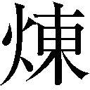師ディオン
初任務は秘密の修業
村田 栞

角川ビーンズ文庫
本作品の全部または一部を無断で複製、転載、配信、送信したり、ホームページ上に転載することを禁止します。また、本作品の内容を無断で改変、改ざん等を行うことも禁止します。
本作品購入時にご承諾いただいた規約により、有償・無償にかかわらず本作品を第三者に譲渡することはできません。
本作品を示すサムネイルなどのイメージ画像は、再ダウンロード時に予告なく変更される場合があります。
本作品は縦書きでレイアウトされています。
また、ご覧になるリーディングシステムにより、表示の差が認められることがあります。
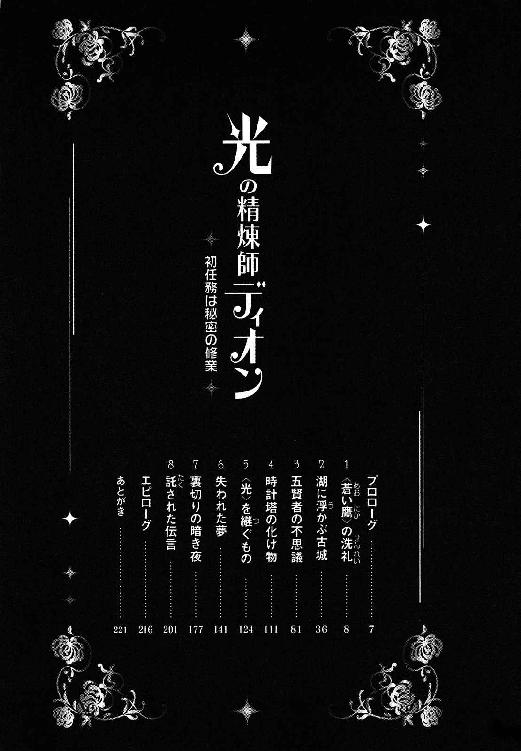
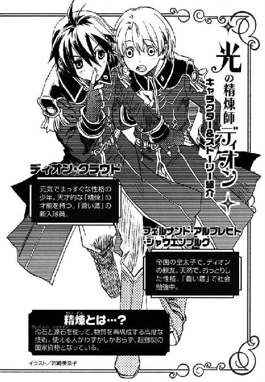
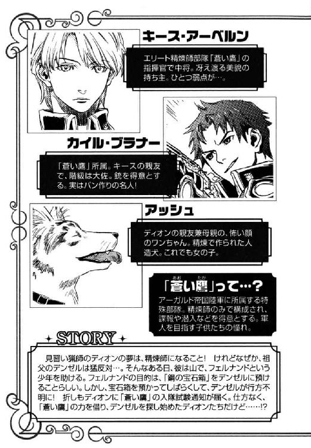
──アッシュ......。
急に呼びかけられ、アッシュは振り返った。
日が沈みかかろうとする時刻で、背後の雑木林の中の小径に人影はない。
気のせいだろうか、とアッシュは前方に向き直って歩みはじめたが、
──アッシュ、......える？ どこに......。
再び声が聞こえた。声の主はひどく遠くにいるのか、かすかにしか聞こえない。
アッシュは耳を澄ませたが、声は次第に小さくなり、やがて聞こえなくなってしまった。
（誰だろう──？）
人間の言葉だったが、人の声ではない。
切羽詰まっているような、何かを訴えているような切ない響きだった。
そして、ひどく身近で懐かしい──。
しかし、自分のような生き物が他にいるとは思えない。
（空耳だったのかな......）
心のどこかで同胞を求める気持ちがそんな声を生んだのかもしれないと、アッシュは浅いため息をつき、また歩き始めた。

「ディオンとフェルナンドの身辺を探っている者がいる」
キースの端整な相貌には、相変わらず何の表情も浮かばなかった。
「へえ、帝国陸軍のお膝元で、そりゃまた随分と大胆なやつもいるもんだな」
カイルはハシバミ色の瞳を少しばかり見開いた。
アーガルド帝国陸軍本部、第十三師団長キース・アーベルン中将の執務室である。
キースの片腕カイル・ブラナー大佐は、第七部隊〈蒼い鷹〉の新入隊員であるディオンとフェルナンドについて、キースから緊急の呼び出しを受け、彼の執務室を訪れていた。
「連邦か？ 連中、ディオンの手に〈光〉の玲石が埋まってることに感づいたとか？」
カイルは屈強な体軀をソファに沈ませ、秘書官が置いていったコーヒーを口にする。
大陸の西に位置する砂漠の国ヨートゥン共和国連邦は、帝国の肥沃な土地と源石の鉱脈を手に入れようと、度々帝国領内に侵攻し、過去には何度か全面戦争にまで発展した。今は休戦中だが、一触即発の緊張状態にある。
「現時点では、連邦がディオンやフェルナンドの存在に気づいたという報告は入ってない」
「じゃ、やっぱりムスベル──？」
「ムスベルが、ディオンの〈光〉の玲石奪還に向けて動き出したということは考えられるな」
かつて大陸北部にはムスベルという強大な王国があった。ムスベルは自らが造った生ける兵器黒雷獣の暴走により滅亡してしまったが、生き残ったムスベル人が国を再興させようと、帝国領内で地下活動を行っている。
キースは細い紙巻き煙草に火を点けた。マッチの火を、カイルが咥えた煙草にも点けてやる。
「何たって、ムスベルの秘宝、黒雷獣の〈精〉に使われたっていう伝説の玲石だもんな。天才少年も、そんな物埋め込まれていい迷惑だよな。〈精〉技術が高いってのも考えもんだぜ」
カイルは深く吸い込んだ煙草の煙を吐きだした。
「ディオンとフェルナンドが〈蒼い鷹〉に入隊したことを、ムスベルの秘密組織は嗅ぎつけたのか」
「何とも言えんが、もしもあの二人を探っている者がムスベルならそういうことになる」
「ったく、これだけひた隠しにしてんのに、どこで見つかっちまったんだ」
カイルは舌打ちする。
ディオンの技術と彼の手にある玲石が内外に知られれば、黒雷獣復活を目論む組織や研究者たちの標的になることは必至であるため、このことは、〈蒼い鷹〉だけが知る最高機密だった。
「皇太子フェルナンドが身分を隠して〈蒼い鷹〉に入隊したってのは、〈蒼い鷹〉隊員と陛下の側近しか知らねーはずだろ。となると、意外に王宮の使いだったりして。王子様が心配でこっそり様子を見に来てるとか」
「王宮に連絡を取ってみたが、そのような使いは出してないということだ」
「二人を探ってるってのは、どんなやつなんだ？」
「職人だったり学生だったり、いずれも金で雇われた連中だ。犯罪を犯しているわけではないので、身柄を確保して尋問することもできん」
「参ったね」
カイルはソファの背もたれに身を沈ませて腕を組む。
「ディオンとフェルナンドの身辺を探っている者がいることは、あの二人には言うな。余計な不安を抱かせる必要はない。だが──」
キースは凍った海を思わせる銀がかった薄青の瞳でカイルをじっと見つめた。
「絶対にディオンとフェルナンドから目を離すな」
「わかってるさ」
カイルはニッと笑った。
「もう一つ、かねてからの懸案事項なのだが──」
「ああ、例のムセイオンの一件か？」
ムセイオンとは帝国唯一の〈精師〉養成学校で、正規の〈精師〉になるためにはここで資格をとらなければならない。
「そうだ。これを機にムセイオンに手を入れたい」
キースは、ムセイオンに関する、ある疑惑を語った。

「疲れたー。いくらがんばっても大佐たちには敵わない」
フェルナンドは宿舎に戻るなりソファーにひっくり返った。
「大丈夫か？ お前、その恰好のままでソファーに寝るなよ」
ディオンは急いでバスルームから濡れタオルを持ってくると、赤い絵の具でベトベトになったフェルナンドの顔と、彼の明るい金色の髪をごしごしと拭いてやった。
今日の午後は銃撃戦の訓練だった。チームを二つに分け、赤い絵の具の弾が入った銃で撃ち合うのだが、開始の合図と共に、ディオンもフェルナンドもカイルに瞬殺されてしまったのである。
そこへ、灰色の地に黒の虎縞模様の大型犬が新しいタオルを咥えて来た。
『しょうがないわよ。〈蒼い鷹〉は陸軍最強の部隊で、その中でもカイル・ブラナー大佐は、一番の射撃の腕を持ってるんだもの。一朝一夕に彼に勝てるわけないじゃない』
狼のような獰猛な顔に似合わず、優しい女声で犬は喋った。
アッシュは普通の犬ではない、〈精〉で造られた人造の生き物である。
〈蒼い鷹〉隊員は緊急の召集に備えて、陸軍本部近くの〈蒼い鷹〉専用宿舎に住まうことになっており、ディオンとフェルナンド、アッシュは同じ部屋で寝起きしていた。
「それは、そうだけどさー。訓練しても強くなってるっていう実感がないっていうか、むしろ、落ちこぼれているのを思い知らされていくみたい」
フェルナンドはぐったりとソファーに寝そべった。
「そんなことないって」
ディオンはアッシュからタオルを受け取り、顔を拭く。
「単に体力の問題だろ。俺は山を駆け回ってたから平気だけど、お前は肉体労働の経験がないから、訓練の途中でバテちまうんだ。俺だって今日は三回殺されたぞ。黒髪だから目立たないだけで」
そう言ってディオンは紫の眼を上目遣いにして、前髪の絵の具を拭いた。
「僕なんか、七回も死んだよ～」
「どうする？ 疲れてんだったら今日は〈精〉の練習、止めとくか？」
ディオンは、フェルナンドの頰に残っていた絵の具を指先で拭う。
「ううん、大丈夫。ありがと」
フェルナンドは、ほんわかとした笑みを浮かべて起き上がった。
ディオンはティーテーブルの上に、直径二十センチ高さ三十センチほどの円筒形のガラスケースと、色とりどりの宝石のような玲石を広げた。
「金属の〈精〉は一通り終わったから、今日は水を〈精〉してみようか」
玲石を向き合わせたり隣り合わせたりして反応の場を作り、物質から特定の原子を分離して別の物質を造る作業を〈精〉と言う。
夕食前の自由時間を使って、ディオンはフェルナンドに〈精〉を教えるのがこの頃の日課になっていた。〈蒼い鷹〉は〈精師〉の部隊であるにもかかわらず、フェルナンドは〈精〉技術を全く持っていなかったからである。
「炎の玲石五グラムぐらいのを二個と、海の玲石八グラムぐらいのを二個、それぞれ向き合うように底と蓋にはめて。それから蓋には暁の玲石、これは一個でいい」
ガラスケースの内側には、指輪の台座のような小さな爪がいくつかついている。フェルナンドは赤と青、薄紫の小さな石を、その爪にはめた。
「水を〈精〉するのに、炎の玲石を使うの？」
「赤いから炎の玲石って名前がついてるだけさ。氷の玲石でも、月の玲石でも水は〈精〉できる。けど、水を造るんなら炎と海の玲石を使うのが一番操作が単純なんだ。じゃ、中に源石を入れて、蓋を閉めて」
フェルナンドは鶏の卵ほどの源石をガラスケースに入れた。源石は中に虹色のゼリーでも入っているかのように、ゆっくりと色模様の変化を見せる。
「源石の中に水が入っているの？」
「ってか、水のもとが入ってる。水素と酸素って言って、そのまんまだと空気みたいなもの。他にも色々ぎゅうぎゅうに詰まってるけど」
源石は様々な原子が詰まった万物の素のような物で、源石からはおよそ何でも造ることができた。
「水のもとの空気？ これって空気が入っているようには見えないけどなー。源石から銅や鉄とか金属を取り出す〈精〉は何となくわかるけど、空気から水が造れるって何か不思議」
フェルナンドがガラスケースの蓋を閉めると、途端に箱の上下にはめ込んだ玲石から赤と青の眩い光が迸った。
「反応のバランスが悪いな。このままだと爆発する」
ディオンには光の色で反応の強弱がわかる。
「炎の玲石の角度を変えて、ちょっと反応を弱くした方がいい」
フェルナンドは蓋についたレバーを動かした。レバーは玲石を固定する爪を動かす役割をする。炎の玲石の向きが数分の一ミリ変わった。すると赤い光は淡紅色に変化して、虹色の源石に吸い込まれた。上下の玲石から放出される光の圧力で源石が徐々に浮き上がった。見る間に源石が縮んでいく。
「そう、いい感じだ。じゃ、暁の玲石の位置を変えて。炎の玲石と向き合うように」
赤い石と薄紫の石が向き合った途端、火花と共にポンと小さな音がし、ガラスケースの内側に無数の水滴が飛び散った。
「はい、完了」
蓋を開けると火花が収まり、源石がポチャンとガラスケースの底に溜まった水に落ちる。
「源石をそのまま水に浸けておけば、水を吸い込んで三日ぐらいでもとに戻るよ」
「水を造るには、炎と海の玲石を使って、赤い光の色が強すぎないように注意と......」
フェルナンドはノートに書き留めた。ディオンは毎日一つずつ〈精〉を教え、この一ヶ月でノートは半分埋まっていた。
「玲石って、まだまだ何種類もあるんでしょ。違う玲石を何個も組み合わせて使う〈精〉もあるし、憶えきれるかなあ」
「一つ一つの玲石の性質と、物質が何で構成されてるかさえ憶えちゃえば大丈夫。水の粒が、水素と酸素でできているって言ったろ。炎の玲石が向き合うと、源石から水素が取り出せる。けど、それって爆発しやすいから注意が必要。海の玲石は、源石から酸素を取り出せる。んで、炎と暁の玲石が向き合うと電気が発生して火花が散る。火花が酸素と水素を結合させて水ができるというわけ」
「......むずかしー」
「今の〈精〉は二種類の原子の結合だけど、同じ原子からできている物を分解して組み立て直す〈精〉もある。大地の玲石を使えば、炭からダイヤモンドが造れるぜ。同時に熱処理とかしなきゃならないから、ちょっと面倒だけど」
「何か、頭痛くなってきた。たとえ全部憶えても、ちゃんと操作できなきゃだめだし」
フェルナンドはため息をついた。
使用する玲石の種類がわかっているだけでは、目的の物は〈精〉できない。向き合わせる玲石の角度や距離、反応の時間などの微調整が必要なのである。
『〈精師〉が優遇されるわけよね。〈精師〉志望の人はたくさんいるけど、正規の〈精師〉になれる人は少ないもの。こんな難しいこと、ちょっとやそっとじゃ身に付かないわ』
寝床にしているクッションに寝そべったままアッシュが言った。
「早くちゃんとした〈炉〉が使えるようになりたいな......」
フェルナンドは巨大砂時計のような〈炉〉を眺めて再びため息をついた。玲石の位置や角度を調整する装置を〈炉〉と言う。フェルナンドが使っているのは初心者用の簡易〈炉〉で、操作は単純だが、高度な〈精〉はできなかった。
「それが使いこなせるようになったら、大佐か中将に相談して、お前に合った〈炉〉を作ってもらおう。ついでに俺も、この手袋を直したいし──」
ディオンは、両手の黒い指なし手袋に目を落とす。この手袋がディオンの〈炉〉だった。手袋の手の平部分に、玲石を貼り付け、手の平を向き合わせることによって反応の場を作り、指を動かすことで玲石の角度の調整ができるようになっていた。しかし、この手袋は父の物で、ディオンの手には少し大きすぎ、微妙な操作ができない。
『新しい〈炉〉を作れば？ その手袋は大事に取っておいてモーリスに会えた時、彼に返せばいいじゃない』
ディオンの父は、天才と言われた〈精師〉で、長いこと戦死したと思われていたが、最近になって連邦の捕虜となっていることがわかった。
「そうか。新しい〈炉〉を作って、これは父さんに──」
いつか会った時──。ディオンはおぼろに記憶に残る父の笑顔を思い浮かべた。
「コレハ窓デスカ？ ハイ、ソウデス。コレハ窓デス、ってさー。実際こんな会話しないよなー。見りゃ、わかるじゃん」
「しょうがないよ、疑問文の基本だもの。はい次」
夕食後は、ヨートゥン語──連邦の標準語の勉強である。〈蒼い鷹〉の任務の八割方は、潜入捜査や情報収集である。訓練の一つとしてディオンには敵国の言語の学習が課せられていた。
〈蒼い鷹〉では二等兵のフェルナンドだが、彼はれっきとしたアーガルド帝国の皇太子である。将来的に国の外交を担う立場上、フェルナンドは幼い頃から連邦の言語をはじめとして、帝国辺境部の方言や大陸南部の小国家群の言語を教え込まれていた。そこでディオンはフェルナンドからヨートゥン語を教わることにしたのである。
「コレハ犬デスカ？ イイエ、違イマス。これはあるかも。な、アッシュ」
ディオンはテーブルの下で寝そべっている、アッシュを覗き込む。
『ハイ、ソウデス。コレハ犬デス、って答えてよ』
アッシュを造ったのはディオンの父モーリスである。モーリスは当時、帝国の〈精師〉養成学校ムセイオンの附属研究所に勤めており、そこで黒雷獣の研究をさせられていた。アッシュは、その研究過程で造られた言わば小型版黒雷獣なのである。
黒雷獣を造ったのはムスベル王国だが、ムスベルは黒雷獣の暴走によって滅び、黒雷獣を造る技術は失われてしまった。また、連邦は〈精〉技術がそれほど発達していない。
アッシュは現存する唯一の〈精〉で造られた生き物だった。アッシュの存在が知られれば、連邦やムスベルが奪取に向けて動き出すことは必至である。
「わかってるって。冗談だよ」
ディオンは笑ってアッシュの鼻先に手を伸ばした。温かい舌がペロッとディオンの指を舐める。幼い頃、アッシュの舌は死んだ母の手の代わりだった。今でもディオンはアッシュに舐めてもらうのが好きだ。
「お前を研究材料になんかさせてたまるか」
ディオンが頭を撫でると、アッシュは微笑んでパタパタと尻尾を振った。
「私ハ、犬ガ好キデス。私ハ猫モ好キデス。アナタハ犬ガ好キデスカ？」
ディオンは真面目にテキストを読んでいたが、そのうち、スーという寝息に気づいて、顔を上げた。フェルナンドがテーブルに突っ伏して眠っていた。
「あー、フェルナンド、そのまま寝るな。起きろ、風呂に入れ。いや、風呂はいいからせめてパジャマに着替えてベッドへ──」
「んー。わかった」
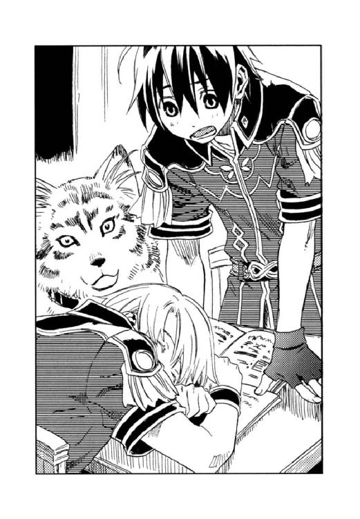
フェルナンドは答えたが、またスーッと眠ってしまった。
「もう、しょうがないな」
ディオンは立ち上がり、フェルナンドを抱き起こすと、うつらうつら半分眠っている彼の軍服を脱がせた。アッシュがパジャマを咥えて来て、ディオンがそれをフェルナンドに着せる。
フェルナンドは王宮で身の回りのことを世話係にさせていたせいか、なかなか生活習慣が自立しない。反対に祖父に育てられたディオンは幼い頃から家事全般何でもやってきた。必然的に、ディオンがフェルナンドの世話をするようになってしまったのである。
『着替えさせるのも、堂に入ってきたわね。いいお父さんになるわよ』
アッシュはディオンの手際の良さを揶揄した。
「よしてくれよ。今からいいお父さんになる練習なんかしたくない。何で俺が同じ歳の男を着替えさせなきゃならないんだ」
とか言いつつも、ディオンはフェルナンドを放ってはおけず、ついつい面倒を見てしまうのだった。
午前八時──、斜めから差し込む夏の日が、木々の緑を眩しく輝かせている。
「いくら寝ても眠いー」
宿舎に隣接する格技場へ向かう小道で、フェルナンドは大きなあくびをした。
「昨日も早く寝たのにな。俺が着替えさせたのも覚えてないだろ？」
フェルナンドを寝かしつけてから、ディオンは部屋の片付けをしたり洗濯物をしまったりとバタバタしたのだが、フェルナンドは一回も目を覚まさず、爆睡していたのである。
「そうなの。ディオンとヨートゥン語の勉強してたはずなのに、気がついたらベッドで朝を迎えてた」
『疲れが溜まってるのかもね。毎日毎日、訓練ばかりだもの』
「何だかねー......」
フェルナンドは弱々しい笑みを浮かべ、そのまま黙り込んでしまった。
「どうした？ 具合でも悪いのか」
「ううん。ちょっと気が重いだけ。僕、格闘技って苦手だから」
今日の午前は、格闘術の訓練なのである。
「僕、このままやっていけるのかな。僕はディオンみたいに体力も格闘のセンスもないし、〈精〉の才能もないし......父上の反対を押し切って、〈蒼い鷹〉に入隊しておきながら、こんな弱音を吐いちゃいけないとは思うけどね......」
『ディオンと比べちゃだめよ。ディオンは〈帝国の黒雷獣〉と言われた軍人のおじいちゃんに、小さい頃から思いっきり鍛えられたし、ディオンの格闘の技術を磨いたのは熊や猪だもの。こんな野生児なんて滅多にいないわよ』
それって、ほめてるのか？ と前置いて、
「経験値の問題だよ。運動神経は悪くないんだから、訓練を積んで体力つけていけば、熊や猪にだって勝てる」
ディオンはフェルナンドの気持ちを盛り立てようと、努めて明るく言う。
「熊と戦うつもりはないんだけど......」
「拳銃の腕は俺より上だし、器用だし、大陸中の国の言葉が喋れるぐらいだから、俺よりはずっと頭がいいはずだ。〈精〉だってちゃんとした先生について、基礎から勉強すれば、すぐに上手くなるさ」
これは方便でも何でもなく、ディオンは正直にフェルナンドの長所を取り上げて励ましたつもりなのだが、
「そうなのかな......」
いつものほんわかした笑みは見られなかった。
格技場で彼らを待っていたのは、カイル、ジェイダ、ユアンだった。
「お早う」
ジェイダが笑んだ。
ジェイダ・ファーロング大尉は〈蒼い鷹〉唯一の女性兵士で、長い赤毛の妖艶な美女である。
彼女の武器は鞭で、持ち手にはめ込まれた玲石と彼女の手の平に埋まっている玲石が連動しており、鞭から衝撃波を生み出すことができた。手に玲石を埋めるのはムスベル人の風習である。彼女は難民として帝国に移住してきたムスベル人の両親により、生まれた時に右の手の平に一つ玲石を埋め込まれていた。
「今日は僕も訓練に参加させていただきますね」
ユアンの階級は中尉、二十歳のれっきとした男性なのだが、体つきが華奢で、淡い金の長い髪と線の細い面立ちで、ともすると女性に見えてしまう。本人はそれを気にしているのかいないのか、「僕は男ですよ～」といつも穏やかに笑んでいた。彼もムスベル人で手の平に玲石が埋まっている。彼は弓使いで、手の平と弓にはめ込まれた玲石により、紅い光の矢を〈精〉して射ることができた。
「どうしたの？ フェルナンド、元気ないんじゃない？」
ジェイダは俯いているフェルナンドの顔を覗き込む。フェルナンドが皇太子だと知っていても、〈蒼い鷹〉の隊員たちは、彼をディオンと同じ新入隊員として扱っていた。
フェルナンドは「ううん、別に......」と微笑み、それが無理した笑顔のように思えて、ディオンは心配だった。
準備体操を終えると、
「じゃ、今日は三人一チームで、接近戦のシミュレーションしてみるか。ディオン、フェルナンド、アッシュで組め。こっちは俺ら三人」
カイルは格技場の端に備えられた武器棚から一振りの剣を手にする。
「乱戦を想定ってことで、銃は使わねえ。飛び道具以外の好きな武器を選びな」
普段から狩猟用ナイフを使っているディオンは大型のナイフを選んだ。フェルナンドは長剣を、ジェイダは愛用の鞭を手にし、ユアンは槍を選ぶ。アッシュは武器を持てないというか、いらない。
「んじゃ、よーい、どん！」
凄まじい攻防──とはいかなかった。
最初からわかっていたことだったが、勝負はあっけなくついた。
「ま、参りました」
フェルナンドの首にはユアンの槍、アッシュにはカイルの剣が突きつけられ、ディオンの体にはジェイダの鞭が絡まっていた。
ナイフを使うディオンに比べ、槍を持っているユアンや鞭を振るうジェイダは間合いが広い。不利な分をディオンはスピードで補い、大振りする槍や鞭の間隙を縫って、相手の懐に飛び込んだ。熊や猪と戦ってきたディオンは、それなりに戦闘のプロに肉迫する戦いをしたと言えよう。
しかし、その間にフェルナンドが危機に陥ってしまうのである。ディオンがフェルナンドを庇おうとすると、百戦錬磨の先輩隊員は巧みにその隙を突いてくる。
アッシュも長年ディオンとコンビを組んでいたので、彼とは阿吽の呼吸で攻められるのだが、フェルナンドの動きがいまいち読めず、快進撃とはいかなかった。もたもたしているうちに、あっけなく降参となったのである。
「ユアンが槍でジェイダが鞭ってわかった時点で、もっとリーチの長い武器を選ぶべきだったな」
カイルは言い、
「だって、俺、普段からナイフ使ってたし。小回りが利くからナイフが好きなんだもん」
「僕も、剣は習ってたけど、それ以外使ったことなかったから」
少年二人はうなだれる。
「ディオンは動きが速いから、ナイフでもいいかもしれねえな。だが、攻めのパターンが単純だ。獣相手ならそれで十分なんだろうが、訓練を積んだ兵士は相手の攻撃を読む。見切られたらお終いだぞ」
「......わかった」
「フェルナンドは割合器用だから、槍とか矛なんか向いてるかもしれないわね。鞭でもいいわよ。私が教えてあげる」
悄然としているフェルナンドに、ジェイダは優しく笑む。
「あとは、チームワークだな。〈蒼い鷹〉は三人または四人でチームを組む。先発と援護じゃ、立ち位置や攻撃のタイミングは違うんだぜ。チーム戦の場合、一人で攻めと守りをやってちゃどうしても隙ができる。ま、マンツーマン勝負に持ち込むっていう手もあるが、それには各々が相応の腕でなきゃな。じゃ、ちっと休憩」
ディオンとフェルナンドは並んで壁に寄りかかって座り込む。
「畜生。やっぱ、〈蒼い鷹〉は強い」
汗を拭きながらディオンが呟くと、
「ごめんね。足を引っ張っちゃって」
フェルナンドは、済まなそうに俯く。
「違うって。俺がチーム戦に慣れてないからなの」
（まずいな。すっかり自信を失ってる）
どうしたらいいのだろう、とディオンは悩んだ。
その時、格技場の扉が開いた。入って来た若い将校の姿を見て、
「中将──！」
ディオンとフェルナンドは慌てて立ち上がり敬礼する。
「よう、キース、どうした？ 格技場へ来るなんて珍しいじゃねえか」
士官学校時代からの親友であるカイルは、キースを名前で呼ぶ。
「ディオンとフェルナンドに話がある」
相変わらずの無表情で、彼は薄氷の瞳を少年たちに向けた。ディオンはギクリとして思わず姿勢を正した。キースは決して声を荒らげることはないのだが、静かな迫力があり、ディオンはキースに見つめられると緊張してしまうのだった。
「フェルナンド、ムセイオンに入学する気はないか？」
ムセイオンとは、国立の〈精師〉養成学校である。ここで単位を取得すれば正規の〈精師〉の資格を得ることができた。
「知っての通り、〈蒼い鷹〉の隊員は〈精師〉であることが条件だ。だが、君はまだ〈精師〉の資格を持っていない。幸いムセイオンには士官学部という〈精師〉の軍人を育成する学部がある。そこへ入学すれば軍人としての資質と〈精〉の技術を同時に身に付けられるだろう」
（それだ！）
ディオンは心の中で思わず叫んだ。
（いきなり陸軍最強の〈蒼い鷹〉相手に戦闘の訓練なんかするから、自信がなくなっちゃうんだ。ムセイオンに入学すれば、ちゃんとした先生に基礎から習えるじゃないか）
ディオンは「よかったな」と、フェルナンドの顔を見た。しかし、
「いいお話だと思いますが......」
彼は浮かない表情のままである。
「僕は学校に通ったことないんです。ずっと家庭教師だったから、学校ってどんな感じかわからないし......、それに、ムセイオンは全寮制でしょ？ 僕、いまだに身の回りのこと自分でできないのに......」
フェルナンドはチラッとすがるようにディオンを見た。
「案ずることはない。ディオンも一緒に入学させる」
「え!? 俺も？」
ディオンは目を丸くして自分を指差した。
「やった！ 一緒にムセイオンへ行こうよ！」
フェルナンドは先刻とは打って変わって嬉しそうな表情である。
「ちょ、ちょっと待ってくれ」
困ったな、と思いつつ、
「俺、もう〈精師〉の資格持ってるよ。今更ムセイオンになんか行かなくたって......」
ディオンは言った。
「お前が持っているのは、医学部の〈精師〉免許だろう」
カイルが口を挟む。
ディオンはムセイオンに入学せず、いきなり検定試験を受けて〈精師〉の資格を取った。当時、壊れかかっていたアッシュの心臓を治すために、ディオンは医療関係の〈精〉を独学し、検定試験も医学部で受けたのだ。
「士官学校を出てないんだから、ムセイオン士官学部研修の履歴があれば今後の出世に有利だぜ。俺らの時代はムセイオンに士官学部がなくてさ、俺とキースは陸軍士官学校とムセイオンを掛け持ちしたんだぜ。通うのが大変だったっての」
「別に出世がどうのっていうことじゃなくてさ......」
「アッシュと離れるのが寂しいとか？」
ムセイオンの教授ならば、アッシュを一目で〈精〉された生き物だと看破してしまう。実験材料にされるのは明白なので、アッシュをムセイオンに連れては行けない。
『私のことなら心配しないで。ちゃんとお留守番できるわよ』
アッシュはニッコリと笑む。
「ディオン、ムセイオンに入学したくないの？」
フェルナンドは狼狽えていた。
「ごめん、フェルナンド。俺、一日も早く父さんを捜しに行きたいんだ」
「今、仲間が親父さんの居所を探ってる。親父さんの居所がわかれば、俺たち〈蒼い鷹〉に救出作戦が命じられる。それまでムセイオンで力をつけろ。焦ることはねえ」
休戦中の敵国に軍隊を出動させることはできない。表だった作戦が立てられない場合には、小隊でありながら、連隊並みの働きをする〈蒼い鷹〉が極秘で行動する。
「俺は戦争は嫌いだ。人が死ぬのも嫌だ。でも〈蒼い鷹〉は人を殺さないし、〈蒼い鷹〉に入れば父さんを捜しに行ける、そう思ったから入隊したんだ。のんびりムセイオンに行ってなんかいられない」
「......そうなの」
フェルナンドの落胆ぶりにディオンの心は痛んだ。だが、決意は変わらない。
ディオンは勇気を振り絞って、キースを正面から見つめた。
「すみません。その話、お断りします」
「モーリス・タウンゼント博士の居場所はまだ特定できていない。よしんば博士が見つかったとしても、お前を救出作戦に加えることはできない」
薄氷の瞳は冷徹だった。
「どうして!?」
思いも寄らない言葉に、思わず声が高くなった。
「戦闘員としてはまだ未熟だからだ」
「──未熟って──」
カッと顔が熱くなる。
「試してみるか？」
普段、表情のないキースの瞳にフッと薄い笑みがよぎり、フェルナンドとアッシュはギョッとした。
「はい！」
ディオンはグッと奥歯を嚙みしめる。精鋭と言われる〈蒼い鷹〉の中でも、キースは最強だという。すなわち陸軍で一番の実力者なのだ。勝てっこないのはわかっているが──。
（ここで引き下がったら、確実に父さんの救出作戦から外されちまう。やるだけやって、実力を示さなきゃ）
「待ってください」
フェルナンドとアッシュが踏み出しかけたが「まあ、黙って見てろ」とカイルが止める。
「キースがわざわざ格技場に足を運んだのは、最初っからこういう展開を予想してたのさ」
カイルはクスクス笑った。
「どんな手を使っても構わない。好きにかかってこい」
キースは白い手袋にいくつか玲石を貼った。ディオンと同じくキースの手袋も〈炉〉の機能を持っている。
ディオンは格技場の端に置いてあった愛用の猟銃を手にし、訓練用の刃を潰したナイフを腰に差した。念のため黒い指なし手袋にも玲石を貼る。
完全武装したディオンはゴクリと生唾を吞み、飄然と立つ上官を睨む。
「お願いします！」
言うが早いか、ディオンは猟銃の引き金を引いた。銃にはカイル直伝の〈笑いが止まらなくなる散弾〉が込めてある。広範囲に広がる散弾を避けるのは、いくらキースでも無理なはずだった。
銃声と同時に、キースは玲石を貼った手の平をディオンに向けた。手の平から透明な光の粒子が放射される。粒子は迫り来る散弾の破片をことごとく撥ね返した。千分の一秒にも満たない時間に、それが行われたのである。
「な──」
ディオンはキースが〈精〉した光の粒子の正体がわからず、また彼の〈精〉の速さにも驚いて一瞬啞然としたが、すぐに気を取り直し腰からナイフを抜いた。
裂帛の気合いと共に、彼はキースの懐に飛び込む。自分が唯一彼に勝るのは、野生の獣並みの瞬発力だ。しかし──。
間合いに入る前に、キースの長い足がディオンの腹にめり込んだ。続く手刀がディオンのナイフを弾く。ディオンは尻餅をつき、ナイフがカランと音を立てて床に落ちた。
腹を押さえ、吐き気を堪えながらディオンはキースを睨んだ。無敵の中将は表情一つ変えず、ディオンを見下ろしている。
「──畜生」
ディオンは手の平を向き合わせた。黒い指なし手袋には電気を発生させる玲石が貼ってある。バリッという音と共に生まれた稲妻を、彼はキースに向けて放ったが、その一瞬前に、キースが放った衝撃波がディオンの稲妻の軌道を変え、衝撃波はディオンに直撃した。
「いてててててっ！」
ビリビリと体中に超振動が奔り、ディオンは床の上でのたうった。
「体術のスピードはまあまあだ。しかし、稲妻を選んだのは失敗だったな。電気は〈精〉に手間がかかる」
宣告するキースは、憎らしいほど淡々としていた。
「お前は攻撃系の持ち技を増やす必要がある。士官学部では、戦闘用の〈精〉を中心に学ぶ。初心に返って修練するがいい」
そう言い放ち、キースは靴音を響かせて立ち去った。
「くっそ──。ムセイオンで実力つけて、絶対、中将を負かしてやる!!」
床に転がったまま歯がみするディオンに、
『まんまと、中将の作戦にはまっちゃったわね』
アッシュは苦笑し、
「一緒に入学だね」
フェルナンドは嬉しそうに言った。
アーガルド帝国陸軍総司令部──。
人払いをした司令室で、キースは白髪交じりの茶色い髪をきっちりとオールバックに整えた初老の男と向かい合っていた。
陸軍総司令官スヴァルト公爵エイモス・アーベルン元帥──キースの養父である。
「フェルナンド殿下がムセイオンに入学すると聞いたが」
「御心配なく。ディオンも一緒に入学させます」
「例の件か？」
「はい。ですから、万一のことを考えて我々もムセイオン内で行動できるよう、手はずを調えておきました」
養父の思惑ありげな様子を訝り、
「それが何か？」
と、キースは問い返す。
「殿下を危険に晒すのは望ましくないと思ったのだが、ディオンやお前たちもムセイオンに行くのなら、かえって好機かもしれん。実は、ムセイオンに関して新しい情報が入ったのだ」
エイモスは今朝方届いた報告書をデスクに広げた。
「ムセイオンが、ユーミールの〈炉〉を隠し持っていることは知っているか？」
「ユーミールの〈炉〉というと、〈死の光と熱〉の発生装置ですか？」
ユーミールとは、ムスベルが開発した生ける兵器黒雷獣の最後の一体である。
二十五年前、連邦と帝国とムスベル王国との大戦後、凱旋した黒雷獣は突然暴走し〈死の光と熱〉を放射し続けて、ついに自国を白い砂礫の荒野へと変えてしまった。そして黒雷獣自身も自滅したのである。唯一生き残ったユーミールは、当時の皇帝及び軍幹部の政策により分解され、手足と胴体は砂礫に埋められ、心臓は王宮に保管、脳は旧ムスベル領の神殿に封じられている。
「ユーミールを分解した時、どういうわけだかユーミールの体内に装着してあったはずの〈死の光と熱〉を〈精〉する〈炉〉が紛失してしまってな」
当時、ユーミールの封印を指揮していた元帥は苦い顔をする。
「ムセイオンの手の者が秘密裏に持ち去ったことまでは突き止めたのだが、あの通りムセイオンは、軍にとやかく言われるのを嫌がってな」
〈精〉は生活に欠かせない技術であり、政治・経済的にも軍事的にも〈精〉に頼ることが多い。開校当時はただの〈精師〉養成学校であったムセイオンは、時代の要求に応じて勢力を伸ばし、今や帝国中の〈精〉に関わる物資──源石、玲石、〈炉〉の取り引きを統括する一大組織となってしまった。
「ムセイオンが〈炉〉を隠し続けているのなら、何も問題はないと思いますが。保管場所がムセイオンというだけで、我々が管理する手間が省けます」
「まあ、そう思って軍も今までユーミールの〈炉〉を放っておいたのだが、ここへ来て連邦の密偵がムセイオンの周辺をチョロチョロし始めた。やつらの狙いが〈炉〉であることは間違いない」
「危険ですね。ムセイオンは〈精〉の技術に長けてはいても、軍事に関しては疎いですから。密偵の侵入を見過ごして、〈炉〉を奪われてしまうかもしれません」
「その通り。我々が保管して置く方が安全だ」
「しかし、軍が〈炉〉の管理を申し出ても、ムセイオンが素直に渡すとは思えませんが？」
「そんなことはわかっておる。だからお前を呼んだのではないか」
エイモスは唇の端をつり上げ、息子の怜悧な瞳を見つめた。
「キース、今年は湖が割れるぞ」
よく晴れた昼下がり、湖畔に設けられた小さな船着き場で、大きなトランクを提げたディオンとフェルナンドは、船を待っていた。
「すごいねー。お城が湖に浮かんでるみたいだ」
直径十キロに及ぶ湖の中央にムセイオンは建っていた。真っ白い壁面が夏の日差しを照り返し、フェルナンドは眩しさに目を細める。今日は二人のムセイオン編入学の日である。
「浮かんでるんじゃない。湖の底に土台になる石を何十メートルも積み上げて、その上に校舎を建ててあるんだ。土台の石も建物もその場で〈精〉して造ったんだってさ」
「ディオン、詳しいね。あ、そうか。ちっちゃい時、あそこに住んでたんだっけ」
ディオンの父モーリスは、ムセイオンの附属研究所の研究員で、ディオンは、父が出征して行方知れずになるまで、研究所内の宿舎に住んでいた。その後祖父デンゼルに引き取られ、ビヴロスの山中で猟師をしていたのである。
「五歳までだから、その時のことはろくに覚えてない。土台云々の話は〈精師〉の検定試験を受けに行った時、たまたま聞いただけ」
「アッシュを連れて来られなくて残念だね。来ればきっと懐かしがっただろうに」
「うん......」
アッシュが造られてから今まで、ディオンはアッシュと離れたことがなかった。
（何だか、アッシュがいないのって変な気分だ）
万一のことを考えて見送りにも来させなかったが、やっぱり何となく寂しい。
やがて人工の島から一艘の小舟がやってきた。大きさは手漕ぎの舟ぐらいだが、源石を燃料とする小さな〈機関炉〉がついているので、漕ぐ必要がない。
「ディオンさんとフェルナンドさんですね。お待たせしました」
五十がらみの赤ら顔の舵取りは、ディオンとフェルナンドを舟に乗せ、再びムセイオンに向かって舟を出す。舟は音もなく穏やかな湖面を滑って行った。
「検定試験日でもないのに、島へ渡るのは変だと思ったら、お二人とも〈蒼い鷹〉の軍人さんなんですね。短期研修ですかい？」
「まあ、そんなところです。でも、島へ渡るのは変──って、今日はムセイオンに行ってはいけない日だったんですか？」
「いけないっていうより、特別な場合を除いて、夏と冬の休暇の時と、入学式卒業式の日以外は、ムセイオンへの出入りは禁じられてるんですよ」
舵取りはムセイオンの資材運搬係で、この舟も本来は荷物輸送のための舟なのだという。
「舟の〈機関炉〉にはめ込む玲石も、金庫にしまっておくぐらいですよ。だから勝手に生徒さんが島を出ることもできないし、誰かが島へ入ることもできやしません」
「へえ、そうなの。随分厳しいんですね」
「開発中の〈精〉技術が連邦に漏れるのはまずいからでしょうね。その辺は軍人さんの方が詳しいんじゃねえですか？ まあ、島には店も、診療所もありますからね。生活するには困りませんや」
「それじゃあ、教授たちも島に缶詰めなの？ 窮屈だろうに」
「先生方は出入り自由ですよ。湖の水を〈精〉して道を造り、馬で渡っていますぜ。休暇や行事で学生さんたちが大移動する時も、教授たちが道を造りますな。時間限定で」
「ムセイオンの教授ってすごいんだねー」
フェルナンドは教授の〈精〉技術に驚いたようだったが、
（そこまでやるかな）
ディオンはムセイオンの秘密主義に驚いた。
そうしている間にも舟はムセイオンに近づいていく。城塞のような堅牢な建物が島の中央にそびえ、周囲には緑鮮やかな木々が整然と植樹されていた。優雅さもさることながら、規模の大きさは王宮以上かもしれない。
正面にはひときわ大きな塔がそびえ、塔の最上部には巨大な時計が設置されている。塔は神話に登場する神々や天使、怪物などの彫刻や美しい唐草模様で装飾され、時計の針や数字もアンティックな美しいデザインだった。
「あの時計塔には化け物が棲んでるってもっぱらの噂ですよ」
運搬係は、時計を指さした。
「化け物？」
「ムセイオンには、四つの学部と研究所があります。それぞれの学部長、研究所の場合は博士ですが、その方たちを総称して五賢者と言いますな。その五賢者にまつわる怪談があって、学生さんたちは〈五賢者の不思議〉と呼んでいますよ。あの時計塔はその内の一つです」
「おいおい」
〈精〉研究の中枢であり帝国の科学の象徴であるムセイオンに、怪談はないだろうと、ディオンは少しばかり呆れる。
「噓じゃあありません。私も何度かその〈不思議〉を体験しましたから」
運搬係の表情は真剣そのものだった。
やがて、舟は島の東側の水路に入る。水路は建物の内側まで続いていた。広いトンネル内には電灯が明々と灯り、水路の左右には、倉庫らしき扉が連なっている。
水路の突き当たりで舟を下り、運搬係の指示で二人は例の時計塔へと向かう。時計の真下が正面玄関なのだそうだ。
時計塔の真下には樫の大扉があった。古風なノッカーを叩くと、脇の通用口が開き、事務官らしいスーツ姿の職員が現れる。
「〈蒼い鷹〉からの編入学生ですね。士官学部高等科、特待生クラス──」
事務官は手にした書類と、少年二人を交互に見る。それがあまりに念入りだったので、
「僕ら、本物の編入生ですよ」
フェルナンドは思わず言った。
「ああ、失礼。これも規則ですので。〈蒼い鷹〉の方を疑うわけではありませんが、ムセイオンの技術を他国に漏らすわけにはいきませんから」
事務官は済まなそうに笑い、
「荷物検査をさせてもらいます」
と二人にトランクを開けさせ、中を検めた。
「島に出入りする人全員を、こうやってチェックするんですか？」
「ええ。教授は調べないけれど、その他の人たちは全員。でも、普段はほとんど人の出入りはないから大した手間じゃありません」
毎日出入りするのは資材運搬係ぐらいだと言う。
「それから、申し訳ありませんが、銃は預からせてもらいます。射撃訓練の時は学校の備品を使ってください。学校を出る時には返しますから」
ディオンは肩から猟銃を外し事務官に渡した。フェルナンドもショルダーベルトから拳銃を抜く。ディオンの腰の狩猟用ナイフは、さほど大きくないので携帯を許可された。
それからようやく「お待たせしました」と二人は中に招き入れられたのである。
ロビーの大理石の床には分厚い絨毯が敷かれ、高い天井には古風なデザインのシャンデリアが下がっていた。壁には精緻なタペストリーや美しい絵画が飾られている。
「ほんと、建物の中まで王宮並みだ」
フェルナンドは天井に描かれた物語絵を見上げて呟いた。
事務室で編入手続きを済ませると、ディオンたちは時計塔のある本館を出て、士官学部へと案内される。トランクは学生寮に運んでおいてくれるとのことだった。
ムセイオンは各学部に高等科と専攻科があり、義務教育を終えて〈精師〉を目指す者は、まず高等科に入学する。高等科は三年制で、そこを卒業すれば初級〈精師〉の免許が得られ、さらに専攻科卒業で中級〈精師〉、博士課程に進んで論文及び〈精〉技術が認められれば上級〈精師〉の資格を得る。
ディオンたちが編入学する特待生クラスは、高等科に在籍しながら中級から上級の〈精〉を学ぶ特別コースで、学年の枠がない。〈蒼い鷹〉の隊員の半数はこのクラスの卒業生である。
「あなた方が編入する特待生クラスの担任は、ベニート教授です。士官学部の学部長も兼ねていらっしゃるのですよ」
左右に色鮮やかな花々が植えられた石畳を歩きながら、事務官は言った。
特待生クラスの生徒は、将来を最も嘱望されるエリートであるため、学部長自らが担任を務め、人材育成を図るのだと言う。
士官学部校舎の玄関をくぐり、事務官は「編入学生をお連れしました」と学部長室をノックした。
「どうぞ」
よく通る低い声が返ってきた。
学部長というからには、退官間近の老人かと想像していたディオンは、学部長のデスクから立ち上がった青年の姿に啞然とした。
彼はすらりとした長身で、癖のない灰色の髪を肩まで垂らし、理知的な灰色の瞳に銀縁の眼鏡をかけていた。鼻や口元の線は、精緻な彫刻のように優美で、神に愛されて花になったという神話の登場人物を思い起こさせた。金獅子のムセイオンの紋章が入った黒いスーツも似合うが、眼鏡をとれば古代の哲学者が身に着けていたような長衣の方が似合うかもしれない。
（中将ほどの美形なんて、そうそういるもんじゃないと思ってたけど、世界は広いぜ）
歳もキースと同じくらいだろうか、三十前で学部長に任ぜられるのだから、キースと同じく天才的な頭脳と実力を持っているに違いない。
ただ、キースと異なるのは──。
「ディオン君とフェルナンド君だね。待っていたよ。私はアマデウス・ベニート。君たちの担任だ」
彼は優しげな微笑を浮かべたのだ。そして何と、彼の方から手を差し出したのである。キースは絶対に笑わないし、敬礼はしても自分から握手を求めるなど、天地がひっくり返ってもしないだろう。
（いや、中将も相手が軍人じゃなきゃ握手ぐらいはするんだろうけど）
ディオンにはそういう彼を想像できない。
「よろしくお願いします」
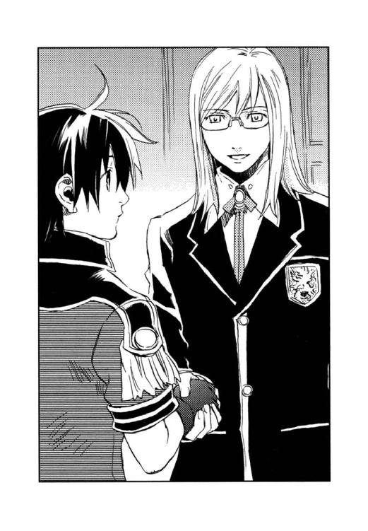
しなやかなベニートの手を握り返し、ディオンもフェルナンドも思わず笑み返す。
「編入学試験の結果を見せてもらったよ。さすがは現役の〈蒼い鷹〉隊員だね。上級の免許を持っているディオン君はもちろんだが、フェルナンド君も試験結果を見る限り、特待生クラスの生徒として何ら遜色はない。優秀な生徒を迎えることができて、とても嬉しく思っている。微力ながら君たちの成長を手助けしたい。わからないこと、困ったことがあったら、何でも言ってくれたまえ」
「ありがとうございます」
嬉しそうなフェルナンドを見て、
（ちょっと自信を取り戻したかな）
ディオンは少し安心した。
「そろそろ四限が終わる時刻だ。クラスメイトに紹介しよう」
ベニートは二人を手招いた。
教室に入ると、ざわめいていた生徒たちが一瞬で静まりかえり、ディオンたちに注目する。
皆、一様にムセイオンのエンブレム入りの白いシャツに黒いズボンを身に着け、エンジのタイを締めていた。これがムセイオンの夏の制服らしい。当然のことだが、女生徒の姿は全くなかった。ムセイオンは男子校と銘打っているわけではないが、帝国では〈精〉は男の仕事という固定観念がある上、〈精師〉の軍人の養成を目的とする士官学部に女子は入学しない。
ベニートは教壇にディオンとフェルナンドを登らせる。
「新入生を紹介しよう。ディオン君とフェルナンド君。ごらんの通り現役の〈蒼い鷹〉隊員だ」
〈蒼い鷹〉と聞いて生徒たちはどよめいた。
「二人は知識技能を高めるために、長期休暇をとって編入学してきた。二人ともまだ十六歳、つまり一年生だ。〈蒼い鷹〉を目指す君たちにはいい目標になるだろう」
ベニートは生徒たちに笑みかける。
「ディオン・クラウドです。アーベルン中将にこてんぱんにのされて、ここで修業し直せと言われてやってきました。よろしく」
ディオンの自己紹介に生徒たちがドッと沸く。
「フェルナンド・レインです。いろいろ教えてください。よろしくお願いします」
皇太子だということがバレないように、フェルナンドはムセイオンの編入学試験の時から偽名を使っている。
ベニートは、「フランツ」と一人の生徒を呼んだ。ディオンたちより年かさの、芥子色の髪をきっちり刈り込んだ生徒が立ち上がる。
「級長のフランツだ。わからないことは彼に聞くといい」
「よろしく」
彼は級長らしく、真面目で人の良さそうな笑みを浮かべた。
ベニートが退出すると、生徒たちがドッと寄ってくる。
「ディオン、その歳で少尉なんだ！ もう〈精師〉の免許を持ってるんだね？」
「ああ、春に検定試験を受けて医薬学の免許をとった。だけど、攻撃系の〈精〉がダメでさ。さっき言ったように、中将にのされた」
生徒たちは「すげー」と感心し、同時にディオンの飾らない様子に親近感を持ったようだ。
「フェルナンドは二等兵ってことは〈精師〉の免許も、士官学校も出てないってことだろ？ 〈蒼い鷹〉は、一般の志願兵は採らないと聞いていたけど」
「まあ、えーと、どういうわけか入隊試験に受かっちゃって」
「一般人向けの入隊試験があるなんて知らなかった。でもそれに受かって入隊したってことは、君ってすごいんだね」
「......きっと運がよかったんだと......」
皇太子という立場を利用して、キースを口説き落としたとは言えない。
「〈蒼い鷹〉では、普段どんな訓練をするんだ？ 〈蒼い鷹〉には、どんな任務が与えられるんだい？ 君たちはどんな任務に就いた？」
「僕ら、入隊してからまだ一ヶ月しか経ってなくて、毎日訓練ばっかで、ちゃんとした任務に就いたことないんだ。で、僕なんか訓練に落ちこぼれて、ムセイオンで一から勉強してこいって言われて、ここに来たの」
フェルナンドは正直に答えた。普通なら失笑を買うところだが、フェルナンドのニッコリ笑顔は先輩たちの保護欲を刺激したのか、
「よしよし、僕らと一緒にがんばって、早く一人前になろうな」
と、彼は頭を撫でられた。
「キース・アーベルン中将って、かっこいいよね。普段はどんな感じ？」
「つま先から頭のてっぺんまで中身も完璧、ありゃ、人間じゃないな」
ディオンが答えると、「そうだろう、そうだろう」と、中将の信奉者は喜んだ。
「でも、何を見ても聞いても笑わねーの。いつもこーんな顔」
ディオンは人差し指で目尻を若干つり上げ、彼の無表情を真似た。受けを狙うつもりではなかったのだが、それがキースの雰囲気をよく表していたので、生徒たちは大笑いした。
（何かこういう雰囲気って懐かしいな。幼年学校を思い出す）
アッシュのいない寂しさは少し紛れていた。
一流レストランのような学生食堂でクラスメイトと賑やかに食事をした後、フランツは学生寮へ向かう道すがら学内を案内してくれた。
手入れの行き届いた芝生が敷き詰められ、彫像の飾られた中庭を歩きながら、
「今出てきた建物が士官学部で、三階から上は専攻科。士官学部の東が医学部で、奥にあるのが附属研究所」
フランツはあちこちの建物を指差す。中庭には大勢のフランツと同じ服装の生徒が、本を片手に行き来していた。生徒の中には軍服姿のディオンとフェルナンドを珍しげに見ていく者もいる。
ここからでは見えないが、附属研究所の建物の向こうには、本屋や雑貨の店、床屋までもが建ち並ぶ商店街があるとのことだった。
「一つの街みたいだね。ここが人工の島だってこと、忘れそうだよ」
「で、時計塔の東が理工学部で、西が農学部」
白いはずの時計塔は沈みかかった夕日に照らされて赤黒く染まっていた。
「そう言えば、あの時計塔には化け物が棲んでいるって、運搬係の船頭さんが言ってたけど」
フェルナンドの問いに、フランツは、
「ああ、そうだよ。僕も何度か化け物の声を聞いたことがある」
至極真面目に答えた。彼が自分たちをからかうとは思えない。
「〈五賢者の不思議〉って言うんだって？ おじさんは、各学部長と研究所の博士にまつわる怪談だとか言ってたけど」
ディオンは興味を惹かれて尋ねてみた。
「一つ目は、士官学部。学部長は僕らの担任、ベニート教授。彼は刃の賢者と言われてるんだ。教授が管理している兵器資料室で、展示してある大砲の砲身がひとりでに動いて、近づく者を狙う」
「ひぇ──、いきなり士官学部なの」
フェルナンドは震え上がった。
「二つ目は、医学部の踊る骸骨。薬の賢者クレーツェ教授の研究室にある骨格標本は、ヴァイオリンの音色に合わせて踊る」
「......何だか楽しいような怖いような」
「三つ目は、ツェリング教授、農学部の地の賢者。彼の研究室の裏に古井戸があって、満月の夜に、そこから髪の長い女の人が這い出てくる」
フェルナンドはディオンに体を寄せてきた。
「四つ目があの時計塔の化け物。近づくと化け物に襲われる。あの時計は理工学部の命の賢者、ケトラー教授が管理している」
「時計の管理が理工学部なのはわかるけど、なんで命なんだ？」
「ケトラー教授は生物学が専門なんだ」
「なるほど、で、最後は？」
ディオンとフェルナンドは固唾を吞んでフランツの説明を待つ。
「附属研究所、伝説の光の賢者、モーリス・タウンゼント博士──」
意外な人物の名に、二人は一瞬ポカンと口を開けた。
「博士の研究室から、すすり泣きの声が聞こえて、不審に思った助手が研究室を見に行っても、誰もいない......」
ディオンとフェルナンドは口を開けたまま顔を見合わせた。
「でも、それは昔の話。タウンゼント博士が戦地で行方知れずになってから、そのすすり泣く声は聞こえなくなったらしいよ。今の研究所所長は、鋼の賢者と呼ばれてるけど〈不思議〉の話はない」
（そうか、父さんは五賢者の一人だったのか）
賢者と呼ばれるのは嬉しいが、怪談になっているのは嬉しくない。
「タウンゼント博士の研究室は鍵をかけて開かずの研究室になったんだけど、最近になってそこに飾ってあった人形が動くようになったんだ」
「人形が動く!?」
（父さんの研究室に人形なんてあったかな──？）
「ディオン......怖いよ......」
フェルナンドは本気で震えていた。
「きっと何かの勘違いか見間違いさ。この科学の時代に怪談なんかあるはずないだろ」
実はディオンも少し怖かったのだが、
（せっかくフェルナンドの自信が回復してきたとこなのに、怪談話で台無しにしたくない）
と、無理して笑う。しかし、
「噓じゃないよ。君たちもいずれわかる──」
フランツの表情は真剣そのものだった。
学生寮もやはり一流ホテル並みの豪華さだった。古風な外観の建物とは対照的に最新の設備が調っていて、各部屋には電気が引かれ、照明は白熱灯、温水の出るバスルームもついている。
「〈蒼い鷹〉の宿舎より豪華じゃね？」
実家の山小屋と、〈蒼い鷹〉の宿舎しか知らないディオンは目を丸くする。
「その分、学費も高いよ。他の高校や大学のおよそ二倍はする」
フランツは言った。
「士官学部以外の他の学部の入試の倍率もすごく高いんでしょ？ そんなにお金がかかっても、みんなムセイオンに入りたがるんだ」
世事に疎いフェルナンドは素朴な疑問を抱く。
「卒業すれば帝国政府の高官や、大企業の重役の地位が保障されてるからね。それに成績が優秀なら奨学金がもらえるから、お金持ちじゃなくても大丈夫。それがまた倍率を上げてるんだけどね」
「超エリート学校なんだ。すごいところへ来ちゃったな」
「何言っているんだ。その超エリートたちさえ、なかなか入れない〈蒼い鷹〉の隊員なんだぞ。君たちは──」
フランツは笑った。
学生寮は全室個室で、幸いディオンとフェルナンドは隣り合った部屋だったが、
「でも......あんな怪談聞いた後だもんね。僕、一人で寝られるかな」
フェルナンドはすがるようにディオンを見る。
「そんな怪談、本気にするなよ。ま、何かあったら大声を出せ。俺が飛んでってやるから」
ディオンはドンと胸を叩いた。
その日の夜のことである。
ディオンは、ふと夜中に目を覚ました。廊下からほんの微かな衣擦れの音が聞こえていた。
寮の廊下なのだから夜中に人が歩くことだってあるだろうと、彼は目を閉じたが、衣擦れの音が耳について中々寝付けない。
ベッドランプの明かりは、広すぎる部屋の隅まで届かず、虚ろな闇がディオンを不安にさせる。
（アッシュがいない夜って、初めてだもんな）
ディオンはチッと舌打ちをし、
「こんな時間に、何をうろうろしているんだ」
と、ドアを開けて廊下に頭を出した。
常夜灯の小さな明かりが灯る廊下に、それの後ろ姿があった。
背の高さは、おそらくディオンの膝小僧ぐらい。くるくると金の巻き毛が愛らしく、黒いビロードのワンピースに、白いフリルのエプロンドレスも可愛らしかった。
それが、廊下をゆっくりと歩き去って行く。
ディオンは身動きできず、目はそれの後ろ姿に釘付けになった。
自分を見つめる者の視線に気づいたのか、それはピタッと歩みを止めると、くるりと振り返った。
ディオンはバタンとドアを閉め、ドアを背にして大きく喘ぐ。
「噓だろ......？」
振り返ったそれは、陶器の肌にガラスの目の、人形だったのだ。
「人形の話、知ってる？ 昨夜出たんだってさ。研究所で夜遅くまで実験していた博士課程の人が、タウンゼント博士の開かずの研究室から人形が出て来るところを見たそうだぜ」
翌朝の学生食堂で、ジャックという三年生が言った。人形を見たのはディオンだけではなかったらしい。大柄で黒髪、黒い目の彼は情報収集が趣味だとかで、快活そうに早口で喋った。
「友だちの部屋で宿題やってた農学部の二年生が、自分の部屋に戻ろうとしたら、学生寮の廊下を人形が歩いてたっていう目撃談もある」
ジャックの話に、
「僕、ぐっすり眠っててよかった......」
フェルナンドは青ざめた。
（やっぱフェルナンドは大物だ。怖がっててもしっかり寝られるんだもんな）
眠れなかったディオンは情けない気持ちになる。
「ディオン、これだけの目撃証人がいるんだよ。怪談は本当なんだよ」
彼はディオンに向き直る。ディオンはしばし間をおいて、
「......信じるよ。実は、俺も見たんだ」
小声で答えた。
「「「え────っ！」」」
一同は思わず叫び、「いつ？ どこで？」と身を乗り出してくる。
ディオンは昨夜のことを話した。
「あれは夢でも幻でもなかった。けど、あの人形は──」
言い終わらないうちに、ふと時計を見たフランツが、
「しまった！ もう八時だ。みんな急げ！」
バタバタと食事の片付けを始めた。
「どうしたの？ 授業は九時からでしょ？」
「今日は教授たちの巡回の日なんだ」
「巡回？」
「そう、毎週水曜日の八時からムセイオンの教授陣が勢揃いで学舎を巡回するんだ。病気などの特別な理由がない限り、所定の場所に並んで教授たちの行進を見てなくちゃならない。理工学部を出発して農学部を回ったら士官学部だから、八時十五分には並んでいないと。君たちも急いで」
高等科の生徒は学部一階の廊下に、番号順に整列するとのことで、ディオンたちはフランツと共に食堂を出て、廊下に出る。
フランツの話では、ムセイオン創立当初、まだ教授も数名、学生も百名に満たない頃、教授が各教室を回って、学生たちを激励したのが、この巡回の始まりだそうだ。
「今では学生も研究員を含めて三千人近くいるからね。全員を激励なんてできないけど、特別な功績があった学生は、その場で教授に声をかけてもらうんだ。それって、すごく名誉なことなんだよ」
教授たちの方でも、巡回の際の位置が地位を示すので、巡回の際にどういう順に並ぶのか毎回戦々恐々とするらしい。
「教授の序列って誰が決めるの？」
「表向きは学長だけど、実際は合議制みたいだね」
軍隊の点呼よろしく、廊下の両脇に一列横隊になって待っていると、学部の玄関から教授たちの一団が姿を現した。みな、黒いスーツに黒のローブを羽織っている。
生徒たちが雑談を止め、一斉に姿勢を正す。
衣擦れの音を廊下に響かせ、帝国最高の〈精師〉たちは無言で歩む。
（うわ、やっぱり風格が違うな）
ディオンは近づいてくる教授たちの迫力に圧倒された。
「先頭が第六代学長のバジリウス教授」
フランツが小声で教えてくれた。バジリウスは腰の曲がった老人で、かなり薄くなった白髪に、山羊のような鬚を生やしていた。
「二番目が、我が士官学部のベニート教授、刃の賢者。あんなに若いのに、もう二番目。僕が入学したころはただの講師で、後ろから数えた方が早かったのにね」
ベニートは出世の速さもキース並みなのだ。彼は特待生クラスの生徒たちと目が合うと、あの優しげな微笑を浮かべた。
「何か、担任が二番目って、僕たちも鼻が高いぜ」
ジャックが誇らしげに言った。
三番目は、額から頭頂までつやつやにはげ上がり、やや太った教授だった。
「医学部、薬の賢者クレーツェ教授だ」
ヴァイオリンの音で踊る骨格標本の持ち主である。
ディオンは検定試験の時、クレーツェに会っている。猟師の少年がどうしてこれほどの〈精〉技術をもっているのかと、しつこく尋ねてきたのは彼だ。
クレーツェは、ディオンに気づき、
「おや、君は確か春に検定試験を受けに来た猟師の少年ではないかね」
声をかけてきた。生徒たちがざわめき、教授たちの足が止まる。巡回の時に教授が生徒に声をかけるのは、よほど特別なことなのだろう。
「その節はお世話になりました」
ディオンが答えると、学長が列を外れて近づいてくる。
「クレーツェ教授、その少年は誰なのじゃ？」
「医学部の上級資格検定を、満点近い点で合格した少年です」
そこでまた学生たちがどよめいた。
「ええと、名は確か......」
「ディオン・クラウドです」
ディオンが名乗ると、
「はて、クラウド？ 君の親戚に、デンゼルという者はおらんかね？」
学長は曲がった腰を無理矢理伸ばして、ディオンの顔を覗き込む。デンゼルとはディオンの祖父の名である。
（来たか──）とディオンは思ったが、
「いいえ。おりません」
できるだけ何気ないふりをした。自分がモーリス・タウンゼントの息子だということがばれれば、そこからアッシュの存在が知られてしまう。
「私も検定試験の時、それを尋ねたのですが、違うそうです」
「そうか、残念じゃの。その少年、どことなくモーリスの奥方に似ておるので、もしやと思ったのじゃが......」
学長はそう言うと、曲がった背を向けて列に戻ろうとする。
ホッとしたのもつかの間、学長は振り返り、今度はフェルナンドをじっと見つめた。
「どこぞで会ったことはなかったかの？」
実は、ムセイオンの学長は宮廷の園遊会に毎年招待されるので、フェルナンドは学長と何度か会っているのだ。
「いいえ、昨日入学したばかりで、学長先生には初めてお目にかかります」
フェルナンドは顔を引きつらせながらも、なんとかそう答えた。
「そうか、歳のせいかのう」
学長は列の先頭に戻り、また歩き始めた。
「ドキドキしたね」
フェルナンドが耳元でささやいた。
教授たちの行進は、目尻の下がった温厚そうな農学部の地の賢者ツェリング教授、理工学部の命の賢者ケトラー教授と続いた。
生物学が専門というケトラーは、神経質そうな瘦せた男で、ディオンとすれ違う時、細い目でじろじろと彼を眺め回した。
（父さんは生き物の〈精〉を研究してたから、ケトラー教授は父さんをよく知ってるのかもしれない）
ディオンは努めて気にしない風を装って、じっと立っていた。
現在の附属研究所所長鋼の賢者ベルク博士にもじっと見つめられ、ディオンは冷や汗をかいた。
その後は、賢者の称号が付かない教授、助教授、講師、非常勤講師と延々と続き、ようやく行列がすべて通り過ぎた時には、八時半近くになっていた。
生徒たちは、ディオンが教授に声をかけてもらったことでかなり盛り上がり、
「先生たちも、こんな真夏にローブを着込んで行進なんて大変だねー」
フェルナンドは真面目に教授たちの心配をした。
一限は玲石分析学だった。幼年学校の理科実験室のような部屋に移動する。担当はシラーという助教授だった。
特待生クラスは学年の枠がない代わりに、能力別に課題が異なる。授業の初めに小テストが行われ、その結果によってグループ分けされるのだ。
フェルナンドは他の一年と一緒に前のテーブルで初級の講義を受け、ディオンは後ろの実験台で三年生に交じって上級の演習をすることになった。
「玲石には大きく分けて五つの種類がある。一つは物質から原子を分離する玲石、二つ目は原子を結合させ分子を造ったり化合物を造ったりする玲石、三つ目は発生したエネルギーを他のエネルギーに変換させ......」
シラーの講義を聴きながら、フェルナンドはノートを取り、ディオンは実際に玲石を分類していく。
「えーと、鉄鉱石から鉄を取り出すには──と、発生した熱を吸収する玲石も必要だし」
ディオンは何十種類もある玲石を次々と仕分けし、組み合わせていく。
「君、すごいね。賢者の巡回で声をかけられただけのことはある。どこで習ったんだ？」
ディオンの作業の速さに三年生たちが驚く。
「独学だよ。だから、わからないやつもある。八番の問題、源石からパンを造るってやつ。食い物は〈精〉したことないんだ、てか、そんな〈精〉必要？」
「前線では、兵糧の確保も重要だからな。小麦で作ったパンほど美味くないけど、それに近い栄養価の物は〈精〉できるよ。大部分は炭素だから──」
「なるほどなるほど」
ディオンは自分の知識や技術に驕ることなく先輩の教えを熱心に聞き、演習は和気藹々と進んだ。
一方、フェルナンドは抜群の記憶力を発揮して、講義終了時には基本的な玲石の名前と性質を憶え、すっかり気をよくしていた。
〈精〉実技演習でも、フェルナンドはディオンにある程度教わっていたので、難なく初級の課題をクリアーし、担当のベニートから中級に移ってよいと言われて嬉しそうだった。
射撃訓練では、フェルナンドもディオンも上級で、カイルに仕込まれた射撃の腕を披露した。拳銃では、フェルナンドは百発百中だったのに対し、普段散弾銃を使っているディオンは希に的を外すこともあり、クラスメイトから親しみを込めた野次が飛んだ。
その晩、ディオンとフェルナンドは校舎の北側にある商店街へ行き、日用品の買い出しのついでにレストランで食事をした。
自分で買い物をするのも初めてというフェルナンドは、何をしても何を見ても珍しいらしくウキウキしていた。ディオンも〈蒼い鷹〉に入隊してから、分刻みの軍隊生活を送っていたので、この自由時間はなかなか楽しいものだった。魚介のパスタを食べながら、二人はしばし学生らしい解放感を味わう。
「学校って楽しいよね。できたりわかったりするのも嬉しいけど、同じぐらいの歳の人とワイワイやりながら勉強するのって、すごく楽しい」
〈蒼い鷹〉の訓練で落ち込んでいたフェルナンドが、いつもの明るさを取り戻し、ディオンも嬉しくなる。
「お前、学校に通うのも初めてなんだって？ 幼年学校も行かなかったのか？ 義務教育だから王族だって行くはずだろ？」
「僕の妹や従兄弟たちは私立の幼年学校に通ったけどね、僕は行かせてもらえなかった。だから全部家庭教師。警備の問題もあったし、皇太子は勉強することがたくさんあるから幼年学校に通っている暇はないんだって」
「そりゃあ、つまんない子ども時代を過ごしたな」
「御学友とかいって、月に一、二度は同じ年頃の貴族の子弟が遊びに来たけどね。みんな僕を皇太子っていう目で見て、うわべだけの付き合いしかしてくれないし、親しく接してくれる子も、大抵は将来の出世のためとか、后候補とか、裏があった」
フェルナンドは薄い笑みを浮かべる。
「だから、ただのフェルナンドの友だちは君だけ。僕を皇太子だと知らなくても親身になってくれて、すごく嬉しかった」
「そういう恥ずかしい話を平気でするなよ」
「だってほんとだもの。でね、ディオンが僕だけに親切なら、ただ嬉しいだけなんだけど、ディオンは誰にも何に対しても優しいでしょ。考え方とか物の見方とか──。だから、僕は君をつかまえておきたいんだ」
「俺って、八方美人か？」
「違うよ。君は信頼できるって言いたいの。だから将来僕が皇帝になった時、片腕となってもらうためには、今のうちに唾付けとかなきゃってね。僕は〈蒼い鷹〉で落ちこぼれてるけど、ムセイオンでがんばって君に追いつくよ。たとえ追いつかなくても、僕がすごーくがんばってるところを見れば、君は僕を見捨てられなくて、結局僕を助けちゃう。つまり、僕ががんばることは、君をつかまえておくことになるんだ」
「汚ねー」
ディオンは苦笑する。フェルナンドは確かに努力家だ。〈蒼い鷹〉の訓練の時も、彼は言い訳したり人のせいにしたりすることはなく、自分の実力がないことを嘆いていた。
「このくらい腹黒くなきゃ、皇帝は務まらないんだよ」
フェルナンドは笑った。
（腹黒いやつが、自分でそんなことを言うかよ。まったく頭に花が咲いてるな）
ディオンは、やっぱりこの王子様を放っておけないと思った。
「腹減ったー。もう、お腹と背中がくっつくー」
午前の講義を終え、ディオンは伸びをする。
「お昼、何食べる？ 僕、サンドイッチが食べたいな」
フェルナンドが言うと、
「中庭に移動販売のパン屋が来るよ。結構美味いぜ」
フランツたちクラスメイトが誘ってくれた。
荷馬車の荷台を改造したパン屋の前は、山のような人だかりだった。
「いつものパン屋さんじゃなかったわね」
「かっこいいじゃない。パン屋さんにしておくのはもったいないわ」
パンの袋を抱えた女性の事務官がそんなことを言いながらディオンたちとすれ違う。
ディオンたちは人の山をかき分けてパン屋に近づくが、フェルナンドは人の波に押されてなかなか前へ進めない。
「待って～」
「がんばれ、ひたすら前進あるのみ。ここで撤退したら我が軍に勝利はない」
「今こそ〈蒼い鷹〉の意地を見せろ」
級友たちに励まされ、フェルナンドも何とか店の前まで出る。
荷台のカゴには、イチゴジャムのプレッツェン、トマトソースたっぷりのフラムクーヘン、厚切りハムのカイザーセンメルなどなど、たくさんの種類のパンがいい匂いを漂わせて並んでいた。
「へい、らっしゃい。何にします？」
聞き覚えのある声がディオンたちの頭の上から降ってきた。見上げると、ボサボサの茶髪に白い帽子を被ったカイルが、彼らを見てニッと笑っていた。
ディオンとフェルナンドは目を丸くし、思わず、
「たい──」
と言いかけた彼らの口に、カイルは「今日はクリームチーズコルネがお勧めですよ」と大きなコルネをポンポンと突っ込む。
ディオンとフェルナンドがそれをもそもそと食べている間に、客はどんどん捌けていき、彼らが食べ終わる頃には、店はだいぶ空いてきた。
「何でこんなとこでパン屋なんてやってるのさ」
ディオンは小声で尋ねた。
「言わなかったっけ。俺の実家はパン屋で、俺のパン作りの腕はプロ級なのさ。で、この度ムセイオン内のパン屋に就職したわけ」
「そうじゃなくて、わざわざムセイオンまで来た理由」
「そらま、お兄さんとしては心配で。何か変わったことはねーか？」
「特にないよ。夕べ、人形が動いたぐらいで」
「人形が動いた？」
「〈五賢者の不思議〉って知ってる？ そのうちの一つなんだって」
「知ってるけど、俺が学生だった頃は、人形の〈不思議〉はなかったな」
「最近、加わった〈不思議〉らしい」
カイルは腕を組み、「ふーん。最近ね──」と、何やら意味ありげに呟いた。
「俺は毎日昼休みにここへパンを売りに来るから、何かあったら知らせろ。おっと──」
彼はパン屋の白い帽子を目深に被り直し、そそくさとパンの並べ替えを始めた。見れば、理工学部のケトラー教授がこちらに向かって来るところだった。
（そっか、大佐は理工学部の出身だっけ）
〈蒼い鷹〉の軍服を着た自分が話をしていると、パン屋がカイルだと感づかれるかもしれない。ディオンはフェルナンドの袖を引き、そっとその場を離れた。
「知り合いなのかい？ あのパン屋と」
クラスメイトたちは少し離れた場所で彼らを待っていた。しっかり大袋一杯にパンを買い込んでいる。
「ああ、近所の人。ここのパン屋さんに就職したんだってさ」
ディオンは適当にごまかした。
「背が高いし、がっしりしてるし、パン屋って言うより格闘家とか軍人みたいな......」
フランツがカイルをじろじろと見る。
「あ、あっちのベンチが空いてるよ。早くしないと場所を取られちゃう」
ディオンとフェルナンドは慌ててクラスメイトたちをその場から連れ去った。
「今日は、エタノールを造る。初級の者は源石から水素、酸素を抽出して水酸基が造れれば合格、中級上級者は穀物や果物から糖を分離し、水酸基と反応させるところまでできれば合格とする。各自好きな材料を選びなさい」
特待生クラス専用の〈精〉実習室で、ベニートの指示のもと、生徒たちは「何にする？ 俺、今回はトウモロコシでやってみるかな」「僕はサトウキビ」と、それぞれテーブルを移動した。
ムセイオンに入学してから数日が経っていた。
フェルナンドは着々と〈精〉技術を身に付け、苦手だと思っていた格闘技も、同学年の生徒と比べればさほど劣っているわけではないことがわかってきた。次代の皇帝として帝国の一流教師に個人教授されてきたので当然とも言えるが、語学や歴史などの一般教養や兵法では、フェルナンドの知識の豊富さに教授たちは驚いた。
それで、フェルナンドはすっかり自信をつけ、元気潑剌とした毎日を送っているのである。
一方、ディオンは、
「できました」
〈精〉開始後、わずか十数秒でエタノールを造った。クラスメイトはもう驚かない。彼の〈精〉技術が群を抜いていることはすでに周知のことだったのである。
「相変わらず速いね、君は」
ベニートが実験台に近寄り、ディオンのシリンダーを持ち上げて明かりに透かす。
シリンダーには透明な液体が満ち、底に黒っぽい塊が一つ沈んでいる。
ベニートはシリンダーの液体を試験管に取り、匂いを嗅いだり試薬を入れたりした。
「不純物が溶け出さないように固体にしたのだね。大したものだ。エタノールの純度も高い。合格だ」
ベニートは満足げな笑みを浮かべて言った。
授業終了後、ディオンは「ちょっと残ってくれないか」と、ベニートに呼び止められた。
フェルナンドたちを先に帰し、ディオンは一人実習室でベニートと向かい合う。
「君は志願して〈蒼い鷹〉に入隊したそうだが、何か深いわけがあってのことなのかな？」
ベニートに尋ねられ、ディオンは返事に窮した。
（連邦に囚われている父さんを救うため──なんて言えないよな）
父の素性に話が及べば、当然アッシュのことを訊かれるに違いない。
（いくらベニート教授が信用できる人でも、アッシュのことは絶対に言えないもの）
そんなディオンの表情を読み取ったのか、
「いや、君を困らせるつもりで尋ねたのではないのだよ」
ベニートは苦笑する。
「ただ、大した理由がないのだったら、〈蒼い鷹〉を除隊して私の助手にならないか？」
「助手──？」
「そう、君の〈精〉技術が欲しい。今、理工学部のケトラー教授と共同で進めている研究があるのだが、君にその研究に加わってもらいたいのだ」
意外な申し出にディオンは途惑う。
「すぐに返事をしてくれなくてもいい。御両親とも相談しなくてはならないだろうし」
母親はいないし、父を救うための〈蒼い鷹〉入隊なのだから、除隊する意志は全くないのだが、即答するのは何となく躊躇われた。
「〈蒼い鷹〉は危険な任務が多い。君は射撃も格闘技も〈蒼い鷹〉隊員として十分な実力を持っているが、それでも万一ということがある。君の若い命と、卓越した〈精〉技術が失われるのはあまりにもったいないと思っている」
士官学部の教官が言ってはいけないことだがと、ベニートは笑い、
「考えておいてくれたまえ。いい返事を期待しているよ」
と、席を立った。
（助手か──。それも悪くないかも）
五賢者の筆頭であるベニートから高い評価を得て、ディオンは嬉しかった。
「何の話だったの？」
実習室の廊下にはフェルナンドが待っていた。
「除隊して、助手にならないかってさ」
「──ディオン、〈蒼い鷹〉を辞めるの？」
フェルナンドの表情が変わった。
「まさか。俺の目標は父さんを救い出すことだ。〈蒼い鷹〉を辞めたりはしないさ」
「......博士を連れ戻したら......その後は......？」
捨てられた子犬みたいな顔だった。ディオンはくすぐったい気分になる。
「俺が目指すのは帝国陸軍総司令官の地位だ。そこまで出世すれば、戦争をしなくても済むようにいくらでも戦略が練られるからな。そしてお前と一緒に戦争のない国を造る」
ディオンはフェルナンドの金髪をさわさわと撫でた。
「そんな顔するなよ。約束は守る」
「あー、だめだ。どうしても固まらない」
卓上の明かりを点した寮の自室で、フェルナンドは一人ガラスケースの中を覗き込み、ため息をつく。ガラスの〈炉〉にはドロリとした白い液体が溜まっていた。
彼は今日の演習で塩の〈精〉に失敗し、練習しておくようにと宿題を出されたのである。
「ディオンに教えてもらおう」
と立ち上がりかけて、
「だめだめ、いつまでも頼りっぱなしじゃ、いつか愛想を尽かされちゃう。一人で塩ぐらい造れるようにならなきゃ──」
再び座って、玲石の配置を換える。
（ディオンは僕を見捨てないなんて、勝手に決めつけて。彼は僕のことをお荷物だと思ってるかもしれない）
フェルナンドは〈炉〉の蓋を閉めた。鮮やかな火花がガラスケースの中で弾け、フェルナンドの寂しげな表情を照らす。
（助けてもらうばっかりで、僕は何の役にも立ってないもんな......）
フェルナンドはブンブンと頭を振った。
「だったら、ディオンの役に立てるようになればいいんだ。何たってライバルはベニート教授。ここでくじけたら、ムセイオンに来た意味がない！ 一人前の〈精師〉になるんだ。がんばれフェルナンド！」
しかし、ガラスケースの中に出来上がったのは、でろりんとした液体だった。がっくりと肩を落とし、
「やっぱり、ディオンに教えてもらうしかないか......」
時計を見ると、十一時を回っている。
「まだ起きてるかな」
フェルナンドは〈炉〉を抱えて部屋を出た。ディオンの部屋の扉をノックしようとして、彼はふと自分を見つめる視線に気づき、後ろを振り返る。
すぐ後ろに、膝丈ほどの愛らしい人形が立っていた。
「ひ──」
フェルナンドはガラスの〈炉〉を取り落とした。ガシャーンと盛大な音がして〈炉〉は砕け散ったが、彼にその音は聞こえなかった。なぜなら、人形がフェルナンドを見てニッと笑った瞬間、彼は気を失ってしまったからである。
「大丈夫か？ 部屋に戻って寝てた方がいいと思うぜ。次は銃剣訓練だし......」
翌日、体育館に向かうディオンは、フラフラとよろめくフェルナンドを支えた。
「やだ。僕は何があってもがんばるって決めたんだもん。それに一人で部屋で寝てるのは怖いじゃない。授業に出ている方が安心」
昨夜、ガラスの割れる音で部屋を飛び出したディオンは、廊下に倒れているフェルナンドを発見した。幸い彼に怪我はなく、すぐに意識を取り戻したのだが、あまりの恐ろしさのせいか、フェルナンドはそれから一睡もしなかったのである。
「まあ、そうかもしれないけど──。ん？ 何だ？」
体育館前がやけに騒々しかった。大勢の他のクラスの生徒や専攻科の学生が、ドアや窓に鈴なりに張り付いて中を覗いている。人の山の中には大勢の女性の事務官の姿もあった。
「失礼、中へ入らせて」
ディオンはフェルナンドを担ぐようにして体育館に入る。ベニート教授の隣で、野次馬の視線を集めていた人物を見て、
「げ──」
彼は危うくフェルナンドを落とすところだった。
凍った海のような瞳が、ぐったりしたフェルナンドと、彼を抱えるディオンに向く。
「フェルナンドは具合でも悪いのか？」
「あ、ちょっと寝不足で──って中将！ なんでここに？」
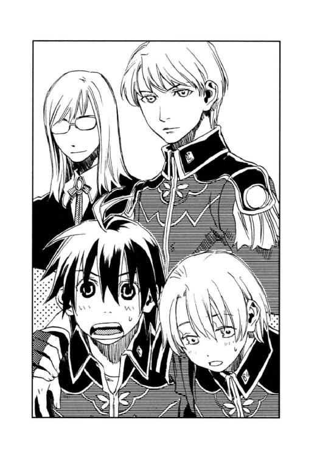
中将という言葉を聞いてフェルナンドはシャキッと姿勢を正した。ほとんど条件反射だろう。
「アーベルン中将は、非常勤講師に赴任されたのだよ」
キースとは対照的にベニートは温かい笑みを浮かべる。
カイルと同じくキースも自分たちの様子を見に来たのだろう。一兵士として扱うと言っても、皇太子フェルナンドの身を案じているのに違いない。動く人形騒ぎの最中、キースの登場は心強いと思う反面、
（子どもの頃、じいちゃんが授業参観に来た時と同じ気分だ）
ディオンは、何となく気が重かった。
生徒たちが整列を完了すると、ベニートはキースを紹介した。
「本来この時間はローラン先生による銃剣訓練だが、短期特別演習として、しばらくの間、こちらにいらっしゃるキース・アーベルン中将に、実戦に役立つ〈精〉を教えていただくことになった」
「アーガルド帝国陸軍第十三師団長キース・アーベルンだ。演習では、主に戦闘の際に使える攻撃及び防御の〈精〉を扱う。実際の作戦において、〈精〉技術を持つ兵士の担う役割は大きい。精励することを望む」
相変わらずの無表情で淡々と語るキースに、特待生クラスの生徒は、緊張と憧憬の入り交じった眼差しを注ぐ。
（それにしても──）
と、ディオンはキースとベニートを見て思う。
希に見る美貌の持ち主が二人並んだ姿は壮観だった。体育館の外で窓に張り付いている女性たちから、熱いため息が漏れるのも無理はない。
「どっちがかっこいいと思う？」「甲乙つけがたいわね」
と、囁く声も聞こえる。
演習では、銃弾を通さない合金の盾の〈精〉が行われたが、その間も体育館への参観者は引きも切らず、ディオンたちを含め生徒は無駄な緊張を強いられたのだった。
「君がムセイオンの招聘に応じてくれるとは思わなかったよ。いったいどういう風の吹き回しかね？」
学長バジリウスは、曲がった腰をソファーに埋め、かつての教え子に尋ねた。
「以前からのお誘いを断り続けていたことは、申し訳なく思っております。今回は、たまたま時間がとれましたし、特別に部下の編入学を認めてくださったお礼も兼ねて、講師を引き受けさせていただきました」
キースは答えた。
「儂はまた、ムセイオンの良からぬ噂でも耳にして軍が調査に乗り出したのかと思ったわい」
「良からぬ噂があるのですか？」
怜悧な瞳は表情を変えず、
「はて──」
首を傾げる老人も飄然としている。
「久しぶりにムセイオンを訪ねてみたら、賢者──学部長の顔ぶれが随分と変わっていて驚きました。理工学部の学部長は生物学のケトラー先生になったのですね。私が在学していた頃は、彼はまだ研究員でしたが」
「君がムセイオンに残っていれば、命の賢者はケトラーではなく君だったかもしれぬな」
「御冗談を──。そもそも私は同じ理工学部でも機械科専攻です」
生物の〈精〉なぞ、まっぴらだと超生き物恐怖症のキースは心の中で呟く。
「士官学部のベニート教授は、私の在学中にはいませんでしたね。私とさほど変わらない年齢のように見受けましたが、五賢者の筆頭とは恐れ入りました」
「二十八歳で中将にまでのし上がった者が何を言っておる。君は自分が飛び級して十七歳でムセイオンを卒業したのを忘れたのかね」
学長はフォッフォッと笑い、
「若くともベニートには相応の実力も、学部長としての力量もある。将来的には儂の後任にと考えておるよ」
ベニートは二十歳過ぎてから〈精師〉を志してムセイオンに入学し、瞬く間に高度な〈精〉技術を身に付け、たった三年で博士号を取った天才なのだという。キースは十七歳でムセイオンを卒業したため、ベニートとは在学が重なっていなかった。
「ベニートはケトラーの黒雷獣研究を高く評価しておってな、彼がケトラーを学部長に推薦したのじゃ。儂個人としては黒雷獣開発には反対なのじゃがの。あれは危険すぎるて。じゃが、命あるものを造ってみたいと思う気持ちは止められぬ。科学者が探究心を捨てたらお終いじゃ」
「ユーミールの〈炉〉を管理するのも、探究心ゆえのことでしょうか？」
静かな声音に秘められるキースの非難に、バジリウスの片眉がピクリと上がる。
「ムセイオンの所行を軍が快く思っておらんのはわかっておる。じゃが、儂らは軍にたてつこうと思っているわけではないぞ」
彼もまた声音に静かな怒りを込める。
「儂らが若い頃は、軍にとって〈精師〉はただの職人じゃった。徴兵され、戦うことしか能のない野蛮な連中に、弾を造れの傷病兵に薬を造れの、さんざんこき使われた挙げ句、多くの優秀な〈精師〉が戦場で命を落としてしもうた」
怒りの奥には深い無念が沁みていた。
「なぜ、儂がムセイオンに士官学部を作ったかわかるか。〈精師〉を、職人ではなく軍人として出征させればよいと考えたからじゃ。さすれば使い捨てられることもないだろうからな。〈精〉技術を特許制にしたのも、〈炉〉の製造を独占し、源石、玲石を専売するのもそのためじゃ。〈精師〉は重用されなくてはならぬ」
バジリウスの炯々とした眼光がキースを射た。
「優秀な〈精師〉を愚鈍な軍人から守るには、ムセイオンは軍と同等の立場でなければならんのじゃ」
放課後、フェルナンドはムセイオン商店街のパン屋を訪ねた。カイルは店の奥で小麦粉の計量をしていたが、入ってきた客がフェルナンドだと気づくと売り場に出てきた。
「珍しいな、一人か？」
カイルは店主に「ちょっと知り合いが来たんで」と声をかけ、フェルナンドを店の裏へ連れて行った。
「ディオンと喧嘩でもしたのか？」
「ううん、違う。ちょっと相談にのってほしくて......。今日、中将が非常勤講師として赴任した。それって、やっぱり僕が心配だから？」
「んー、まあ、そうだな」
フェルナンドは沈んだため息をついた。
「僕って、いつでもどこでもお荷物だよね」
「おいおい、いきなりどうしたんだ。そりゃ、いくら一般の志願兵扱いをするったって、お前が帝国の皇太子だっていう事実は曲げられねえ。お前を預かった以上、キースには責任てもんがあるさ」
「うん、中将には感謝してる。ただね......」
フェルナンドは、ディオンがベニートから助手になってほしいと誘われたことを話した。
「で、お荷物でいるのは申し訳ないから、潔く身を引こうってか？」
カイルは煙草に火を点けた。
「身を引く気なんてない。僕はディオンをつかまえておきたい。でも、それにはいつまでも重荷になってちゃだめなんだ」
フェルナンドの空色の瞳に、意外な雄々しさを発見してカイルは少しばかり驚いた。
「ディオンの役に立てるようになりたい。とりあえず今はディオンのパートナーとして任務に就けるように戦いの技術を身に付けたい」
フェルナンドが最前線に送られるなどあり得ないとカイルは思ったが、それは口に出さなかった。
「前に大佐は、ディオンはナイフを使うから、僕はリーチの長い武器を使うのがいいって言ってたよね。僕に槍か矛の稽古をつけてくれないかな」
「相談事ってのはそれか」
「うん、だめかな」
「俺はパン屋だぜ。軍人さんに稽古なんてつけられねーしよ。それに槍や矛がぶん回せるようになりゃいいってわけじゃねー。ディオンはとにかく突っ込むタイプだ。だからお前はやつが危ねえ時に守ってやればいい」
「ディオンを守る......？」
「そうだな──、防御系の〈精〉技術を学んだらどうだ？ キースが前に使うのを見たことあるだろ、敵の攻撃を無効にするやつ。せっかくムセイオンに来たんだ、ここでああいうのを何種類か身に付ければいい」
「防御系か。今まで守られてばっかりで、僕がディオンを守るなんて考えたことなかった」
確かにディオンは後先考えないで無茶苦茶やる。彼には守り手が必要かもしれない。
「ありがとう。仕事中に邪魔してご免なさい」
帰りかけたフェルナンドをカイルは呼び止めた。
「お前は、いい王様になるぜ。がんばれよ」
ディオンたちがムセイオンに編入して二週間が経った。狙う大砲や動く人形の話はちらほらと聞かれたが、特に大きな問題もなくディオンたちの学生生活は順調に過ぎていった。
ある朝、ホームルームが始まる前のこと──。
ドタドタとジャックが教室に飛び込んできた。
「この特待生クラスに、また編入生だよ。それが、すっごい美形の兄弟」
「美形がどうした。〈蒼い鷹〉からの編入生も美形じゃないか。大騒ぎすることもないだろう？」
クラスメイトたちは、「何を今更」と意に介さず、ディオンは「俺たちって美形？」と、フェルナンドと顔を見合わせる。
「驚くのは顔のことじゃない。兄ちゃんの方は十八、つまり三年だけど、なんと弟の方はまだ十四だって」
「「「え──っ！」」」
これには生徒たちが総立ちになる。ムセイオンの高等科は一般の高校と同じく、幼年学校卒業後に入学する。十四歳ではまだ義務教育を受けているはずなのだ。
「てことは、入試検定に合格したのか。すごい──」
帝国では、特に学力が優れている者は幼年学校卒業前に高校を受験できる制度がある。それが高校入試検定である。ムセイオンでもその制度を取り入れてはいるが、大変な難関で、これまでにムセイオンの入試検定に合格した者は数名しかいない。
「確か、一番最近、幼年学校卒業前にムセイオンに入学したのは、〈蒼い鷹〉のキース・アーベルン中将と、カイル・ブラナー大佐だったはず」
フランツの呟きに、
「うん。あの二人は十七歳で士官大学もムセイオンの専攻科も卒業して、軍に入隊したんだ」
フェルナンドが頷いた。
（中将が天才っていうのはわかるけど、大佐もそんなに優秀っていまだに信じらんない。頭を使うより体を使う方が得意そうだけどな）
と、ディオンは筋骨隆々ボサボサ頭でだらしなく軍服を着崩したカイルの姿を思い浮かべる。
「来た！」
窓から頭を出して廊下を窺っていたジャックの合図で、生徒たちはガタガタと席に着く。
教室の扉が開いた。ベニートの後に続く編入生を、生徒たちは固唾を吞んで見守る。
最初に入ってきたのは、兄とおぼしき少年──青年と言った方がいいのだろうか──だった。彼はベニートに届きそうなほど長身で、灰褐色の髪を肩の近くまで伸ばしていた。体つきも顔の輪郭も完全に大人のもので、伏し目がちな銀灰色の瞳も年齢以上の落ち着きを見せていた。
月影のような趣の兄に比べ、次に入ってきた弟は、日の光のような艶やかさだった。
燃えるような赤い巻き毛に碧玉の瞳、丸みを帯びた白い頰には微かな朱が滲み、薄い唇は紅を引いたように赤かった。背は兄の胸ぐらいまでしかなく、ほっそりとした手足も幼さを感じさせた。
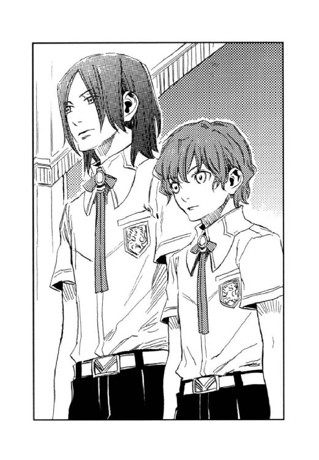
彼は小さな体を真っ直ぐに伸ばし、生徒たちを睥睨する。そしてディオンに目を留めると射るような視線を注いだ。
ほんの一瞬だが、その視線に憎悪を感じてディオンは（何なんだ？）と訝った。
「今日から君たちと一緒に勉強することになった、ハーラル・マーシア君とシーグフリード・マーシア君だ。シーグ君はまだ十四歳だが、優秀な成績で入試検定及び編入学試験に合格し、お兄さんのハーラル君と共に、この特待生クラスに編入した。仲良く、よく面倒をみてやってくれたまえ」
ベニートが二人を紹介した。
「ハーラルです。よろしく」
柔らかい低い声の兄とは対照的に、
「シーグフリードです」
弟は声変わり前の高い声で言い放つ。
全く似ていない兄弟である。共通点と言えば透けるように肌が白いということだろうか。
（ムスベル人なのかな？）
美形で肌が白くて瞳の色が薄いのは、ムスベル人の特徴である。しかし、帝国ではムスベル人の社会的地位は低く、キースのように名家の養子にでもならなければ、とてもムセイオンに入学することはできないはずだった。
「フランツ、また編入生を頼むぞ。席はディオンの横がシーグ、ハーラルは背が高いから一番後ろでいいだろう」
ベニートが空席を指さし、赤毛の弟はディオンの隣に座った。
ディオンが「よろしく」とシーグに笑みかけると、彼は「こちらこそ」と口元にだけ笑みを浮かべ、刺すように見つめ返した。やがてシーグの視線は黒い指なし手袋をはめたディオンの手に移る。手袋の下にあるものを見透かされたような気がして、ディオンは思わず手を机の下に隠した。
ホームルームが終わり、クラスメイトたちがドッと兄弟を取り囲む。
「君たちどこの出身？」
「十四で特待生クラスに合格するなんて、すごいなあ」
「君たちも〈蒼い鷹〉を目指しているのかい？」
矢継ぎ早に放たれる質問に、ハーラルは生来寡黙らしく、曖昧な返事が二言三言返ってきただけであった。一方シーグは、
「済まないが、今朝ムセイオンに着いたばかりで疲れているんだ。後にしてくれないかな」
十四とは思えない貫禄で答え、生徒たちは驚いた。
その夜、ディオンの部屋で一緒に宿題をしていたフェルナンドは、
「ハーラルとシーグ、あの兄弟をどう思う？」
と尋ねてきた。
「どう思うって......、シーグはすごいと思ったよ。さすがに十四で検定試験に合格しただけのことはあるなーと」
ディオンは一日を振り返る。
一限の講義で、ディオンが〈精〉におけるタンパク質合成の限界について意見発表した時、シーグは「異議あり」と挙手した。彼はディオンの意見に詳しい補足説明をした後、他の可能性について専門的な理論を展開し、教授を驚かせたのである。
二限の演習で、ディオンはキセノンガスの〈精〉がなかなかできなかった。このガスを〈炉〉に閉じこめて放電させ、稲妻を紅の玲石に通すと、ユアンが弓で放つ紅い光の矢ができるので、ディオンもなんとか習得したいと思ったのだが、不純物が混じってしまうらしく何度試しても紅い光が生まれない。ところがシーグはそれを難なくこなした。そして、「〈炉〉の温度が高すぎるんだよ。キセノンは沸点が低いから、もっと低温でやってみてごらん」とアドバイスまでしてくれたのだ。
「ただ、ちょっと取っつきにくいかな」
兄弟は、ほとんどクラスメイトと口をきかず、昼休みにはフランツが食事に誘ったのだが、二人は「荷物の整理があるから」と学生寮に行ってしまったのだ。
「そういうことじゃなくってさ。彼、ディオンにだけ変に興味持ってない？」
「うん、何だかいつも見られてるような気はする。俺を見てるっていうよりは、こっち」
ディオンは黒い指なし手袋をはめた手をフェルナンドの前に出した。
「上級〈精師〉なら手袋形の〈炉〉はたいてい持ってるし、シーグも白いやつ持ってるのに、何で俺の手ばっかり見てるんだろうとは思った」
「まさか、シーグは君の手の秘密──」
「俺、人が見てる時は手袋外してないぜ。これが埋められてからずっと。第一あいつとは今日が初対面だし、知ってるはずないんだけど」
ディオンはフェルナンドと眼を見交わす。
「もしもそうなら......いつ、どこで感づかれた？」
その日の午後は基礎訓練だった。ジョギングに筋トレ、背囊を背負って丸太で組まれた障害物を乗り越えたりくぐったりと、士官学部ならではのトレーニングである。
山を駆け回って獲物を追っていたディオンは、「ありゃ、猿だな」とジャックに言われるぐらいの身体能力を発揮し、サーキットではクラスメイトを二周も三周も追い抜いた。
シーグは体調が悪いとかで、運動場の端のベンチに腰掛けている。
あっという間にメニューを終えたディオンは、一足先に水道場に行った。誰もいないことを確かめると、指なし手袋を取ってザブザブと顔を洗う。
水道場の上にかけたはずのタオルを手探りしていると、いきなり誰かに手をつかまれた。
ギョッとして顔を上げると、真正面にシーグの顔があった。碧の瞳が輝き、口元に不敵な笑みを刻んでいる。
「何だよ、いきなり」
ディオンは手をふりほどき、手の中にあるものを見られまいと拳を握った。しかし、
「やっと、見つけた」
ささやくようにシーグは言った。
「な......」
なぜ、それを知っているのか？ と尋ねようとして、ディオンは口をつぐんだ。
ディオンの両手には、水星、金星、火星、木星、土星、そして月と陽の玲石が埋まっている。それは滅びたムスベルが黒雷獣の〈精〉に使用したと言われる伝説の玲石で、ディオンの〈精〉技術を見込んだムスベルの秘密組織が、黒雷獣ユーミールの心臓を〈精〉させるためにディオンの手に移植してしまったのだ。
しかし、ディオンの手にユーミールを復活させる玲石が埋まっていること、及び彼にその技術があることは、アッシュの存在と同様〈蒼い鷹〉隊員だけが知る最重要機密だった。
「なぜ、僕がその玲石のことを知っているか、聞きたそうだね。それは本当は僕の手に埋められるはずの玲石だったからだよ」
シーグは、真っ白な自分の手の平を見せた。
「お前はいったい......」
「僕はね──」
そこへジョギングが終わったクラスメイトたちが賑やかに水道場にやってきた。
ディオンは急いで手袋を着ける。その様子を見て、フェルナンドがハッと青ざめた。フェルナンドには何があったか大凡の見当がついたのだ。
「シーグ、いつの間に。君は体調が悪くて見学してたんじゃなかったのか」
フランツたちはディオンの手の玲石に気づかなかったようだ。
ハーラルもやって来て、「ここで何を──」と何か心配げだった。
「ディオンと話がしたくてね」
シーグは赤い髪を指で搔き上げる。
「炭酸同化によって得られるエネルギーをいかに効率よく代謝させるか、〈精〉が可能な酵素の種類についてディオンの意見を求めていたところ」
「何の話だ？」
ジャックは首を傾げる。
「ディオンには生き物が〈精〉できるか聞きたかったんだ」
その場にいた生徒たちがざわめいた。
「何を言ってるんだ。いくらディオンが優秀だからって、生き物の〈精〉は無理だよ。ムセイオンの教授だってまだ成功してないのに」
「そうかな。僕は可能だと思うよ、ディオンほどの腕があれば」
シーグはうっすらと笑む。
「〈精〉技術は君もディオンといい勝負だろ。じゃ、君は生き物が〈精〉できるのか？」
フランツの問いに、
「できると思う。ただ必要な玲石がないから試せないけど」
と、シーグは碧の瞳をディオンの手に向けて眇めた。ディオンは黒い手袋をはめた手をぐっと握る。
（こいつ......何が言いたいんだ）
「僕とディオンと、どちらの技術が上かな──？」
シーグは探るようにディオンの瞳を覗き込んだ。
「生き物の〈精〉か、二人に試させたいね。どちらが歴史に名を残すか、立ち会ってみたい」
フランツは興味津々である。
「設備も玲石も足りないから、生き物の〈精〉は無理にしても──、そうだ。二人に〈五賢者の不思議〉を解かせるっていうのはどうだ？ ムセイオンの歴史に残るぜ」
ジャックがポンと手を打った。
「怪談話を解決することで〈精〉技術の高さが比べられるのか？」
「あれは教授が何か〈精〉して起こる現象だろ。教授が〈不思議〉を黙殺してるんだもの」
「面白ければ何でもいいんだよ。天才少年の対決！ 今ここに明かされる〈五賢者の不思議〉」
クラスメイトはすっかり乗り気である。
「どう？」
彼らは一斉にディオンとシーグに向き直った。
「いいよ。でも、せっかく勝負するんだから賞品付きにしたいんだ」
シーグは艶やかな笑みを浮かべて、ディオンの手を指差した。
「──僕が勝ったらそれをもらえる？」
ディオンは息を吞んだ。
（......何なんだよ。手に埋まった玲石を渡せってのか!?）
「断ったりしないよね。それを欲しがってるの、僕ばっかりじゃないもの」
（断れば、〈光〉の玲石のことをムセイオンの教授たちに知らせると──）
ディオンは瞠目したまま、シーグの勝ち誇ったような笑みを見つめる。
「ちょっと待って。その手袋はディオンのお父さんの物なんだ。すぐに返事できないから、少し時間をくれない？」
フェルナンドが割って入った。
「いいよ。きっとディオンは勝負を受けてくれると思うけど──待ってるね」
シーグはニッと笑むと水道場を出て行った。ハーラルが何か言いたげにディオンを見つめたが、結局何も言わずに弟の後を追った。
「ディオン、父さんに許可もらって、勝負を受けろよ。俺たち楽しみにしてるんだからな」
クラスメイトは勝手に応援する。
「あれ、ディオンが勝ったら賞品は何なんだ」
「そもそも何で、シーグはディオンのそんな小汚い手袋を欲しがるのかねー」
フランツたちはボソボソ言ったが、ディオンの耳には入らなかった。
（......大変なことになった......）
「手の玲石を見られた──？」
革張りのアームチェアーに身を沈め、足を組んだキースは、薄氷の瞳でディオンを見つめる。
「すすすすみません」
ディオンとフェルナンドは立ったまま深々と最敬礼した。
教官の宿舎、キースの書斎である。
学生寮の何倍も広く豪華な部屋で、黒檀の書棚には一分の隙間もなく本が収まり、分厚い絨毯にはチリ一つ落ちていなかった。主の性格を反映したその書斎で、ディオンは昼間の出来事を語った。
「で、相手は？」
事の顚末を聞いてもキースの表情は変わらない。
「シーグフリード・マーシアという、先日士官学部に編入してきた十四歳の子です」
「本当は自分の手に埋められるはずの玲石だって言ってた」
「──マーシア......か」
キースには心当たりがあるようだった。
「〈五賢者の不思議〉を解く競争はどうしよう」
「今は勝負を受けるしかあるまい。シーグに関してはこちらで調べ、何らかの手を打つ。それまでの時間を稼げ」
「はい......」
ディオンは肩を落とす。
（俺が手袋をうっかり外したから......シーグが俺の手に興味を持ってるの、わかってたのに）
「ディオン」
キースの声にディオンは顔を上げた。
「その玲石は軍の最高機密だが、いくら上質と言えどたかが玲石だ。だが、それを内外に知られて玲石を摘出せざるを得ない事態に陥ることだけは避けねばならない」
手に埋められた玲石を取り出せば、神経に傷がついて指が動かなくなる。
（もしかして、中将は俺の指を心配してくれてる......？）
胸の重苦しさがスーッと引いた。キースは自分の失態を責めているのではないのだ。
「くだらない怪談話だとたかをくくらず、絶対に勝負に勝て。いいな」
「了解！」
ディオンは元気よく敬礼した。
放課後の士官学部校舎を、ディオンとフェルナンドは忍び歩きしていた。〈五賢者の不思議〉解明競争第一弾として、二人は兵器資料室に向かっているのである。
「シーグって何者なんだろうね。最初からディオンの手の玲石のこと知ってたみたいだし」
「ムスベル関係なんだとは思うけど。帝国じゃムセイオン以外であれだけの〈精〉技術は身につかないもんな」
「シーグは約束を守ってくれるのかな。負けたシーグが逆上して玲石のことを言いふらしたらどうしようって、僕はそれが心配」
「それって俺が勝つこと前提？」
ディオンは苦笑する。
「正直、シーグに玲石を見られた時はどうしようかと思ったけどさ。だいぶ気が楽になった。中将がついていてくれるし、今はとにかく勝負に勝つことを考えればいい」
「うん、がんばろうね」
「あ、誰か来る、庁務員さんかな」
ディオンとフェルナンドは階段脇に身を潜めて息を殺す。
情報漏洩防止のため、授業時間を過ぎてからの校舎の立ち入りは禁止されている。バレれば週末は農学部の畑の草むしりだ。
しかし、特待生クラスの級友たちが、「今世紀最大のイベント！」と〈五賢者の秘密〉解明競争に全面的に協力を申し出、庁務員の見回りの時間とコースを調べておいてくれた。今日、兵器資料室に忍び込むことになったのも、管理者であるベニートがオペラ鑑賞に街へ出ていることをジャックが調べ上げ、しかも合い鍵まで手に入れてくれたからである。
シーグとハーラルは、やはりジャックの調査により、薬の賢者クレーツェ教授が留守だとわかったので、彼の研究室に踊る骸骨を調べに行っている。
庁務員が通り過ぎ、ディオンたちは再びこそこそと廊下を進む。
夕暮れが迫り、資料室には弩と呼ばれる台座付きの弓やガトリングガンが、黒々とした影を床に落としていた。壁には古式ゆかしい盾や槍、マッチロック式銃などが、最新式のダブルライフルと一緒に壁に掛けられている。
「うわ、この鎧、ちょっと怖い」
フェルナンドがディオンの軍服の裾をつかむ。
「動きゃしないよ、動くのは大砲のはずだろ。お前、本当に怪談なんか信じてるのか？」
「信じてないけど、怖いものは怖いよ。王宮にも不思議な話はいっぱい伝わってるもん。遥か昔、政略結婚で嫁いできた王妃が非業の死を遂げて、幽霊になっていまだに宮殿を徘徊してるとか。それに、あの動き回る人形、ディオンだって見たでしょ。ディオンは怖くないの？」
「絶対、何か仕掛けがあるはずさ、それを解くのが勝負なんだから。怖いと思っちまったら謎は解けない」
ディオンは壁際に置かれたカノン砲に目を留め、「あれだな」と近寄った。
それまで静謐に包まれていた部屋に、ギギッと、金属の軋む音が響いた。
他所を向いていた砲身がゆっくりとディオンたちに向く。
「ひー」
フェルナンドが情けない声を上げてディオンにしがみついた。
「撃たれやしないって。弾は入ってないんだから」
「で、でもでもっ」
ディオンが試しに二、三歩横に歩くと、砲身もそれに合わせて角度を変える。
「ふーん」
ディオンはカノン砲に近づいた。
「ディオン～」
大砲に近寄るのは怖いが、ディオンと離れるのはもっと怖いので、フェルナンドはディオンにしがみついたままである。
「これのスイッチが入りっぱなしなんだ」
ディオンは砲身上部に取り付けられた直径五センチほどの円筒をコツコツとたたく。円筒内部は赤い光が瞬いていた。
「何これ」
「自動照準装置──だと思う。この光が動くものを感知して自動的に砲身がそっちに向くようになってるんだ。けど、砲身の動きが鈍すぎて実用化されなかったんだろうな。で、エネルギーは太陽光。ここ、西日が当たるから夕方になると自然に大砲が動き出しちまうんだろう」
ディオンは照準装置上部のパネルを指さした。
「なんだ、それだけ？ つまんない～」
「怪談なんて、そんなもんなんだよ」
ディオンは笑った。
翌朝、ディオンは「狙う大砲の秘密を解いたぜ」と級友に報告し、拍手喝采を浴びた。
「シーグは？ 踊る骸骨の秘密は解けたかい？」
「おおよその仕組みは見当がついたよ。ただ、残念ながら僕にはヴァイオリンが弾けないので検証できなかった」
「じゃ、この勝負ディオンの勝ちだな」
ジャックが言うと、
「ディオンの説が本当に正しいか、確かめてから勝敗を決めてくれないか」
シーグはムッとした様子で答えた。
そこへベニートがホームルームにやって来た。
「ちょうどいいところへ、教授」
フランツが、狙う大砲の仕掛けについてベニートに尋ねた。
「そうだよ。あの自動照準装置は士官学部ができるずっと前、当時の工学部の学部長の試作品なんだ。スイッチが壊れているらしいが、君たちが〈五賢者の不思議〉と言って語り継いでいるので、夢を壊すのも何かと思ってそのままにしておいたんだ。よく謎を解いたね」
ベニートの回答に、クラスメイトは大いに沸いた。
「誰が謎を解いたのだね」
「ディオンです!!」
生徒たちは誇らしげにディオンを指差した。
「そうか。だが、私の許可なくして資料室に入ったのは校則違反だ。規則に則って今週末は農学部の畑の草むしりだよ」
ベニートは気の毒そうに笑った。
「僕、本当は骸骨なんか踊らせたくない～」
フェルナンドはディオンの後に続いて暗い階段を上る。その後ろにはシーグとハーラルもいた。四人は〈五賢者の不思議〉を解く競争第二弾として、踊る骸骨の〈不思議〉を持つ医学部のクレーツェ教授の研究室に向かっているのである。
狙う大砲の〈不思議〉をディオンが解いた日、シーグは骸骨の秘密を解くためにここへ来たのだが、シーグにはヴァイオリンが弾けず、骸骨は踊らなかった。そこで、ヴァイオリンが弾けるフェルナンドに検証させようということになり、四人は一緒に医学部を訪れたのである。
しんと静まりかえった校舎は、うっすらと消毒薬の匂いが漂い、それは何となく夜の病院を思い起こさせた。
「ひゃあ」
フェルナンドが突然声を上げたので、ディオンもシーグ、ハーラルもビクッとしてフェルナンドに注目する。
「あ、あれ、あれ」
フェルナンドが指差す窓ガラスに、四つの人影があった。ディオンも最初はびっくりしたが、
「あれは、俺たちが窓ガラスに映ってるの。脅かすな」
と、ホッと息をつく。
自分たちの足音にもビクビクしながら、何とかクレーツェ教授の研究室にたどり着き、ジャックが用意してくれた合い鍵でドアを開ける。
まもなく満月を迎える月明かりが窓から差し込み、研究室はカンテラを点さなくても済む程度には明るかった。
「例の骨格標本はこの中だ」
シーグが窓際に置かれた大きな黒い箱を指差した。
「棺桶みたい......」
フェルナンドはディオンの軍服の裾をつかむ。
「みたいじゃなくて、棺桶なんだろ。等身大の骨格標本をしまっておくにはちょうどいいし」
「開けるよ」
シーグが棺桶の蓋を開けた。
黒い布が敷き詰められた棺桶に、骸骨は横たわっていた。白い骨が月明かりに浮き上がって見える。
「ひ～」
フェルナンドは情けない声を上げた。
「ヴァイオリンはここです」
ハーラルが棺桶の隣に置かれていたケースからヴァイオリンを取り出した。
「僕が思うには、ヴァイオリンに内蔵された玲石が音波を発生し、骨を共振させるのだと思う。僕が弾いた時は、いい音が出せなかったせいか、骸骨は動かなかったが──。フェルナンド、弾いてみてくれないか」
フェルナンドは渋々ヴァイオリンを受け取り、調弦する。
「......曲目は？」
フェルナンドはすでに涙目である。
「何だっていいんじゃないか？ 骸骨に曲の好みがあるとは思えない」
「じゃ、弾くよ」
静寂に包まれていた研究室に、ヴァイオリンの音が厳かに響き渡った。
（驚き。フェルナンドにこんな特技があったとは知らなかった。さすが皇太子殿下）
音楽などというものに縁のないディオンにもわかるぐらい、フェルナンドの奏でる音色は美しかった。
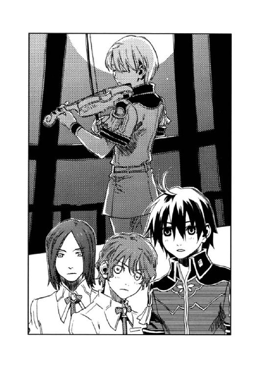
しかし、骸骨はピクリとも動かない。
「そんなはずは──」
シーグは棺桶の縁に手をかけ、骨格標本を覗き込む。
「フェルナンド、そのヴァイオリン見せて。クレーツェ教授が生き物の〈精〉を研究していてこの骸骨を造ったんなら、仕組みは多分──」
ディオンはヴァイオリンの共鳴胴の中を覗き、仕込まれた玲石を確かめる。
「そうか、この玲石と対になるのは──」
ディオンは骨格標本の手足を調べ、小さな窪みがあることを確認する。そしてポケットからいくつか玲石を出し、その窪みにはめ込んだ。
「フェルナンド、もう一度弾いてみて」
フェルナンドが弦に弓を滑らせると、すーっと骸骨が起き上がった。
「ひ──」
フェルナンドは半べそでヴァイオリンを弾く。音の高低に合わせて骸骨の手足が動いた。
月が照らす窓辺で、まるで操り人形のように骸骨は音楽に合わせてぎくしゃくと踊った。
「直接骨が共振して動くんじゃない。骨にはめ込んだ玲石が音波を感知して骨を動かしているんだ。音波に反応する玲石はこれしか持ってないから、いい動きじゃないけど」
ディオンはシーグに向かって笑んだ。
「──これくらいで、僕に勝ったと思うな」
シーグは唇を嚙んだ。
医学部から出てくる四人の少年を、建物の間の暗がりから見守る二つの人影があった。
壁に寄りかかり、煙草を吹かしながら、
「なかなかやるじゃん。こりゃ俺たちが動くより、やつらにやらしておいた方がいいんじゃねーの。俺たちはチョロチョロ学内を嗅ぎ回るわけにいかねーしよ」
カイルはニヤニヤと上機嫌である。
「そうだな。彼らの行動を見張っている方が早いかもしれない」
キースは学生寮へと走るディオンたちの背中を、薄氷の瞳で見送った。
「おおっ！ やったか」
翌朝のホームルームで、ディオンの勝利を知ったクラスメイトたちは大喜びした。
しかし、医学部のクレーツェ教授から連絡が入り、
「昨夜、医学部のクレーツェ教授の研究室に忍び込んだ者がいるそうだな。罰としてホルムアルデヒド水溶液を二千瓶〈精〉しろとのことだ」
ベニートに言い渡され、一同はがっくりと肩を落としたのだった。
その日の放課後、薬品貯蔵庫で特待生クラスの生徒は全員でホルムアルデヒド造りにいそしんだ。シーグもふくれっ面で一緒に作業している。
貯蔵庫の隅で、ベニートとクレーツェはその様子を並んで見ていた。
「いや、助かります。この量のホルムアルデヒドを造るのは骨の折れる仕事でしてな。さすがは特待生、作業が正確で速い」
「いえいえ、御迷惑をおかけしました」
「聞けば、校則違反者は四人とのことでしたが、クラスが一丸となって連帯責任を負うとは、ベニート教授、よい生徒をお持ちですなあ」
「痛み入ります」
二人の教授は御機嫌だったが、
「何か、喉がひりひりする」
「具合悪くなってきた」
生徒たちは涙目になっていた。それでも、
「こんなことでくじけてなるか！ あさっては満月だ。ディオンがんばれよ。罰は一緒に受けてやる」
すでにお仕置き覚悟で、生徒たちは闘志を燃やしていた。
フェルナンドは白い手袋を両手にはめ、テキストを見ながら玲石を手袋に貼った。
「えーと、素粒子の圧力を均等にすることが肝要と──」
彼はテーブルに立てかけてあった杖を手に取り、「こうかな？」と軽く振る。
杖の先からキラキラと透明な光の粒が舞い、部屋の四方に散って行った。
「んー、ちょっと弱かったかな」
学生寮の自室である。
今日は兵具の授業があった。古代の物から最新の物まで様々な武器の特性や使用法を習い、フェルナンドは一つ一つ試してみた。
「そんなに重くないし、素早く障壁が〈精〉できるし、殺傷力は弱いけど、まあ〈蒼い鷹〉は人を殺さないし」
と、杖を選んだのである。形は杖だが、先と持ち手の部分に玲石をはめ込む穴があり、手袋の玲石と向かい合わせることで、強固な障壁が〈精〉できる〈炉〉である。
兵具の教官に許可をもらい、自室に持ち返って〈精〉の練習をしているところだった。
「さすがムセイオンだよね、いろんな武器がよりどりみどり。これで少しは僕もディオンの役に立てるようになるかな」
フェルナンドは呟き、その日は遅くまで練習に励んだのだった。
見事な満月の夜、農学部の校舎裏に特待生クラス全員が集合していた。
狙う大砲と踊る骸骨の件では、大勢で動くと見つかるおそれがあったので、クラスメイトは参加しなかったが、今回は屋外なので、〈不思議〉の解明に立ち会いたいとみんながやってきたのである。
そうは言っても見つかって寮に連れ戻されては何にもならないので、生徒たちはじっと息を殺して木の陰や藪の中に身を潜めていた。
問題の井戸は、ツェリング教授の研究室の、窓のすぐ下にあった。
明るい月に照らされ、白い校舎を背景に、井戸を囲う瓦が黒々と浮かび上がっている。
「そろそろかな」
フランツが空を見上げた。満月はやや西に傾きかけていた。
しばらくすると、井戸の中からゴボゴボと不気味な音が聞こえてきた。
「ひ......」
生徒たちは息を吞む。
その音は次第に大きくなり、やがてヌルリとした長いものが井戸の中から這い出てきた。
「ぎゃ～」
押し殺した悲鳴があちこちで漏れる。
それは長い髪の毛のように見えた。それが大量に井戸の中からズルズルと溢れ出て来るのである。
ディオンが井戸に向かって歩き出すと、シーグがディオンを追い越して井戸に近づいた。
彼は井戸から伸びる髪のようなものを一房手に取る。
「おお、触ったぞ。シーグ、勇気あるー」
生徒たちはどよめいた。
「ただの藻だ」
それを聞いて、
「藻──!?」
生徒たちは藪から出て来て、おそるおそる黒くてヌルヌルのそれに触る。
「本当だ、沼とか川なんかに生えてるやつに似てる」
生徒たちは声を揃えて「なーんだ」と肩をすくめた。
井戸から出て来た大量の藻が、長い髪に見えたので、いつの間にか女の人が出て来るという話になったのだろう。
「この勝負、シーグの勝ちだな」
フランツが審判を下したが、
「けど、何で満月の夜なんだ？」
ふと、誰かが問う。
「それは......」
シーグは返答に窮した。
「潮の満ち干と同じだよ」
代わりに答えたのは井戸の中を覗き込んでいたディオンだった。
「ほら、縁一杯に水が上がってきている」
生徒たちが井戸を覗くと、確かに溢れんばかりに水が上がっていて、そこにゆらゆらと藻が漂っていた。
「農学部では瘦せた土地でも育つ作物の研究をしてるだろ。多分この藻も食用に開発された品種で、すごく成長が早いんじゃないかな。で、種だか胞子だかがこの井戸に落っこちて、井戸の中で繁殖を続けてるんだと思う。この井戸は湖とつながっていて、この湖は海に近いから、満ち潮の時には海水が逆流して湖の水位が上がって、一緒に水が上がってくるんだ。きっと新月でも同じことが起こってるはずだよ」
「けど、新月に井戸からこのヌルヌルが出てくるって話は、聞いたことないぜ」
「新月の時の満ち潮って、真っ昼間だろ。この藻は光に弱いんじゃないかな」
ディオンは手袋に玲石を貼り、藻を手の平に載せて光を〈精〉した。すると藻は縮んで緑色の粉になってしまった。
「あ、これ、いま流行の藻汁の素じゃない？ 水に溶かして飲むの。不味いけどすごく体にいいって評判だよ。確か、ここの農学部が開発した商品だったと思うけど」
フェルナンドが言った。
満月の夜、井戸から出てくる長い髪の女の正体は、健康ドリンク藻汁の素なのだった。
地の賢者の〈不思議〉が、藻だと看破したのはシーグだが、謎を解き明かしたのはディオンだったので、この勝負もディオンの勝ちとなった。
シーグは怒りに唇をふるわせ、その場から駆け去った。その後をハーラルが追う。
「これってただの謎解きで、〈精師〉としてどっちが優秀かなんて、関係ないじゃん」
ディオンはシーグとハーラルの後ろ姿を見ながら、当初の目的は何だったのかと考える。
「普通に、定期テストでいい点取った方が優秀だと思うけど......」
フェルナンドも同意したが、
「夢のないこと言うなよ。面白いからこれでいいんだよ」
「そうそう」
生徒たちは頷いた。
「さ、これで残るは、時計塔の化け物と動く人形だ。いいなみんな、がんばるぞ！」
「おーっ！」
裏庭に元気なエールが響き渡り、特待生クラス全員の校則違反はすっかりばれた。そして、次の週末にはみんなで仲良く農学部の畑で肥料撒きの罰を受け、ツェリング博士を喜ばせたのだった。
「あつーい、くさーい、あつーい、くさーい」
「もう、夏も終わりだってのに、この暑さは何なんだ」
残暑厳しい午後の一時、悪臭漂うゴミ置き場で、特待生クラスの生徒たちは、ゴミを木炭に〈精〉していた。
「ごめん、俺たちがヘマやったばっかりに」
ディオンはマスク代わりにタオルを顔に巻き、くぐもった声で級友たちに詫びる。
「気にするな。懲罰房にぶち込まれなかっただけでも儲けもんだ」
「ああ、何でこんなことになっちゃったんだろ」
フェルナンドは、昨夜のことを思い出し、悄然とため息をついた。
昨夜、ディオンとフェルナンドは動く人形の秘密を探ろうと、附属研究所に忍び込み、人形が保管されているという研究室に行った。他の生徒たちは明日締め切りのレポートが間に合わず、また大人数でうろうろして見回りの庁務員に見つかってもやっかいなので同行しなかった。
「何か記憶が蘇ってきた」
ディオンは開かずの研究室の前に立ち、扉を見上げる。ドアの上には、モーリス・タウンゼントのプレートが取り付けられていた。
「父さんと、アッシュと、毎日この研究室に通ったんだ。俺は研究室の玲石で遊んで、触っちゃだめだってよく叱られた」
「ディオンのお父さんて、厳しい人？」
「いや、全然。大きい声を出すなんてほとんどなかった。どっちかっていうと優男って感じ。戦争が嫌いで、〈精〉が戦いに使われるのを嫌がってた。〈精〉以外は能がなくて、今考えれば、俺を育てるのは大変だったろうなと思うよ」
ディオンはドアノブに手を掛けて、念のため回してみた。開かずの研究室なので当たり前だが、ドアは開かなかった。合い鍵もなかったので、鍵を溶かすことにする。
「このドアノブ、俺の頭ぐらいの高さにあったのにな」
ディオンは手袋に玲石を貼り付け、鍵穴にかざした。玲石から青白い稲妻が走り、鍵穴に吸い込まれる。
やがて、カチリと小さな音がして蝶番を軋ませながらドアが開いた。
部屋の中は蜘蛛の巣が垂れ下がり、試験管、フラスコから書籍、絵画に至るまでありとあらゆるものが雑然と置かれていた。モーリスが去った後、暫く物置として使用されていたのだろう。
「あそこに人形が並んでいるよ」
フェルナンドが窓際の棚を指差す。そこには十体ほどのビスクドールがちょこんと腰掛けていた。窓から差し込む月明かりが、人形の白い陶製の頰とガラスの瞳を輝かせている。
恐る恐る人形に近づいた。フェルナンドはディオンの軍服の裾をつかんでいる。
「人形って、不気味だよね。動物のぬいぐるみは怖くないけど、人形は何か怖い」
「思い出した。これ、父さんの宿舎にあったよ。死んだ母さんが人形を集めてたんだ。父さんが行方不明になって、宿舎の荷物をここへ移動したんだな。けど、動くのなんてなかったぜ」
ディオンは人形の顔を覗き込む。
「金の巻き毛で、白いエプロンドレスを着てたよ」
フェルナンドが「これじゃないかな」と指差した時、
「そこにいるのは誰だ!!」
カンテラの明かりがディオンたちに向けられた。
「やべ、見つかった」
カンテラを提げて室内に入ってきたのは、理工学部命の賢者、ケトラー教授だった。庁務員の見回り時刻は避けたが、教授や研究員が夜中にやってくるのは計算外だった。
「その軍服。士官学部の特待生クラスの編入生だな？ ここで何をしている」
「申し訳ありません。動く人形の〈不思議〉を調べようと......」
ディオンは正直に答えた。
「軍の調査か!?」
ケトラーの目が異様に光る。
ムセイオンは情報が他に漏れることを極端に警戒している。軍の極秘調査だと思われては大問題に発展しかねない。軍服を着た自分たちが夜中に歩き回るということが、こんな誤解を招くとは想像もしていなかった二人はうろたえた。
「いいえ、友だちと〈五賢者の不思議〉を解く競争をしていて、決して任務ではありません」
ケトラーは「確かめねばなるまい」と、二人を自分の研究室に連れて行き、そこにベニートを呼んだ。
「私の生徒が御迷惑をかけました」
ベニートはディオンとシーグの競争について説明し、
「今回の一件は他の生徒にも事情を訊きましたが、個人的な勝負で軍とは無関係です。知っていて止めなかったのは私の責任。どうか私に免じて、軍への連絡は差し控えていただけないでしょうか。規定通りの罰則は与えますから」
と、ケトラーを説得する。
「教授がそう仰るなら──」
ケトラーは二人を解放してくれた。年下でも五賢者筆頭のベニートに言われては、ケトラーも承服せざるを得ないのだろう。
寮へ戻る道すがら、
「まさか、開かずの研究室の鍵を開けるとは思わなかったよ」
ベニートは苦笑する。
「それで、動く人形の〈不思議〉は解けたのかね」
「いいえ。その前にケトラー教授に見つかってしまって」
「そうか、残念だったね──じゃない。もうこれに懲りて〈不思議〉を解くのは止めなさい。何なら、シーグには私から話をしておくよ」
「はあ......」
ここまできて、あと二つの〈不思議〉が解けないのは、舐めかけのキャンディーを途中で吞み込んでしまった時のようなもったいなさを感じる。
「それから、校則違反の罰は受けてもらうよ。明日はゴミ集積場の燃えるゴミをすべて燃料用の木炭に〈精〉しなさい。他の生徒も承知しているので、総出でやれば半日で終わるだろう」
ベニートはニッコリと笑い、今に至るのである。
「何だ、お前らその臭いは──」
カイルは片手で鼻をつまみ、もう片方の手を顔の前で振った。
「ごめん、くさい？ さっきまでゴミ置き場で木炭の〈精〉してたんだ。校則違反の罰なの」
フェルナンドは自分の服の臭いをくんくんと嗅いだ。
「頼む、側へ寄るな。パンに臭いが移ったらどうしてくれる」
しかし、時すでに遅く、パンを買いに来た客は販売車の周囲に漂う悪臭と、その中心にいる煤けた少年二人に怖じけて、後退っていた。
「──ったく、しょうがねーな。で、何なんだよ」
「昨日の夜、開かずの研究所に忍び込んで、理工学部のケトラー教授に見つかったんだ」
「ふん、あのお堅い命の賢者か」
「軍の情報収集だと思われて、すごい剣幕で問い詰められた。どうしよう」
「僕たち、一応現役の〈蒼い鷹〉でしょ。このまま〈五賢者の不思議〉を調べてたら、中将ばかりか元帥にまで話が行って、大騒ぎになるかもしれない」
「軍服着て潜入捜査するわけねーだろ。ムセイオンの教授ってのは、ほんと世間を知らねーよな」
カイルは笑う。
「心配するな。変ないちゃもん付けられたら、キースが出ばるさ。売られた喧嘩を途中でほっぽるわけにはいかねーだろ。第一、お前の手の玲石をバラされたらえらいことになるぞ。で、時計塔にはいつ登るんだ？」
「予定では、今夜のつもり」
「そうかい、楽しみだな」
何が楽しみなんだろうと、その時ディオンとフェルナンドは思ったが──。
その夜、理工学部の校舎に向かったディオンとフェルナンドは、玄関前で煙草を吹かす長身の人影を見て驚いた。一人は〈蒼い鷹〉の軍服、もう一人はパン屋の白いお仕着せを着ている。
「中将！ 大佐！」
「何でここに......」
ムセイオンと軍との関係を悪化させるような真似をするなと、止めに来たのかと思ったが、
「俺たちも時計塔の化け物の〈不思議〉を解きたくてよ」
カイルは言った。
「俺らも学生の時、〈五賢者の不思議〉を解いて回ったのさ。けど、この時計塔の化け物の〈不思議〉を解く前に卒業しちまってよ」
「化け物の正体を見極められなかったのが心残りなのだ。今夜は同行させてもらおう」
相変わらずの無表情で言うキースに、ディオンもフェルナンドも開いた口が塞がらない。
そもそも化け物の〈不思議〉が解けなくて心残りという点で、キースらしくないのだが──。
「ちゅ、中将、そうは言ってもお立場というものが......見つかったら、それこそムセイオンから弾劾されて、軍法会議ものでは......」
「この私がムセイオンの庁務員ごときに見つかるとでも──？」
薄氷の瞳がじろりとディオンたちを睨め付ける。
「心配ねーよ。俺はパン屋だからしらを切り通しゃいいし。キースは悪戯者のお前たちを追って来たってことにしときゃ、大事にはならねー」
言いたいのは見つかるとか見つからないとかではなく、帝国陸軍中将ともあろうお方が、学校の怪談話に首を突っ込むのかということだが、ディオンもフェルナンドもそれを口にする勇気はなかった。
立ち入り禁止の札を無視し、一行は時計塔入り口の扉をくぐる。
「聞けば、お前たちはこれまでに三つの〈不思議〉を解いたが、三回ともバレて罰を受けたそうだな」
塔の内側は頂上まで吹き抜けになっていて、壁面に沿って狭い螺旋階段が設けられていた。カンテラをかざし、キースを先頭に一列になってそれを登る。
「〈蒼い鷹〉ともあろう者が何たる失態だ。痕跡を残すから見つかるのだ。調査の後は原状回復。極秘捜査の基本だぞ。まして、人形の一件のように〈不思議〉を解く前に見つかったのでは話にならん」
「......申し訳ありません」
何だか叱られる論点が違うような気がすると、ディオンは思った。
ふと、キースの足が止まる。
「先客がいるようだ」
キースはカンテラの明かりを消し、真の闇となった塔を、気配を殺して手探りで登る。
やがて、塔の頂上からひそひそと押し殺した声音が聞こえてきた。
「シーグとハーラルだ」
「あの様子じゃ、障壁が解けずに往生してんだな」
カイルがふふんと笑った。
「障壁？」
「まあ、見りゃわかる」
塔の最上階は広いホールになっていた。天井近くには明かり取りの窓がいくつか開けられ、薄い月明かりが差し込んでいる。
正面に巨大な両開きの扉があり、方向からすると扉の内部が時計の機械室になっているらしい。
扉には色とりどりの光条が縦横無尽に奔り、美しい扉の文様を浮き上がらせている。
その扉の前に、カンテラを提げたシーグとハーラルがいた。彼らはディオンたちの到来に気づき、振り返る。
「アーベルン中将と、パン屋さん......？」
「おっす。俺らここの卒業生でさ、時計塔の化け物の〈不思議〉を解きたくてお邪魔したのさ」
カイルは気さくに片手を挙げ、
「その扉、下手に近づくと危ねーぞ」
と彼らに歩み寄る。
ディオンとフェルナンドも扉に近寄った。見ると扉の周囲にはいくつもの様々な玲石が配置され、そこから光が伸びて扉を包んでいるのである。
「〈炉〉の原理を応用して障壁を形成しているのだ。それぞれの玲石から様々な種類の電磁波や電流、音波などが射出されている。むやみに踏み込めば〈精〉されて細胞が分解してしまう。この障壁を解除するには、玲石の反応を吸収する物質を何種類も大量に〈精〉しなければならない。それだけでも大仕事だが──」
キースはポケットから煙草の空き箱を取り出し、光条の一つを遮った。空き箱は一瞬で黒い霧となって散り、同時に扉の中から『グルル......』という不気味な唸り声が聞こえてきた。
「どうやら、機械室には番人がいるらしい」
「やってみるかい？ 〈精師〉がこれだけいりゃ、障壁が解除できるぜ」
カイルはニッと笑った。
扉を開けなければ化け物の正体はわからない。四人の少年はゴクリと生唾を吞み、頷いた。
ディオンは扉を囲む玲石を眺める。
（緋、青玉、翡翠、嵐、それに瑠璃の玲石か......これはかなりやっかいかも......）
ディオンは扉の縁、上下左右の中央に配された真っ黒な玲石に目を留めた。そこから銀鼠色の光が発せられ、扉の前に十文字を描いている。
「あの黒いのは？ 俺、初めて見る」
「ああ、あれは冥の玲石だ。あれの解除は俺とキースの二人でやる。天の玲石がありゃ一人でもできるんだが、生憎と超レアな玲石で中々手に入らない」
カイルは言った。
その時──、
カツーンと、背後の階段から足音が響いた。カイルが無言でカンテラの明かりを消した。
ディオンはホールの端から、吹き抜けになっている塔の階下を覗いたが、足音の主が持つ明かりが逆光になって正体はわからない。
キースはホールの四隅に張り出した太い柱を顎で差した。ディオンたちはキースらとともに柱の陰に身を隠す。シーグ、ハーラルも別の柱に隠れた。
カツン、カツンと足音は次第に大きくなり、階段の突き当たりの壁に白い明かりが揺れ、長い巻き毛とエプロンドレスの影が映し出された。
「人形だ」
フェルナンドが息だけの声で囁いた。
人形はホールを横切りカンテラを置くと、機械室の扉に埋められた玲石を調べ始めた。
「ただ動くだけじゃなさそうだな。自分の意志で行動している」
カイルが囁く。
「うん、多分〈精〉された生き物なんだと思う。それに陶製の仮面を被せてビスクドールの振りをさせてるんだ」
ディオンは最初にこの人形を見た時、人形の目は精巧にガラスに似せているが、視力を持った人工の目だということに気づいていた。
「ムセイオンでは知的生物の〈精〉に成功したのか......？」
キースは訝る。ムセイオンでは開発した技術を極力他に漏らさないようにしているが、軍事利用できる技術となれば話は別だ。軍の上層部に打診があり、早速値段交渉が行われる。しかしそのような情報は耳に入っていない。もしもまだ軍に知らせたくないのなら、なぜ自分が講師としてムセイオン内にいる今、その人形をうろつかせておくのだろうか。
「調べさせてもらおう。あの人形を捕らえるぞ」
「了解」
四人はダッと柱から飛び出した。人形はハッと振り返る。キースたちが人形の前に回り込み、ディオンたちは階段口を背にして待ち伏せた。しかし人形はぴょんと跳躍し、ディオンたちの頭を飛び越して階段へ飛び降りる。それを見てシーグとハーラルも柱の陰から飛び出してきた。
長い螺旋階段を、人形は舞うように飛び降りた。凄まじい速さだった。
「何だかアッシュ並みの動きだね」
塔の階段を下りきり、人形は理工学部の校舎に向かって曲がった。
「挟み撃ちにする。お前たちはこのまま人形を追え。私たちは廊下の反対側へ回り込む」
キースの指示で人形を追うディオンたちに、シーグたちもついてきた。人形の駆ける速度は人間を凌ぎ、後ろ姿がどんどん小さくなっていった。
人形が廊下を曲がった。
「上手くいったね。あっちには中将たちが先回りしているはず」
フェルナンドがほっと走りを緩める。
「人形の〈不思議〉を解くのに、中将に協力してもらうなんて、卑怯だぞ」
シーグが言った。
「違うって、俺らの勝負のために人形を追いかけてるんじゃない」
そう言って曲がった角の先で、ディオンたちはハッと急停止した。
「またお前たちか」
ケトラー教授がカンテラを高く差し上げてディオンたちを照らした。
「今度という今度は許さん」
ケトラーは、ディオン、フェルナンド、シーグ、ハーラルの四人を学生寮の地下にある懲罰房に連れて行った。
壁も床も石が剝き出しで、窓はない。夏だというのにひんやりと空気が冷たいのは幸いだったが、代わりにじめじめとした土とカビの匂いが満ちていた。
「ベニート教授には私から報告しておく。一晩ここで過ごして、自分のしでかしたことを反省するんだな」
室内には家具の類は一切なく、毛布の一枚もなかった。従って一晩過ごすといっても石の上に直接横になるしかない。
ケトラーがカンテラを持って扉を閉じてしまうと、部屋の中は真っ暗になった。
目を閉じていても開けていても変わらない、全くの闇である。
「くっそー、こんな簡単に捕まっちまうなんて、また中将に叱られる」
ディオンは手探りで石の床に腰を下ろし、冷たい壁に寄りかかる。
山の中で猟師をしていた頃は、もう少し人の気配に敏感だったはずだ。学校という人の多い場所に慣れきって、神経が鈍くなっているのかもしれない。
（いや、アッシュがいないからだ）
今までは常にアッシュがディオンの傍らにいて、誰よりも早く敵の気配を感じて教えてくれた。アッシュがいればケトラーに捕まることもなく、こんな牢屋みたいな所で一夜を明かすことにもならなかっただろう。
（アッシュ、どうしてるかな......）
ディオンは膝を抱えて、アッシュの毛の温かさと、顔や手を舐めてくれる舌の感触を思い浮かべた。
「ね、ディオン、明かりを点けられない？」
フェルナンドがディオンの右方向辺りで言った。ひどく情けない声だ。全くの闇なので誰がどこにいるのかわからない。それがきっと心細い気持ちにさせるのだろう。
「明かりがないわけじゃないけど......」
ポケットに入れておいた玲石はすべて没収された。フェルナンドやシーグ、ハーラルも同様である。だから、明かりを得る方法は一つしか残っていなかった。
ディオンは仕方なく指なし手袋を取った。
彼の両手の指の付け根には水星、金星、火星、木星、土星の玲石、更に右手の中央には月、左には陽の玲石が埋まっている。自ら光を放つところから、これらは〈光〉の玲石と呼ばれていた。
この玲石が原因で〈五賢者の不思議〉を解く競争が始まったのである。
ディオンの手の玲石から発せられる光で、石の部屋は、ろうそくを点した程度に明るくなった。
「ムスベルの秘宝......」
シーグの目がディオンの手に吸い寄せられる。
碧の瞳にみるみる涙が溜まり、ぽろっとこぼれた。
「シーグ？」
彼が涙を見せるとは思ってもみなかったディオンは驚いた。
シーグは手で顔を覆い、嗚咽を漏らす。ハーラルがシーグの肩を抱き、彼もまた悲しげに俯いていた。
「どうしたんだ」
シーグは顔を上げ、憎悪に歪んだ眼でディオンを睨み付けた。
「それは僕のものだ！ 我がヴォルジェ家に伝わるムスベルの秘宝を、お前ごときが──！」
「ヴォルジェ......。では王家第三位継承権を持っていた大神官の──」
フェルナンドが呆然と呟いた。
「王家？ 大神官？」
ディオンは問い返す。
「僕はムスベル王国ヴォルジェ公爵家当主、シーグフリード・アレクサンドル。その玲石の正当な継承者だ！」
シーグは言った。
「シーグフリード様、よろしいのですか？」
「かまうものか。ディオンは手の玲石のことを誰にも知られたくないはずだ。なんたって、帝国中の上級〈精師〉が欲しがっている盗品だからな。ここで僕が身分を明かしても言いふらしやしないだろう」
「まあ......な」
ディオンは頷いた。
（ムスベルの貴族だったのか......）
ディオンはシーグの気位の高さや卓越した〈精〉技術のわけを納得した。
「じゃ、ハーラル、あんたはシーグの兄貴じゃないんだ」
「我がマーシア家は代々ヴォルジェ公爵家の侍従長の家柄です。私はシーグフリード様の側仕えにすぎません」
ハーラルはシーグの傍らに膝をついた。
シーグは拳で頰を拭い、ディオンの手に視線を落とす。
「その玲石が黒雷獣を〈精〉したことは知っているだろう。黒雷獣を〈精〉したのは僕のお祖父様だ」
「名前は聞いたことあるよ。ビョルン・アレクサンドル・ヴォルジェ大神官。神の手を持つと言われた伝説の〈精師〉だ」
フェルナンドは大陸で名を馳せた〈精師〉の名を家庭教師から聞いていた。
「お祖父様が亡くなって、その玲石は神殿の宝物庫に保管された。父上の手にはすでに別の玲石が埋められていたから。それはまだ生まれていなかった僕のために取っておかれたんだ」
「けれど、その前にムスベルは滅びてしまったんだね」
フェルナンドが相づちを打ち、ハーラルが話を引き継ぐ。
「はい。ムスベル崩壊の折、私の父はまだお若かった先代の公爵様御夫妻、つまりシーグフリード様の御両親と共に、身分を隠して帝国の片田舎に移住いたしました。その地で私もシーグフリード様も生まれたのです。その後、私の両親も公爵様御夫妻も病で相次いで亡くなり、私たちはルーエルグのもとに引き取られました」
「ルーエルグ!?」
ディオンの手に玲石を移植した秘密組織の研究所所長がルーエルグである。
「ルーエルグは公爵様が御健在の頃から館に出入りしており、公爵様はムスベルから持ち出した財の一部をルーエルグの組織に提供なさっていた御様子でした。その関係でルーエルグは私たちを引き取ったのだと思われます。まだ幼かったので詳しい事情はわかりませんが」
「ルーエルグはいつかお祖父様の〈光〉の玲石を神殿から掘り出し、僕の手に移植すると言ってた。だから僕はルーエルグの研究所で必死で〈精〉を学んだ。なのに──」
「ルーエルグは俺の手に玲石を埋めちまったというわけか」
ディオンは苦い顔で自分の手を見つめた。
「十年だよ！ 四歳で父上と母上を亡くし、研究所の地下で十年間！ 白い砂礫の下で、ただずっと〈精〉の勉強をしていたんだ！ その玲石を移植してもらう日を待ちわびて！」
叫ぶシーグの目には再び涙が溜まっていた。
「十年か......長いな」
ディオンはやるせなかった。
彼自身も三歳で母に死なれ、五歳で父と生き別れた後、祖父に引き取られた。だが、厳しくとも祖父は優しかったし、アッシュもいたし、幼年学校にも通った。ディオンが子どもらしく友だちと遊び、アッシュと山を駆けめぐっていた同じ時間を、シーグは地下の研究所で滅びた祖国を思い、家名の象徴とも言える玲石を受け継ぐことだけを考えて、修練を積んでいたのだ。
「ルーエルグは、僕がまだ十四で、ユーミールの心臓を〈精〉するほどの実力がないと言った。ディオンなら心臓を治せると──！」
「シーグフリード様、どうか落ち着いて」
ハーラルは、声を荒らげるシーグの肩を押さえてなだめるが、彼の怒りは治まらない。
「君の手にその玲石が埋められるのを、僕がどんな思いで見ていたかわかるかい？ 僕は麻酔で眠っている君の顔を目に焼き付けたよ。いつか玲石を取り返してやると決意して！」
研究所に帝国軍が攻め入り、ルーエルグが捕らえられた時、シーグとハーラルは他の研究員と共に逃走したという。そして〈光〉の玲石が埋まった手を軍が放っておくはずはないと、軍本部の近辺を探っていたのだと言う。
「君たちがムセイオンに入学したのを知って、僕は君を追って来たんだ──」
ディオンは、シーグが語っている間、玲石の光に揺れる彼の碧玉の瞳を見つめていた。
どんな言葉を返せばいいのかわからなかった。ただ、ひどく心が重くて苦しかった。
重い沈黙が落ちた。みな膝を抱えて俯いていた。
「君は何も悪くないんだから。それは僕が一番よく知っている」
やがて、微かな声でフェルナンドは言った。
「ああ、ありがとう」
ディオンは薄く笑んだ。
（正当な継承者か......十年をこの玲石のために......）
ディオンは自分の手の平を見つめ、まんじりともせず一夜を明かした。
翌朝──、
「よう、夕べは災難だったな」
目の前にホカホカのパンが突き出され、ディオンはびっくりして顔を上げた。
カイルがニッと笑ってディオンを見下ろしていた。
「大佐、どうしてここへ......」
懲罰房から出された後、心配そうなフェルナンドを先に帰して、ディオンは一人、裏庭の端に座り込んでいたのだ。
「フェルナンドが俺んとこへ来たんだ。食えよ、焼きたてだぜ」
カイルはディオンの隣に腰を下ろし、
「俺ら、人形と追っかけっこしてて、お前らがとっ捕まったのに気づかなくってさ。悪いことしたな」
「人形は？」
「結局逃げられた。いや、すばしっこいのなんのって。銃が使えりゃ一発だが、まさかムセイオンで発砲するわけにもいかねーしさ」
「そう......」
ディオンはもそもそとパンを口に運ぶ。
「おいしいね、このパン」
「当たり前だ。この俺が腕によりをかけて焼いたんだぜ」
お世辞抜きで美味いパンだった。香ばしい匂いが鼻をくすぐり、ほんのりと甘みが口に広がる。
ディオンがパンを食べている間、カイルは黙って嬉しそうにディオンを見ていた。
「何、ニヤニヤしてるの」
「いや、お前、本当に美味そうに食うなと思って。何か弟を思い出してさ。お前は俺のすぐ下の弟によく似てるんだ。俺の後をくっついて一緒に悪戯やった。俺は上手く逃げるんだが、弟は親父に見つかって、よく物置に入れられてさ」
「ひどい兄さんだ」
「で、悪かったなって、俺がパンを焼いてやるとそうやって美味そうに食ってくれた」
「弟さんは、今どこに？」
「死んだ」
ディオンは瞠目してカイルを見つめた。
「弟も妹も、兄貴も親父もお袋も、もう誰もいない」
カイルは遠い目をして、薄く笑っていた。
「十三年前の、連邦の無差別砲撃さ。お前のお袋さんもその時亡くなったんだろ？」
「うん......」
「俺はその頃、士官学校にいたんだ。戦争まっただ中で、実家のパン屋は小麦が入らなくてつぶれる寸前。だから俺は軍人になって実家に仕送りしようと思ったんだ。高い給料がもらえるように、同時進行で〈精師〉の免許も取ってさ。兄貴は体が弱かったし、弟妹はまだ小さくて、働けるのは俺だけだったから──。でもパン屋は全壊。みんな死んじまった」
カイルのハシバミ色の瞳はいつもと変わらず温かい。
「湿っぽい身の上話をするつもりはなかったんだが、お前が弟に似てるもんだから、つい思い出したんだな」
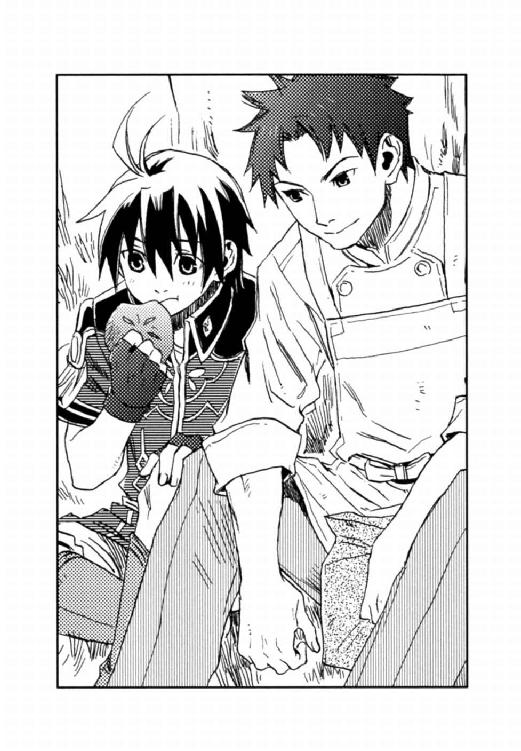
カイルは紙袋からもう一つパンを出し、「もう一個食うか」とディオンに差し出す。
「俺が軍人になろうと思ったのは、家族のためだったのにさ、その家族がいなくなって、俺は何のために生きているんだろうってわからなくなって、軍人になるのなんかやめようと思った。けど、そのころキースも姉さんを失って......元帥の実のお嬢さんで、キースとは血はつながってないんだ。キースにとっては母でもあり、姉でもあり、恋人でもありっていう特別な女性だったんだ。それはもう、キースのへこみようは半端じゃなくて、俺も落ち込んでなんかいられなくなってさ。今に至るってわけ」
（そんなことがあったんだ......）
カイルはディオンに視線を戻し、ニッと笑った。
「まあ、それぞれ人生色々あるさ。シーグだってお前が悪いんじゃないってことは、よーく承知している。ただ、まだガキだから、怒りのやり場がなくてお前に八つ当たりしているだけだ」
「どうしてそれを──？」
「フェルナンドから聞いた。あいつは頭に花を咲かせているように見えるが、結構色々考えてる。お前のことも随分心配してたぞ」
カイルは立ち上がり、
「じゃ、フェルナンドにも俺様の元気の出るパンを差し入れてくるから」
さっきのキースの姉さんの話、聞かなかったことにしておけよと言い置いて、カイルは学生寮の中に姿を消した。
（何のために生きているんだろう──）
ディオンはカイルの言葉を反芻する。
（俺は、父さんを助けるために〈蒼い鷹〉へ入った。そして──）
ディオンはフェルナンドの明るい空色の瞳を思い浮かべた。
（もう誰も悲しまないように、戦争で人が死ななくてすむように）
フェルナンドの夢は自分の夢だ。将来、自分が軍で強力な発言権を得れば、夢は現実になる。
（こんなところで迷ってる場合じゃない）
玲石を摘出してシーグに返してやればシーグの気は済むかもしれないが、その結果、ムスベルの秘密組織にユーミール復活の力を与え、再び帝国と連邦とムスベル、三つどもえの戦争を招く。その時に、指の動かなくなった自分に何ができるだろう。
（何のために生きるのか──。その答えは自分で見つけなくちゃ）
ディオンはすっくと立ち上がった。
シャワーを浴びて着替えを済ませ、ディオンが部屋を出ると、廊下にシーグが待っていた。後ろにはハーラルが付き従っている。
「僕は諦めないよ」
碧玉の瞳を鋭く輝かせ、シーグは言った。
「時計塔の化け物と、動く人形の〈不思議〉──。今度こそ僕が秘密を暴いてやる。そして、僕の方が君より優秀な〈精師〉だと証明して見せる。そしてその玲石は返してもらう。嫌だとは言わせないよ。君の手を切り落としてでも玲石を取り戻す」
「俺が勝ったら？」
「その時は、ルーエルグの判断は正しかったと、潔く玲石を諦める」
シーグの表情には曇りはない。ひたすらに一途で誇り高いのだ。
「一つ聞きたい」
ディオンは真っ直ぐにシーグを見つめた。
「玲石を取り戻したら、黒雷獣を〈精〉するのか？」
シーグは目をそらさず、
「当然だ。そのために僕はこれまで〈精〉の技を磨いてきたのだから」
と即答した。
「なら、玲石は渡せない。この勝負、俺が勝つ」
ディオンはきっぱりと宣言した。シーグは「いい気になるな」とディオンを睨み付け、踵を返した。
そこへフェルナンドが部屋から出てきた。
「どうしたの？ またシーグに何か言われた？」
「ああ、やつは勝負を続けるってさ。そして玲石を取り戻して黒雷獣を〈精〉すると言ってる」
フェルナンドの顔が曇る。
「そうなの、困ったね。僕から説明してみようか。僕が帝国の皇太子だって身分を明かして、黒雷獣が使用されたら〈死の光と熱〉が大陸中を焼き尽くしてしまうかもしれないってこととか、抑止力として実際に起動させなくても、国々の力の均衡が崩れて、また戦争が始まってしまうかもしれないってことを。だから、帝国は最後の黒雷獣ユーミールを分解したんだって、皇太子フェルナンドがヴォルジェ公シーグフリードに正式な形を取って話せば、わかってくれるかもしれない」
「よせよ、そんなことしたら、お前は〈蒼い鷹〉を辞めて、王宮に戻らなくちゃならないぜ」
「でも、このままじゃディオンが憎まれるだけだし、シーグだって本当のことを知った方がいいと思う」
「あいつの親はムスベルの組織に資金提供してたんだろ。あいつ自身も自分が玲石を継承するために、十年も砂礫の地下で〈精〉の練習してたんだぜ。お前の親の考え方は間違っている、お前の生き方も間違っていると、俺、あいつに言いたくないんだ」
「確かに、かわいそうだとは思うけど......」
「今、俺らが何を言っても、あいつは耳を傾けないってか、傾ける心の余裕がない。玲石のことしか考えられないんだ。真実を知るのは今でなくてもいいんじゃないか」
勝負に負ければシーグは落ち込むだろう。だが、生き方や考え方を否定されるよりは心の傷は浅くて済む。それで諦めがついて、別の生きる道を探す気になってくれるのなら、その方がずっといい。
「試合続行だ。俺は負けない。玲石を摘出して指が動かなくなったら困るからな」
ディオンはニッと笑う。
「心配かけたな、行こう」
その日からディオンは暇さえあれば人形の様子を探りに附属研究所へ出向いた。
時計塔の化け物の謎も解きたいのだが、ケトラー教授の監視の目が厳しく、彼のいない時でなければ行けない。そこで、とりあえず人形にターゲットを絞ったのだ。
人形があちこちに出没しているという噂は頻繁に聞かれたが、なかなか尻尾をつかむことはできなかった。
その日の夜も、ディオンとフェルナンドは附属研究所に忍び入り、開かずの研究室近くの柱の陰で、人形が出てくるのを待っていた。
そこへ、複数の足音と、声を潜めて語る男の声が聞こえ、ディオンたちはギクリとして身を縮めた。
「動くのは開かずの研究室に置かれている人形のうちの一体だそうです」
「生徒たちの噂通りなら、光の賢者モーリス・タウンゼント博士の作品ということになるが、彼が行方不明になってから十年以上も経っておるぞ」
「人形が動くようになったのは今年に入ってからですからね。タウンゼント博士とは関係ないでしょう」
太った黒いスーツの男と、白衣の男がディオンたちの前を通り過ぎた。
（薬の賢者クレーツェ教授だ）
白衣の男は助手らしい。クレーツェ教授が生き物の〈精〉を研究していることはディオンも聞いていた。彼は動く人形の噂を耳にして確かめに来たのだろう。
幸い、二人ともディオンたちには気づかなかったようだ。彼らは開かずの研究室の前で足を止め、鍵束を取り出した。
「士官学部の〈蒼い鷹〉から来た生徒が鍵を溶かして開けたとかで、鍵を取り替えたそうですよ。軍人だというのに困った悪戯者ですね」
助手が言うのを聞いて、ディオンは肩をすくめた。
部屋に入った二人は、並んでいる人形を調べ始めたようだ。
「見た者の話では、金の巻き毛にエプロンドレスを着けていたということですから、これがそうじゃないですか。でも、今は全く動きませんね、普通の人形に見えますよ」
「もしもこれが〈精〉で造られた生き物だとすれば、制作者は相当な技術を持った〈精師〉だ」
「命の賢者ケトラー教授が造ったのでしょうか」
「まさか、彼が造ったのならこんな物置ではなく、彼の研究室に置いておくだろう。第一あやつが生き物の〈精〉に成功したのなら、どうだと言わんばかりに私に見せびらかしにくるわい。ふむ、だが、あの失敗作のようにどこか欠陥があって物置に捨て置いたのかもしれんな」
「持ち帰って調べてみますか？」
「いや、痛くもない腹を探られてはかなわん。放っておけ。実害でも報告されれば教授会で取り上げられるだろう」
クレーツェと助手はそう言って研究室を出て行った。
彼らが遠く去ってから、
「欠陥があって捨てられたって言ってたね」
フェルナンドは首を傾げる。
「でも、あの動きは欠陥があるようには見えなかったけど」
「つまり、ケトラー教授が造ったんじゃないってことだ」
クレーツェでもケトラーでもないのなら、この人形はムセイオンで造られたのではないということになる。しかし、連邦は帝国ほど〈精〉技術は発達していないし、ムスベルの秘密組織であるはずもない。ムスベルに上級〈精師〉がいるのなら、ルーエルグがディオンに〈光〉の玲石を移植する必要などないからだ。
（いったい、誰があの人形を〈精〉したんだ？）
「私の助手になる決心はついただろうか？」
ベニートは灰色の瞳で、穏やかにディオンを見つめた。
窓の外はすでに青い闇が迫り、一番星が輝いていた。
授業が終わり学生寮に戻ったディオンを、ベニートが呼び出したのである。
そう言えばそんな話があったっけ、とディオンは思い出し、
「申し訳ありません。俺は〈蒼い鷹〉を辞めるつもりはないんです」
きっぱりと断わった。
ベニートは小さく吐息をつき、
「そうか、残念だ。君のような優秀な〈精師〉を是非助手に欲しかったのだが」
残念そうに笑んだ。
「気が変わったら、いつでも言ってくれ」
「失礼します」
ディオンは頭を下げると、ベニートの研究室を出た。
特待生クラスの前を通ると、なぜか教室の扉が開いている。
（おかしいな、授業が終われば扉に鍵をかけちゃうのに）
ディオンは中を覗き、教卓の後ろに小さな影が潜んでいることに気づいた。
「誰だ！」
教壇に走り寄ると、その小さな影がパッと飛びだした。
（人形──！）
自分の体以上の長さの筒を抱え、人形は教室から走り出る。
「待て！」
その筒は、今日の授業で使用した音波砲で、ベニート教授が開発したばかりの新兵器だった。
（音波砲なんか持ち出して、どうするつもりなんだ？）
ディオンは人形を追ったが、人形は飛ぶような速さで駆け、瞬く間に闇の中へ姿を消してしまった。
（どこへ行った）
ディオンは人形がいつもいる開かずの研究室に行ってみた。研究室の扉には鍵がかかっている。
（鍵を溶かすわけにはいかないな。バレたら懲罰房どころか退学処分かも）
研究所を一旦出て建物を回り、研究室の窓を覗く。
薄明かりの窓辺に、人形は、他の人形と交じって腰掛けていた。
（音波砲は──、ここからじゃわからないな）
背伸びして部屋の中を見通そうとしたが、奥は暗くて見えない。
（ベニート教授に音波砲が持ち去られたことを言いに行くか──、いや、先に中将に報告した方がいいかも）
と、キースの宿舎を訪ねた。
一通りの報告の後、
「ベニート教授に言った方がいいかな？」
ディオンが尋ねると、キースは「いや、彼には何も言うな」とのことだった。
「それから、あの人形を〈精〉したのは、ムセイオンじゃなさそうなんだ」
ディオンは、来たついでに薬の賢者クレーツェ教授が人形を調べに来たことも話す。
「ムセイオンで、生き物の〈精〉を研究してるのはケトラー教授とクレーツェ教授の二人だけで、クレーツェ教授じゃないことは確かだ。で、クレーツェ教授はケトラー教授の失敗作かもしれないって言ってた。失敗作って、どういうことだろ。失敗にしろ何にしろ、ケトラー教授は生き物を造れるのかな」
ディオンはキースを振り仰ぐ。
「ムセイオンでは、軍が思っている以上のことをしているのかもしれんな」
キースの表情からは何も読み取れない。
「どっちにしろ、あの人形が失敗作とは思えないから、ケトラー教授の作品でもないと思うんだ。そうなると、いったい誰が人形を〈精〉したんだろう」
ディオンの問いに、キースは答えなかった。
翌日の朝、音波砲の紛失が明らかになると、士官学部は大騒ぎになった。
「今日の一限は申し訳ないが、みんなで音波砲を捜してくれないか」
切羽詰まった顔でベニート教授は言った。
生徒も専攻科の学生も総動員で音波砲を捜し、他学部にも連絡が行って大捜索が行われた。
「学生寮も調べられるんだってよ。やばいな、俺、図書館から半年も借りっぱなしの本を部屋に散らかしたまんまなんだ」
ジャックは苦い顔をしている。
「誰かが盗んだってことだろ？ そんな物持ち出してどうするつもりなんだろ」
「成績表を破壊するとか？ 僕ならそうするけど」
クラスメイトたちの会話を聞きながら、
（人形が音波砲を持って行くのを見たのは俺だけなのか。そんな遅い時間でもなかったのに──。もしかして、共犯者がいる？）
ディオンは人形を造った人物に、思いを巡らせた。
音波砲の捜索は丸一日行われたが、結局見つからなかった。
「私がきちんと金庫に保管しておけばよかったのだ。まさか、こんなことになるとは......」
ベニート教授の憔悴ぶりは見ていて気の毒なほどだった。
〈蒼い鷹〉宿舎、アッシュはベッドに乗り、枕の下に鼻を突っ込んで寝そべっていた。暇だし寂しいし、ディオンの匂いが恋しくて、つい彼のベッドに上ってしまうのである。
「アッシュ」
扉が開き、アッシュは首をもたげた。とても女らしい風情の青年が、穏やかな笑みを浮かべて入ってきた。
『中尉』
「おやおや、そんな所に乗っていいのですか？」
ユアンはベッドに腰掛け、「ディオンがいなくて寂しいのでしょ」と笑った。
「中将から指令が来ましたよ。捜し物です」
『捜し物？』
「長さ約一メートル、直径約二十センチの金属製の筒状の物です。超音波を〈精〉して物を破壊する、音波砲という新兵器らしいですね。ムセイオンで造られ、ディオンも何度か触れているそうですよ。他の人も大勢触っているそうですが、見つけられますか？」
『金属には匂いが残りにくいのよね。とにかくやるだけやってみるわ』
アッシュはベッドから飛び降りた。
その日、キースの演習は炎弾の〈精〉だった。小さな炎の弾を連続で〈精〉し、機関銃のように射出するというものである。
ディオンは炎弾の〈精〉をあっという間にマスターし、報告に行こうとすると、シーグも割って入るように「できました」と挙手する。
（何だかあれ以来、敵意をあからさまに感じるな）
ディオンは小さく吐息をつく。
（ま、それは俺も同じだ。負けちゃいられない）
「あの板に向かって、試し撃ちをしてみろ」
キースは、体育館の壁に取り付けられた金属板を指差した。
シーグは玲石を貼った手袋に源石を握り込み、金属板に向かってバッと手を開いた。
ものすごい破裂音と共に、炎の弾が板にぶつかる。板は黒く焦げて、でこぼこになった。
「すごい威力だ......」
生徒たちは啞然とした。
「次、ディオン」
キースの指示でディオンも試し撃ちをする。〈精〉の速さも弾の威力もシーグと全く互角だった。
「他にできた者はいないか？」
キースは体育館の床に座り込んで炎弾を〈精〉している他の生徒たちに尋ねたが、完成させた者はいなかった。
「他の生徒ができるまで、二人で炎弾を使用した戦闘訓練をしていろ。但し相手に怪我をさせないよう、火薬の量は十パーセントに落としておけ」
キースはそう言って、他の生徒の指導に回った。
二人は訓練用の防弾防火服を羽織る。
「じゃあ、行くよ」
シーグは唇の端をつり上げた。
「いいぜ」
フェルナンドとハーラルが不安げに見守っているのを視界の隅で感じながらディオンは構えた。
シーグの手の平がディオンに向けられるのと同時にディオンも炎弾を放った。
〈精〉はディオンの方がコンマ五秒ほど速かった。小さな炎の弾がシーグの防弾防火服に当たってジュッと消える。しかし──、
「うわっ！」
ディオンはキースに言われた通り火薬の量を十パーセントに減らしたにもかかわらず、シーグは火薬の量を半分程度にしか減らさなかったのだ。相当量の炎の来襲を知り、ディオンは床を蹴って回転し、炎を避ける。
「ちょ、ちょっと待て──」
ディオンが体勢を立て直す前に、次の弾がディオンを襲った。ディオンは咄嗟に合金の盾を〈精〉する。炎は盾にぶつかってはじけたが、ディオンはその衝撃で吹っ飛び尻餅をついた。
更なる炎弾が迫り、ディオンは盾をかかげたが間に合わない。
（だめだ、やられる）
と思った瞬間、
バシッ──。
見えない障壁がディオンを包んだ。炎弾は障壁に遮られて散っていく。
（危なかった......）
見上げると、キースが白い手袋をはめた手を開いてディオンに向けていた。
キースの表情は変わらなかったが、薄氷の瞳はいつにも増して冷たかった。
「火薬を十パーセントに減らせと言ったはずだ」
ハーラルが駆け寄り、シーグの腕を押さえる。フェルナンドも青い顔で駆けつけてきた。
「申し訳ありません」
ハーラルが、「放せ！」ともがくシーグの腕をつかんだまま詫びた。
キースはシーグをじっと見つめ、おもむろに口を開いた。
「私の故郷に王家の血を引くヴォルジェ大神官という偉大な〈精師〉がいた」
ディオンはハッとシーグの顔を見た。
他の生徒たちはキースが何の話をしているのかわからず怪訝な顔をしている。
ヴォルジェ大神官とはシーグの祖父、すなわちディオンの手にある〈光〉の玲石のもとの持ち主で、黒雷獣を〈精〉した伝説の〈精師〉である。
「軍の命令で、大神官とその一族は、ある兵器の〈精〉を余儀なくされた。大神官は亡くなるまでそれを造ったことを悔いていたと聞く」
ディオンは驚いたが、シーグはもっと驚いたに違いない。
「噓だ......」
彼は呟いた。
「噓ではない。だからあの玲石はそれ以後、誰にも移植されず、神殿に封じられたのだ」
「そんなこと、ルーエルグは一言も......」
キースは白い手袋を外し、シーグに手の平を見せた。ディオンの位置からでは見えないが、キースの手の平にも玲石が埋まっているはずだった。
「父の形見だ」
彼の手を見て、シーグとハーラルの目が見開かれた。
「その玲石は......では、あなたは......」
ハーラルの声は震えていた。
「噓です！ たとえあなたの言うことでも、僕は信じません！」
シーグは絶叫した。そして、ハーラルの手を振りほどくと、ダッと駆け出し体育館を出て行った。
残ったハーラルは立ちすくんでいる。
「その時は、そうするしかなかった。ヴォルジェ公も、マーシア卿──お前の父も、そして私の父も......。だが、時代は移っていく。過去に縛られる必要はないのだ」
キースは無表情のまま手袋をはめた。
「──はい」
ハーラルは悲しそうな顔で一礼すると、シーグを追って行った。
（中将って、何者......？）
尻餅をついたまま呆然としているディオンを見下ろし、
「お前が未熟だから、私がいらぬ世話を焼くはめになったのだ」
キースは憮然と言い放つ。
彼の手に埋まっている玲石がシーグたちにとってどんな意味を持つのかディオンにはわからない。しかし決して人に見せない玲石を彼らに見せ、ディオンを敵視するシーグを説得しようとしてくれたのだ。
「申し訳ありません。ありがとうございます」
キースの無表情の奥に、自分を案ずる気持ちを感じて、ディオンは嬉しかった。
水色のドレスに日傘を差して、長い赤い髪の女が湖畔を散策していた。
遠く湖の中央には、ムセイオンの白い校舎が西日を浴びて眩しく輝いている。
女は、湖の小さな船着き場へと歩んでいった。そこには小舟が泊められ、屈強な体つきの青年が仕入れてきた野菜や小麦の袋を積んでいる。
「御苦労様」
女は青年に声をかけた。
「よう、ジェイダ」
青年は顔を上げ、同じ部隊の女性兵士にニッと笑みかける。
「音波砲が見つかりました」
ジェイダは言った。
遠目に見ればパン職人の青年とその恋人の、人目を忍んでの逢瀬に見えるが、ムセイオンに潜入しているカイルと〈蒼い鷹〉待機組との定時連絡である。
「どこで？」
「港の漁師相手の酒場です。アッシュが嗅ぎつけました」
「何で酒場なんだ？」
「その酒場が仕入れを行っている卸店は〈帝都運輸〉と提携しています」
カイルが、いつもはとぼけたハシバミ色の瞳を険しくする。
〈帝都運輸〉は表向きはただの船会社だが、その実は帝国最大の密輸業者である。
「裏で糸を引いているのは〈沈まぬ星〉かよ」
〈沈まぬ星〉とは、連邦政府内で軍部を率いる一派の名前である。構成員は少ないが政治に多大な影響力を持っていた。〈帝都運輸〉はその〈沈まぬ星〉の下部組織である。
「人形は連邦からやって来た密偵なのでしょうか？」
「そういうことになるが──、しかし、ムセイオンは人も物も出入りのチェックが厳しい。俺だってようやく食材運搬を任せてもらえるようになったが、それでも島に下りる時は小麦粉の袋の中まで調べられる」
カイルは腕を組む。
「人形はどうやって島に入った。そして人形が盗んだ音波砲は、どうやって島から持ち出されたんだ──」
「チェックを受けずに自由に島へ出入りできる人物はいないのですか？」
「教授と助教授だけだ。講師以下の教官は、島の往来は自由だが荷物を検査される」
「では、教授か助教授の中に、連邦の内通者がいると──」
ジェイダは軽い驚きを見せたが、
「えらいことになったぞ」
カイルは何だか楽しそうだった。
その日は水曜日だった。午前七時五十分、ディオンとフェルナンドは学生寮から走り出る。
いつもの軍服ではなく、ムセイオンの制服を着ていた。
今日は教授たちの巡回日である。校舎をつなぐ小径は、巡回までに整列しようと急ぐ生徒や学生でごった返していた。
二人はまっすぐ理工学部に向かう。理工学部玄関には、黒いローブをまとった教授たちが集まり始めていた。
「まだ、ケトラー教授は出てきてないね」
「ああ、だが待っていられない。理工学部の生徒が整列し終わってからじゃ、中に忍び込めないからな」
二人はケトラー教授の研究室から、天の玲石を持ち出すつもりだった。
時計塔機械室の障壁を解除するには、ディオンの持っている玲石では、二人以上の上級〈精師〉が同時に〈精〉を行わなくてはならない。しかし、天の玲石があれば、ディオン一人でも障壁を解くことができる。そこで、唯一教官たちが全員出払う巡回の最中に、玲石を拝借してしまおうという作戦だった。
彼らの目に留まらないように大きく迂回して、ディオンたちは裏口から校舎に入った。
廊下は、まだ整列の完了していない生徒で混雑し、幸い部外者の侵入には気づいていないようだった。
生徒たちをかき分け、二人は階段を駆け上がる。二階の廊下には誰もいなかった。
ディオンたちは柱の陰に身を寄せ、じっと待った。
間もなく研究室のドアが開き、黒いローブのケトラーが姿を現した。研究室の鍵をかけ、彼は階段に向かう。ケトラーの姿が見えなくなったのを確認し、二人は柱の陰から飛び出した。
ディオンはポケットから合い鍵を取り出し、研究室のドアを開けた。ジャックが用意してくれた合い鍵である。
「俺は窓側を捜すから、お前は実験台の方を見てくれ」
「うん、黒い手金庫だね」
二人は大急ぎで部屋の中を捜索した。
「あった」
フェルナンドが事務机の引き出しから小さな手金庫を発見した。ディオンは急いで番号を合わせ、蓋を開けると、ビロードの布にくるまれた銀白色の玲石を取り出す。
「よし、これで時計塔の機械室を開けられる」
ディオンは手金庫を元通りしまうと、
「急ごう、時間がない」
と駆け出した。
ちょうど階下では理工学部の巡回が終わったところなのか、生徒たちが解散し始めていた。そのどさくさにディオンたちは校舎を出る。今頃教授たちは農学部を回っているはずだった。
「それにしても、ジャックってすごいね。ケトラー教授が天の玲石を持っていることを突き止めたし、教授の研究室の合い鍵も手に入れるし、手金庫の番号まで調べ上げるなんて。教官たちの緊急会議で、今日は時計塔の警備が薄いって聞いてきたのもジャックでしょ」
「まったくだ。このまま〈蒼い鷹〉に入れるんじゃないか。あいつの情報収集能力は並じゃないな」
士官学部の裏口ではジャックとフランツが下着姿でディオンたちの軍服を持って待っていた。
「首尾は？」
「上々」
ディオンはニッと笑う。
彼らに制服を返し、軍服を身につけると、「急げ」四人はダッと走り出した。
ディオンたちが定位置に着くと同時に、教授たちの一団が玄関に姿を現した。
「危なかった......」
フェルナンドが呟いた。
しずしずと進む賢者たちのすぐ後ろに、キースの姿があった。彼だけは黒いローブではなく軍服である。彼は、妙に汗をかいて荒い息をついている部下二人を薄氷の瞳で一瞥すると、いつもの無表情で通り過ぎて行く。
（非常勤講師だってのに、教授より前って、すごくね？）
やっぱり中将はムセイオンでも特別なんだなとディオンは思った。
「密偵!?」
「しっ、声が高い」
カイルは唇に指を当てた。
昼休み、いつものようにパンを買いに行ったディオンは、カイルから「客が引けるまで待ってろ」と耳打ちされ、売り子の手伝いをしながら人がいなくなるのを待っていたのである。
カイルはアッシュが音波砲を発見し、人形が連邦の密偵であることを語った。
「しかも人形の後ろにいるのは、連邦政府を陰で操る〈沈まぬ星〉だ」
「〈沈まぬ星〉......噓だろ」
「──何か、すごいことになってきたね」
「お前らはお前らで、普通にやってればいい。ただ、ディオンは手の玲石、フェルナンドは実は皇太子っていう秘密を抱えてっから、気をつけろってだけの話だ。ただし、時計塔には登るなよ、キースがそう伝言してきた」
「何で？」
「あの塔に棲んでいるのは、思ってたよりやばいらしい。詳しいことはわからんが」
せっかく天の玲石を手に入れたのに、とディオンは思ったが、キースの命令では仕方がない。
「......わかった」
ディオンは渋々頷いた。
夕食の席で、ディオンがクラスメイトに時計塔攻略中止を告げると、
「えーっ！ 時計塔に行かないのか？」
二人のために東奔西走して情報を集めたジャックはがっかりした。
「うん、ちょっと事情が変わって──悪い」
「だけど、シーグとハーラルは今夜時計塔に登るって言ってたよ。音波砲の件で今夜は緊急会議があるだろ。時計塔に見張りがいない今夜がチャンスだって。あの二人は、天の玲石がなくても扉の障壁が解けるし」
フランツが別の席で食事をしているシーグたちをチラリと見る。
（まずい。シーグが勝負に勝ったら、あいつは俺の手の玲石にこだわり続ける）
ディオンは焦った。
「行こうよ、ディオン。ここで負けちゃったら何もかも台無しになるんだよ。賞品のことも、シーグの気持ちも──」
フェルナンドが言った。皇太子は中将を恐れない。
（度胸がいいのか、単に頭がお花畑なのか、何にせよいざって時の決断力はすごいよな）
ディオンは苦笑し、
「よし、行くか」
と、立ち上がった。
月のない夜だった。
ディオンとフェルナンドは大きなリュックを背負って、しんと静まりかえった理工学部の校舎を忍び歩く。
二人は立ち入り禁止の札が掛かった扉を開けた。長い螺旋階段を登り、やがて機械室前のホールに出る。
機械室の扉は以前と変わらず、扉の周囲に配置された玲石が発する光で縦横無尽に包まれていた。〈炉〉の原理を応用したその障壁は、触れた物を〈精〉して分解してしまう。この障壁を通り抜けるためには、玲石の反応を無効にする物質を大量に〈精〉しなければならなかった。
「玲石の反応を無効にする物質って、見当つかない。具体的にはどんなの？」
フェルナンドは色とりどりの光の筋を見つめる。それぞれの玲石からは電気や音波、様々な種類の電磁波と呼ばれるものが発射されているらしいが、フェルナンドにはそのすべてを理解することはできない。
「この手袋形の〈炉〉に使ってる生地もその一つさ。これは、電流や波長の長い電波を通さない。だから手まで〈精〉されないんだ。けど高温になると燃えるから、高い熱が生成されるような〈精〉には使わないだろ」
「うん。温度が高くなるような〈精〉には耐熱ガラスの〈炉〉を使うね」
「だから高温を発する緋の玲石には断熱材をかぶせちまえばいい。で、電気を発生させる青玉の玲石には電導性の低い物質をかぶせると、そういうわけ。言うのは簡単だけど、それを〈精〉するのは結構難しい」
ディオンは指なし手袋に玲石を貼り付け、源石を手に載せると、透明な粘塊を〈精〉した。それを扉上部の緋の玲石に向けて放出する。粘塊が緋の玲石を包み込むと、そこから出ていた淡紅色の光が止まった。途端に扉の奥から獣の唸り声が聞こえ、フェルナンドはビクッとした。
扉を囲う玲石を一つ一つ無効にし、最後に冥の玲石が残った。
ディオンはケトラー教授の研究室から拝借した天の玲石を取り出し、黒い指なし手袋の右手に貼り付けた。ジャックが図書館で冥の玲石の性質を調べ、ディオンはそれを無効にする物質の〈精〉を一通り練習してあった。
「これを使えば、冥の玲石が出してる銀鼠色の光を遮る物が造れるはず」
天の玲石と対にするのは陽の玲石である。ディオンは左の手袋を外した。彼の左手の平には朱色に輝く大きな玲石が埋まっていた。その上に源石を載せディオンは慎重に左右の手の平を向かい合わせる。手の平に虹色の火花が散り、源石が浮き上がった。玲石の距離と角度を調整すると、源石から真珠色の滴がにじみ出る。それを必要量得るにはひどく時間がかかった。ようやく握り拳大の量に達したそれを冥の玲石に向けて放った。真珠色の塊が冥の玲石を覆うと銀鼠色の光がスッと消えた。
「──うまくいった」
ディオンは額に浮いた汗を拭った。
「やったね、さすがディオン」
その頃には、扉の中の唸り声は床を震わせるほどの吠え声に変わっていた。
「障壁が破られたことに気づいたんだろう」
「何だか、たくさんいるみたいだね......」
フェルナンドは怖じけた様子で、扉の向こうに耳を澄ます。
「ここまで来たんだから、今更後には引けない。危ないから下がってろよ」
ディオンは腰のナイフを抜いて扉のノブに手を掛けたが、その時、階下から小さな足音が聞こえてきた。
「誰か来る」
「ケトラー教授かな、僕たちに気づいたとか」
カンテラの明かりを消して、ディオンとフェルナンドはホールの端から階下を覗く。
「抜け駆けは許さないよ」
階段の下から自分たちを見上げているのはシーグとハーラルだった。
「何だ、お前たちか」
シーグたちは長い螺旋階段を駆け上がって来た。ホールに上がり、扉の障壁がすべて解除されているのを見ると、
「僕だってそれくらいの物は〈精〉できる」
と碧の瞳を眇める。
「わかってるさ、勝負はこれからだ」
ディオンもシーグを見つめ返した。
シーグとハーラルの腰にはサーベルが下がっていた。シーグはその細身の長剣を抜き、
「化け物の正体は僕が見極める」
と、扉に歩み寄る。
「おい、ちょっと待て──」
ディオンは止めたが、シーグは獣の唸り声など気にも留めずにバッと扉を開けた。ディオンは凄まじい殺気を感じて急いで扉を閉めたが、すでに遅かった。一つの黒い影が『ガーッ』という声と共に隙間から飛び出していた。
「うわっ！」
シーグとフェルナンドが同時に叫び声を上げた。
ほんの一瞬の出来事だった。
気づいたときには、ディオンの足下近くに、シーグが肩から大量の血を流して倒れていた。そして、シーグの後ろには、フェルナンドの右腕に鋭い牙を突き立てている化け物がいた。
「何なんだ......これは......」
この世にこんな生き物が存在するはずはなかった。
体格は大型の肉食獣──ライオンに似ているかもしれない。しかし、体表を覆っているのは毛ではなかった。倒れたカンテラの明かりを艶々と照り返しているのは真っ黒な鱗だった。尾はなく、四肢の先には猛禽類のようなかぎ爪が生えていた。
大きな尖った耳は顔の真横にあり、顎が短く、人間や猿に近い顔をしていた。しかし、異様に大きな口は耳まで裂け、ワニのような鋭い牙が何列も生えていた。その牙が、フェルナンドの腕に食い込んでいるのである。
フェルナンドの顔は苦痛に歪んでいた。
「シーグフリード様！」
ハーラルが主に駆け寄り、
「フェルナンド！」
ディオンはナイフを構え、化け物に斬りかかった。
化け物の顔はディオンには向かず、ピクリと耳が動いた。そしてディオンのナイフが首に突き立てられる寸前に、ようやくフェルナンドから牙を離してディオンに向かってきた。
ディオンは迫る化け物の牙をナイフで弾き、跳躍してフェルナンドを背に庇う。フェルナンドは蒼白だったが、傷は思ったよりも浅いようだった。
黒い化け物は四つ足で着地し、そのままじっと動かない。
（反応が遅い）
長年、山で狩りをしてきたディオンは、最初の一手で化け物の様子がおかしいことに気づいていた。そして今、獣はディオンを見ずにあらぬ方向に顔を向け、耳をそばだてている。
（そうか──）
その時、シーグを抱き起こしたハーラルが、
「シーグフリード様、しっかりなさってください」
悲痛な声で主を呼んだ。化け物の顔がそちらに向く。
「喋るな！ そいつは目が見えない。音に反応するんだ」
ハーラルはハッと口をつぐんだが、その時はすでに化け物は彼らに向かって跳んでいた。ハーラルは鞘走りの音も鋭くサーベルを抜いて、化け物の牙に嚙ませたが、サーベルはバキッと一咬みで砕かれてしまった。
ディオンが化け物とハーラルとの間に割って入り、
「お前の相手は俺だ」
とナイフを振りかざす。
化け物は目が見えない代わりに聴覚は鋭いらしく、ナイフが風を切る音を感じて、紙一重のところで避けた。
「こっちだ。来いよ」
ディオンはわざと化け物に呼びかけながらじりじりと移動し、ハーラルたちから遠ざける。
化け物が床を蹴った。迫る牙がディオンの頭を掠め、すれ違いざまディオンは獣の首にナイフを当てた。黒い鱗はナイフを弾き、金属音と共に火花を散らした。
化け物は着地すると今度は荒い息をつくシーグに目標を移す。
シーグの前に出たハーラルは手の平を化け物に向けた。彼の手袋に貼られた玲石から巨大な炎弾が発射された。
『ギャン！』
化け物はもんどり打って転がり、階段口の端で腕を押さえていたフェルナンドに激突した。
「うわっ」
フェルナンドがバランスを崩してホールを囲む低い柵を越えて落ちかかる。
彼は柵の棒をつかんだが、怪我をした右腕に力が入らず、自力ではい上がれない。下は十数メートルにも及ぶ吹き抜けである。落ちたら間違いなく命はない。
「フェルナンド！」
ディオンは駆け寄りフェルナンドの手首をつかんだ。フェルナンドもディオンの手首を握る。
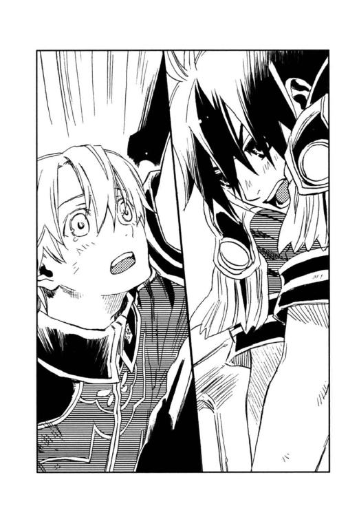
「ごめんね。またヘマやっちゃった」
フェルナンドは情けない声を上げる。
背後に化け物の唸り声を聞きながら、ディオンはフェルナンドを引き上げようと渾身の力を振り絞った。身の毛のよだつような殺気が迫っていた。ディオンは片手でナイフを振り回したが、そんな脅しは利かなかった。
ハーラルが炎弾を〈精〉して獣にぶつけた。化け物は吹っ飛んだが、強靭な鱗には傷一つつかない。化け物は再び立ち上がった。
「ディオン、僕よりも先に化け物の方を──。このままじゃ君が──」
フェルナンドはそう言うが、片腕の傷ついた彼を放っておいたら、落ちるのは時間の問題だ。
「いいから、しっかりつかまってろ」
ディオンはナイフを捨て、両手でフェルナンドの手を引っ張った。
「ディオン！ 手を離して！ 化け物が来た！」
彼の目には、ディオンの背後で大きな口を開けている化け物の顔が映っている。
「離せるかよ。お前を見捨てて俺だけ生き残るなんて、冗談じゃない」
自分が化け物に喰われるかもしれないとか、二人して墜落するかもしれないとか、そんなことは全く考えていなかった。
（お前を死なせてたまるか！）
ディオンはフェルナンドを引く手に力を込める。
「諦めるな！ お前は俺と一緒に戦争のない国を造るんだろう！」
「ディオン......」
フェルナンドは一瞬目を見開き、続いて「うん」とディオンの手首を力強く握った。
低い唸り声がすぐ耳元で聞こえ、獣の生暖かい息がディオンの首筋にかかった。
その時──。
『やめなさい!!』
小さな影がフェルナンドとディオンの頭を飛び越し、獣に飛びかかった。影は獣と絡まるように格闘する。
両者は同時に飛び退り、対峙した。
その間にディオンはフェルナンドをホールに引き上げた。
獣と向かい合っていたのは、金の巻き毛の愛らしいビスクドールだった。
人形から、耳の奥に響く小さな高い音が発せられていた。
（何か喋ってるんだ。俺たちには聞こえない声で）
獣の殺気が徐々に薄れてきた。ディオンたちが呆然と見守る中、人形は機械室に歩み寄り、扉を開ける。すると獣は機械室の中に戻って行った。
人形は扉を閉じ、ディオンたちに向き直る。
『化け物は〈炉〉を持ち出す者を滅すると言っている』
人形が喋った。
『二度目は許されないだろう。もうここへは来るな』
人形はそう言うと、バッとスカートを翻して塔の螺旋階段を飛ぶように駆け下りて行った。
「喋りましたよね......」
ハーラルは、シーグを抱きかかえたまま啞然としていた。
「人形は、連邦の密偵だって、大佐が言ってたよね......。何で僕たちを助けてくれたの？」
フェルナンドが独り言のように呟く。
「〈炉〉？ この障壁のことじゃないよな──」
ディオンは獣が姿を消した機械室をじっと見つめた。
「気がついたか？」
薄目を開けたシーグに、ディオンは笑みかけた。
「ここは？」
シーグは、煌々と室内を照らす明かりに目を細めた。
「俺の部屋だ」
シーグは起き上がろうとして、肩の痛みに顔を歪める。
「じっとしてろ。縫い終わったばかりなんだ」
シーグは上半身裸で、肩の下にはまだ血のついたガーゼが敷かれたままになっている。
ディオンはベッドの端に腰掛け、「ちょっとしみるけど、我慢しろ」と肩に薬を塗った。
「ハーラルは？」
「お前の部屋へ着替えを取りに行った。すぐに戻ってくる」
ディオンたちが塔を降りると、騒ぎを聞きつけた理工学部の助手や庁務員が集まってきた。闇に紛れて彼らの追跡を逃れ、ディオンたちは学生寮に戻ったのである。フェルナンドは治療を済ませ、すでに自室で休んでいる。障壁を解除した様々な物質はディオンとハーラルが〈精〉で分解し、源石に戻して持ち帰ってあった。天の玲石も、ディオンがシーグの怪我を治療している間に、ハーラルがケトラー教授の手金庫に戻しに行った。
「あいつ、なかなかやるな。炎弾の〈精〉も素早いし、度胸もあるし、お前をおぶって息も切らさずここまで走ってきた」
ディオンがハーラルについてそう評すると、
「当たり前だ。ハーラルは自分の立場をわきまえて何事も控えめだが、誰よりも頼りになる男なのだ」
シーグは誇らしげに答える。
「いい従者を持ったな」
ディオンは微笑み、シーグの肩に包帯を巻き始めた。彼は、しばらくディオンの顔を見ていたが、
「なぜ僕を助けた」
ぼそりと呟いた。
「俺は医学部の〈精師〉免許を持ってるんだ。言わなかったっけ」
「そうじゃなくて、僕は君の敵なのに......」
シーグの問いに、
「連邦の兵士だろうが、ムスベルの秘密組織の密偵だろうが、誰かが怪我してたら治療するさ」
ディオンは軽い口調で答え、シーグは怪訝な顔でディオンを見つめた。
「俺は人が死ぬのが嫌なんだ。敵でも味方でも──。誰もが幸せに、老衰で死ぬまで笑って暮らせたらいいと思ってる」
「何を甘いことを──」
「こんな世の中で、そんなことあり得ないって思うだろ？ でもさ、たった一人だけ、俺の夢を現実にできるやつがいるんだ」
ディオンは温かい笑みを口元に刻む。
「フェルナンドか......」
シーグの呟きにディオンは瞠目した。
「フェルナンドが何者か、知ってたのか」
「君の手に〈光〉の玲石が移植された時、フェルナンドも一緒に囚われていただろう。その時にルーエルグから聞いた」
「何だ、最初から知ってたのか。あいつ、身分を明かそうかどうしようかって悩んでたのに」
ディオンは苦笑する。
「フェルナンドは次期皇帝だ。あいつは連邦と和平を結び、ムスベル難民を救済すると言ってる。そのための布石は着々と打ってるよ。〈蒼い鷹〉に入ったのもそのためだし。将来的に、俺を軍の幹部に仕立て上げて、手駒として使うつもりだ」
「利用されてるだけじゃないか」
「ああ、戦争のない国造りに利用してもらえるなんて、光栄だ」
ディオンは笑った。
「あいつは頭に花が咲いてるようなところもあるが、やる時はやる。俺なんかいなくても、夢を叶えるために独りで踏ん張るだろう」
ディオンはシーグの背に手を回して少し起こすと、「痛み止めだ。飲んどけ」と、錠剤を彼の口に放り込み、水の入ったコップを口元に当てる。
「けど、あいつは俺が必要だと言ってくれた。俺で役に立つのなら、俺はあいつの支えになりたい」
「バカじゃないのか......」
薬を飲み下し、シーグはボソッと呟いた。
「あいつのために、一人ぐらいバカやるやつがいたっていいだろう？」
ディオンは肩をすくめて笑った。
（何だかんだで、俺はあの王子様を放ってはおけないんだ。結局──、俺はあいつがかなり気に入ってるんだな）
ディオンはふと自分がフェルナンドの笑顔に惹かれた理由を思い出した。
心の奥に凝る、決して消えない痛み──。
（フェルナンドが気に入っただけじゃない。俺がフェルナンドの夢を叶えたいって願うのは、そう──俺自身のためだ）
「俺は、連邦の無差別攻撃で、三つの時母親を亡くした。母さんの顔はほとんど憶えてない。父さんは俺が五歳の時、出征してそれっきり」
シーグは目を見開いた。
「君も両親がいないのか......。僕は〈光〉の玲石のことばかり考えていて......そんなこと......」
「その時の喪失感ってのかな......。今までずっとそばにいてくれた大好きな人が、突然、呼んでも泣いても応えてくれなくなったっていう心の痛みだけは憶えているんだ」
シーグの碧の瞳が潤む。彼もまた両親を亡くした時の記憶を蘇らせていた。
「平和主義とか、かっこつけてるわけじゃない。もうあんな思いはしたくないし、他の誰にもさせたくない。ただ──それだけだ」
ディオンはため息交じりに笑った。
ぽろっとシーグの瞳から涙がこぼれ落ちた。
「どうした、傷が痛むのか？」
ディオンは、「治療が乱暴だったか？」とうろたえた。
「ああ、そうだよ。下手くそ。医者にならなかったのは、大正解だな」
シーグは顔を隠すように毛布をかぶった。
夜明けを待って、ディオンとフェルナンドは教官の宿舎へキースを訪ねた。
フェルナンドの腕を見て、キースは眉根を寄せる。
「何てことを──。あなたは将来帝国を背負うべき立場であることをお忘れか。あなたの御身はあなた一人のものではないのですよ」
表情はさして変わらなかったが、言葉遣いの変化だけでも、十分にキースの動揺が窺える。
「ごめんなさい」
フェルナンドはしょぼんとうなだれた。
「ディオン、お前がついていながら、何ということだ」
憤りの矛先はディオンにも向く。
「すみません......」
（時計塔には登るな、って言われてたのに、俺は化け物の〈不思議〉を解くことばっかり考えてて、フェルナンドの安全に気を配らなかった......）
叱られてみて、ディオンは自分の軽率さに気づく。
「ディオンが悪いんじゃないんです。僕が行こうって言ったから──」
「いや、俺が乗り気になったから。本当なら止める立場だったのに」
「過ぎてしまったことは仕方がない。話せ」
瞬時に冷徹さを取り戻し、キースは報告を促す。冷静な中将は、一層恐い、と思いつつ、
「障壁を解除したのは俺です。昨日の朝、巡回の最中に天の玲石を手に入れて──」
ディオンは昨夜の時計塔の出来事を語った。
「シーグが扉を開けて、俺は急いで扉を閉めたんだけど、間に合わなくて、化け物はシーグを咬み倒して、その後すぐにフェルナンドの腕に食らいついたんだ」
そこでディオンはチラッとキースの表情を仰ぎ見たが、彼の表情は変わらなかった。
「出てきたのは一匹だけだったけど、機械室の中にはたくさんいるみたいな感じでした。黒くて大きくて、四つ足のゴリラみたいだったけど、口が大きくて、牙はワニみたいで、鷲や鷹みたいな爪が生えてて、......あんなものは、この世界に存在しません」
フェルナンドは化け物の姿を思い起こして身震いする。
「まさか、妖怪変化の類ではあるまい」
「体表面に鋼の鱗が貼ってあった。顔は猿や人のように、顎が短くて、耳も顔の横にあった。脳の造りを人に似せたんだと思う。けれど目が見えない。凶暴で知能も低そうだった。神経系が細かいところまで十分に造られていないんだと思う」
ディオンが言うと、キースの眉がピクリと上がった。フェルナンドは驚いてディオンに視線を移す。
「じゃ、あれは〈精〉で造られた生き物だってこと......？」
「妖怪じゃなかったら、それしかないだろ」
「でも、ムセイオンではタウンゼント博士以外、生き物の〈精〉に成功してないんじゃ......まさか、博士が？」
「父さんの資料には、あんな化け物のことは書いてなかった。でも、父さんの作品じゃないとは断定できない。アッシュの前に造ったものかもしれないし。そうは思いたくないけど──」
ディオンは少しばかり顔を曇らせる。
「ただ、アッシュと構造が同じなら、食べたり飲んだりしないと飢え死にするよ。アッシュは炭酸同化してエネルギーを生み出すように消化器官や循環器が造られてるから」
「ムセイオンで、その化け物を飼っていると考えるのが妥当だろうな」
キースが口を開く。
「何のために──？」
そこでディオンは思い出した。
「そう言えば、化け物は〈炉〉を護っているみたいなことを人形が言ってた。何の〈炉〉なのかわからないけど」
「〈炉〉？」
キースの薄氷の瞳に小さな炎が点った。
その日、フェルナンドとシーグは風邪を引いたという理由で授業を欠席した。
シーグはまだ起きられなかったし、フェルナンドは利き腕を負傷したので〈精〉演習も射撃訓練もできない。怪我の理由を知られれば、今度は懲罰房ぐらいでは済まない。停学処分か悪くすれば退学である。そこで良心が咎めながらも、病気を言い訳にしたのである。
朝のホームルームで、ベニートは、
「二人そろって夏風邪とは、まさか、真夜中に二人してどこかへ出かけたのではあるまいね」
と、眼鏡の奥から灰色の瞳でディオンとハーラルを一瞥し、二人はギクリとしたのだった。
──アッシュ、聞こえる？
自分を呼ぶ声を聞いて、アッシュはピンと耳をそばだてた。
──アッシュ、君はどこにいるの？
小さな声には、幼子の祈りにも似た健気さが滲んでいた。
夜の湖上である。
小舟に、アッシュ、ジェイダ、ユアンが乗り、カイルが舵を操っていた。満天の星々が、舟の影を湖に映す。
カイルは食材運搬用の舟の管理を任されるようになっていた。彼は日が沈んでからこっそりと舟を出し、ジェイダたちを乗せてムセイオンに向かっていた。カイルは、この日のために、パン屋としてムセイオンに潜入したのである。
「どうした？」
遠くを見て緊張した様子のアッシュに、カイルが尋ねた。
『誰かが、私を呼んでいるの』
「呼び声って、ディオンか？」
『いいえ、人間の声よりもずっと高い音。人の言葉だけど......』
訓練された鳥や犬は人語を理解するが、これほどはっきりと喋ることはできない。
ディオンがムセイオンに入学する以前、アッシュは一度だけこの声を聞いた。その時は気のせいかと思ったのだが──。
──アッシュ、聞こえたら返事をして。
呼び声は次第に近くなってきた。声の主はムセイオンにいるのだろうか。
安易に返事をすることはできない。自分の存在は軍の最高機密だ。正体のわからない相手の呼び声に答えることはできない。
（誰なのかしら......？）
身近で懐かしい声だった。もしも自分の同胞なら──。
アッシュは声の主を知りたかった。
一方、ディオンとフェルナンドはその日の夕刻、キースから極秘に時計塔への侵入の指令を受けていた。
「決行は午前零時。庁務員の巡視が終了したことを確認してから寮を出て、機械室の前で待機していろ。作戦にはカイル、ジェイダ、ユアン、アッシュが加わる。ムセイオンにアッシュを呼び寄せるのは危険だが、化け物とやり合うには戦闘員の数が必要だ」
（アッシュが来る──）
久しぶりに会えると、ディオンは顔を輝かせた。
キースはフェルナンドに新品の杖と玲石が貼ってある手袋を渡す。
「乱戦になって銃が使えない場合は、これで自分の身を守れ」
杖の持ち手にはウズラの卵ほどの青黒い玲石がはめ込まれていた。
「お前は兵具担当の教官から、これと同じ杖を借りて練習していたそうだな。いい選択をした。今日からこの杖はお前のものだ」
「ありがとうございます」
フェルナンドは嬉しそうに受け取った。
「けど、なぜ時計塔へ？ まさかただの化け物退治ってわけじゃないだろう？」
ディオンは尋ねた。皇太子フェルナンドの身を案ずるキースが、フェルナンドを任務に就かせるにはそれなりの理由があるはずだ。
「機械室の中の〈炉〉を盗み出す」
「盗み出す!?」
ディオンとフェルナンドは同時に問い返した。とても軍の任務とは思えない。
「化け物が護っているのは、おそらくユーミールの〈炉〉だ」
「ユーミールの〈炉〉って、〈死の光と熱〉を〈精〉する──？」
ディオンはゴクリと生唾を吞み込んだ。
「そうだ。二十五年前、ユーミールが分解された時ムセイオンが持ち去ったのだ。だが、その〈炉〉を奪おうと連邦が動き始めた」
「......じゃ、あの人形は......ユーミールの〈炉〉を奪うために送り込まれたのか」
「ムセイオンでは連邦の密偵が入り込んでいることに気づいていない。我々が忠告したところで耳を貸そうとはしないだろうし、また忠告を聞き入れたところでムセイオンには連邦の密偵と戦うだけの兵力もない。連邦に先んじて我々が〈炉〉を手に入れ、保管しておく必要があるのだ。そして、連中がおそらく行動を起こすのは今夜」
「今夜？」
「今宵は新月だ。湖の水位が下がる。しかも数十年に一度という引き潮が起こり、ムセイオンをとりまく湖の水が割れる。労せずして〈炉〉をムセイオンから運び出すことのできるこの日を、やつらが見逃すはずはない」
ディオンはそこであることに気づいた。
「もしかして、前に一緒に時計塔に登ったのは、学生時代に化け物の〈不思議〉が解けなかったのが心残りだったんじゃなくて、ユーミールの〈精炉〉が時計塔の中にあると踏んで──」
「そうだ」
「だよなー。いい歳をして俺らと一緒に〈五賢者の不思議〉を解こうなんて変だとは思ったんだ」
ディオンはうっかり口を滑らせ、
「いい歳──？」
薄氷の瞳に睨め付けられてすくみ上がった。
午前零時──。
機械室の前でディオンとフェルナンドが待っていると、間もなくキースを先頭にカイルたちがホールに姿を現した。
「アッシュ！」
ディオンは久しぶりに会う愛犬を、両手を広げて迎えた。
アッシュはちぎれるように尻尾を振り、ディオンの腕に飛び込む。
『元気だった？ 食べ過ぎてお腹壊したりしなかった？』
「相変わらず心配性だな。俺はもうガキじゃないんだから」
アッシュはベロベロとディオンの顔を舐めていたが、ふと、機械室に顔を向ける。
『この中に......』
微かな声と自分たちの到来を知って憤る気配がした。
（似ている、さっきの声と。私を呼んでいたのはこの中のもの？）
「どうしたんだ？」
ディオンの問いに、
『何でもないわ』
アッシュはこれから戦う相手が、自分の同胞でないことを祈って首を横に振った。
扉の障壁は先日ディオンが用いた方法で破られることになった。キースが指揮を執り、〈蒼い鷹〉全員で作業する。天の玲石は使わなかったが、キースとカイルの二人で冥の玲石を解除し、手練れの〈精師〉たちは、障壁の解除をほんの数分で完了させた。
フェルナンドは化け物が機械室から出てきた場合に備えてホールで待機し、カイルとユアンは機械室で化け物を陽動、ジェイダとディオンが〈炉〉を運び出し、アッシュはディオンたちの援護を担当するよう命じられた。
障壁の解除を知った化け物の唸り声が、石造りの塔に響き渡っていた。
「化け物を塔の外へ出さぬよう、細心の注意を払え」
「了解」
カイルが扉を開け、機械室に飛び込む。ユアンとアッシュがそれに続き、ジェイダとディオンも数秒の間をおいて侵入した。
機械室内部も地面から塔の屋根まで吹き抜けになっていた。
扉側の壁面に沿って幅三メートルほどの通路が張り出し、ディオンはそこに立って辺りを見渡す。
正面最奥に巨大な時計盤の裏面があった。蛍光塗料でも塗ってあるのか、星明かりを増幅して盤面は機械室の中を薄く照らしていた。
手前には大小取り合わせていくつもの歯車がゆっくりと回り、カチカチと無機質な音を立てている。遥か下方では、二抱えもありそうな振り子が左右に規則正しい運動を続けていた。
機械室内部には歯車の隙を縫って、太い梁が何本も渡されていた。
〈炉〉を護る化け物は三十頭近くいた。それらの梁に立ち、見えない目を侵入者に向けて牙を剝きだしている。
「黒雷獣......」
ジェイダが化け物を見て呟いた。彼女は二十五年前の故郷の災厄を目にしてはいなかったが、亡き両親から人面獅身の生ける兵器の話を聞いていた。実物の黒雷獣は体長十数メートルにも及んだと言うが、目の前の化け物は身体の大きさこそ異なるものの、四肢のかぎ爪も体表を覆う黒い鱗も、聞いた通りの黒雷獣の姿である。
「こんなものを誰が造ったの......」
ジェイダは口調に怯えと憤りを滲ませる。
「少なくとも飼ってるのは父さんじゃない」
ディオンは足下の餌箱と水皿を見やる。餌箱は空だったが、水皿には清潔な水が満ちていた。
「ムセイオンが〈炉〉を手放さないわけだわ。この化け物を巨大化させて、〈炉〉を埋め込めば、後は脳神経系の完璧な〈精〉を残すだけで、黒雷獣が誕生するもの。すごい切り札よ」
「ムセイオンに父さん並みの〈精師〉がいたら大変なことになってた」
「ますます〈炉〉をムセイオンに置いてはおけないわね」
ジェイダは時計盤の中央、針を裏から固定するボルトの上を指差した。
「あれが〈炉〉よ」
そこには陸軍の紋章が入った金属製の大型トランクが置かれていた。
カイルとユアンは通路の左端に陣取っていた。カイルが目で合図を送り、ディオンとジェイダは頷く。
「飯だぞー！」
カイルが声高に叫んでウエストバッグからハムやソーセージを出してばらまいた。
盲目の化け物はカイルの声と匂いに反応し、そちらに向かって突進した。目が見えないのにもかかわらず、化け物は危なげなく梁を渡っていく。
ディオンはその隙に時計盤に忍び寄ろうとしたが、何頭かが振り返り、ディオンに向かって跳躍した。
「何で──、目が見えないのに」
腰からナイフを抜き、ディオンは脇から跳んできた化け物を払い落とす。
『カチカチっていう歯車の音が物に撥ね返って変化するのを聞いてるのよ。だから目が見えなくてもこの機械室の中を自由に歩けるの』
アッシュがディオンの背後に立ち、ディオンを追う化け物に牙を剝いた。ディオンはトランクに向かって歯車の一つを飛び越える。
入り口近くでは、カイルが派手に銃を乱射していた。
宿舎の人間を起こしてしまわないよう、極力音の小さい弾を〈精〉して使用しているが、化け物の神経を逆なでするには十分な音量である。銃の音に引き寄せられてカイルに迫る化け物を、ユアンが音のしない光の矢で射貫く。化け物たちは次々と足場から落とされていた。
ディオンはトランクまでもう一歩のところまで進んだが、彼の身長を遥かに超える最後の歯車が飛び越せず、立ち往生した。
「飛ぶわよ」
ジェイダが上方の梁に鞭を絡ませ、ディオンを抱えて足場を蹴った。ディオンの身体が宙を舞った。ディオンに飛びつこうとした化け物がアッシュの前足にたたき落とされ、闇の中へ落ちて行った。
ジェイダに抱かれた状態で、ディオンはトランクに向かって弧を描く。彼はトランクの持ち手を握り、針を固定するボルトを蹴った。グッと加速して彼らは時計盤から離れる。
「ジェイダ、力持ちだね」
彼女の鞭を持った右手は、自身の体重とディオン、更に十キロ近くあるユーミールの〈炉〉を支えているのだ。
「めいっぱいよ。あなたが軽くて助かったわ。大佐じゃこうはいかないもの」
「ダイエットして、次はその役を俺がやるぞ」
ディオンがトランクを提げているのを確認し、カイルはニッと笑う。
梁に着地したディオンは、トランクを抱えて扉へと走る。生き残っていた獣たちが一斉にディオンを追った。
ディオンは機械室から転がり出たが、一緒に五、六頭の化け物も飛び出してしまった。
ホールにはフェルナンドと彼を背に守るキースがいた。キースの小銃が化け物に向かって火を噴く。アッシュとカイルたちも機械室から走り出て、化け物を追い返そうと威嚇したが、化け物の狙いは〈炉〉を持つディオン一人に絞られていた。
化け物が跳躍した。フェルナンドが杖を振りかざしてディオンと化け物の間に飛び込む。自分を守るようにとキースから渡された、防護壁を〈精〉できる杖である。彼は持ち手に左手の玲石を当てた。杖の先から光の粒が放射され、ディオンの背にかぎ爪を突き立てようとしていた化け物を弾き飛ばした。
「助かった」
ディオンはニッと笑み、フェルナンドも笑み返す。
だが、化け物は諦めない。なおもディオンに飛びかかろうと体勢を整える。
「行け！ ディオン、フェルナンド。アッシュと一緒に舟でムセイオンを出るんだ」
「了解！」
ディオン、フェルナンド、アッシュは塔の螺旋階段を駆け下りた。
「ジェイダが、あれは大きさは違うけど黒雷獣だと言ってた。まさか父さんが......」
階段を下りながらディオンはアッシュに問う。
『私もびっくりして彼らに尋ねてみたの。あの化け物たちは私ほど精巧に造られてなくて、言語も発達してなかったけど、どうもケトラー教授に造られたみたいなこと言ってたわ』
「命の賢者ケトラー教授の作品なんだ。〈不思議〉の通りだね」
フェルナンドが言った。
『帝国で〈精〉された生き物は私だけってことになっているけど、ケトラーも生き物を〈精〉したんだと思う。でも、目が見えなかったから公表しなかったんじゃないかしら』
アッシュはため息をついた。
『彼ら、自分たちの名を〈失敗作〉だと言っていたわ。意味はわかってなかったみたいだけど』
ほんのわずかな製作者の技術の差があっただけで、自分と彼らとは、同じ黒雷獣の研究過程で造られた試作品なのだ。
そう思うとアッシュは何だか切なかった。
もう一つ、彼らと会話してわかったことがあった。ムセイオンのどこかで自分を呼んでいた声は彼らではなかった。彼らの行動を支配しているのは、〈炉〉を護るという主人の言いつけだけだった。
（あの声は、誰なのかしら──）
「失敗作の製作者はケトラーか、じゃ人形を造ったのもやっぱり......」
ディオンは連邦の密偵のことを考えていた。クレーツェ教授は人形を〈精〉したのはケトラー教授ではないかと疑っていた。
（ケトラーが人形を〈精〉したのなら、彼が連邦の手先ってことだ。けど、やつは化け物に〈炉〉を護らせている。──どういうことだ？）
一方、キースたちは階段の降り口に立ちはだかり、それぞれの武器を構えて化け物たちの追走を阻んでいた。
キースの表情は変わらなかったが、顔は蒼白でこめかみに汗が伝っていた。
牙を剝きだして唸る化け物を前に、彼は滅びた故郷ムスベルを思い出していた。
次々と生み出された人造の獣たちは、神話に登場する怪獣さながらに、奇怪きわまりない姿をしていた。
〈精所〉から脱走した生き物が街を破壊し、逃げ遅れた幼児や老人を喰らうのを見た。
軍の訓練所で、猫がネズミを弄ぶがごとく、〈精〉された生き物が、逃げる調教師を捕まえては放し、手足を一本ずつもぎとっていく様を見たこともある。
そして最後に巨大兵器黒雷獣の暴走──。
帝国との大戦の後、凱旋した黒雷獣は突然制御不能になった。自らの身体を原料として、辺り構わず〈死の光と熱〉を吐き散らした。
〈死の光と熱〉の直撃に遭った者は一瞬で灰になって散った。半径一キロ以内にいた者は、蠟細工のように溶けていった。
草も木も、人も動物も、辿る運命は皆同じだった。
およそ一ヶ月──。
人々は為す術もなく、黒雷獣が自らの身体を〈精〉し尽くして跡形もなくなってしまうまで、その災厄は続いた。
残ったのは白い砂礫の荒野ばかり。
彼はそれ以来、人間以外の生き物に近寄ることができなくなっていた。
しかし、今、キースの目の前に〈精〉で造られた忌むべき生き物が彼を睨み付けていた。
彼は、必死で吐き気を堪える。
一頭の化け物が跳躍し、キースに襲いかかった。
引き金を引く指が自分のものではないような気がした。続いて迫る化け物を撃とうとして、彼は弾が切れていることに気づいた。銃を捨て、手袋の玲石で防護壁の〈精〉を試みるが間に合わない。化け物の牙はキースの眼前に迫っていた。スッと背筋に悪寒が走り、彼は目を閉じることもできずに、化け物の顎を凝視していた。
それがキースの喉に食らいつく寸前──、『ギャン！』と声を上げて化け物は床に落ちた。
獣の脇腹に空いた穴がカイルの銃の弾痕だと気づいたのは、カイルの分厚い手の平がキースの頰を軽く叩いてからだった。
「大丈夫か？ 撃った弾の数も数えられねーなんて、お前、相当きてるぜ」
カイルはキースを背に庇う。
「済まない」
キースはカイルの広い背を見て、安堵の息をついた。
「無理するな。ここは俺たちに任せてディオンと合流しろ。ひどい顔色だぞ」
「大丈夫だ。おかげで少し落ち着いた。しばらくそこにいてくれ」
キースは手袋の玲石を貼り直した。そして、「耳を塞げ」と部下たちに命じ、手の平を向かい合わせた。
キースの手から頭に響くような超音波が発せられた。カイル、ジェイダ、ユアンは耳を押さえて顔を歪めた。
人間の耳にも痛いのだから、聴覚の鋭い化け物には相当のダメージだったに違いない。
残った化け物は後退り、もとの住み処へと戻っていった。
耳を塞いでいた手を離し、立ち上がったカイルは、
「何だ。こんな奥の手があるなら、さっさと使えばよかったのに」
自分の耳が全く聞こえなくなっていることに気づいた。
「済まないが、聴力が戻るまでしばらく時間がかかる」
そう言ったキースの声も、誰にも届かなかった。
キースたちが化け物と戦っている間に、ディオンたちは〈炉〉の入ったトランクを持って、倉庫街の船着き場に来ていた。水位がかなり下がっていた。今宵は大潮なのだ。
『舟はこっちに泊めてあるわ』
屋内水路の一番外側、湖に面した桟橋に向かって走っていたアッシュは、突然足を止める。
舟の前に、白衣を着た研究助手が五名、銃剣を手に待ちかまえていた。
ムセイオンの追っ手かとディオンは一瞬思ったが、軍の歩兵銃が市中に出回るはずはない。
「連邦──」
彼らの手にある銃は、連邦の兵士が使用するものだった。
「何で......あんたら......確か......」
ディオンは、薄闇の中で静かな殺気を放つ五人の顔に驚愕した。
「そうだよ。君たちの敵は私だったのだ」
倉庫街の闇の中から聞こえてきた声に、ディオンとフェルナンドは愕然とする。
星明かりの下に、灰色の髪と銀縁の眼鏡の黒いローブ姿が浮かび上がった。彼は金の巻き毛のビスクドールを抱いている。
「......ベニート教授」
彼はいつもと変わらない優しい表情で教え子に笑みかける。
「あの扉の障壁も、中にいる黒雷獣の試作品もなかなかやっかいでね。おまけに〈蒼い鷹〉の指揮官までもがムセイオンにやって来てしまって、どうしようかと思っていたんだ。しかし、君たちもユーミールの〈炉〉を狙っていたとはね。おかげで手間が省けた。ありがとう」
「なぜ......教授が密偵の手先なんかに......」
フェルナンドの声は掠れていた。
「密偵の手先？ みくびられたものだね。私は手先ではない。この者たちも人形も私の部下だ」
「部下......って」
人形を操っているのは、陰で連邦を牛耳る急進派組織〈沈まぬ星〉ではなかったか。
「あんた、〈沈まぬ星〉のメンバーなのか──」
「そうだ。今はまだ中央委員の一員に過ぎないが、この〈炉〉を本国に持ち帰れば書記局員の座が約束されている」
「何で──、その若さでムセイオンの五賢者の筆頭にまで昇ったのに......」
フェルナンドは信頼していた担任の思わぬ素顔に動揺を隠せない。
「島に閉じこもって大人しく学長になれと言うのか？ この私に」
ベニートは笑った。
「私の目標は大陸制覇だ。生ぬるい帝国にいては、どれほど出世しようとそれは叶わない。いずれ書記長になって連邦の全権を掌握する。そしてこの帝国をも我がものにするのだ」
彼の笑みは穏やかで、それがかえって不気味だった。
「その人形はあんたが〈精〉したのか？」
ディオンは尋ねた。
「さてね──」
ベニートは軽く首をかしげ、人形はガラスの瞳で黙ってディオンを見ていた。
「さあ、〈炉〉を渡しなさい」
ディオンはトランクを左手に持ち替え、右手でナイフを抜いた。フェルナンドも杖を構える。
「困った子たちだね」
ベニートはディオンから視線を外さず、指をパチンと鳴らした。
倉庫の陰から白衣姿の兵士が二人、それぞれ少年の喉に刃を当てて現れた。
「シーグ！ ハーラル！」
「ディオン......」
肩に深い傷を負っているシーグは、逆手を取られて痛みに顔を歪めていた。
「怪我をしてくれていたので、人質にするのが楽だったのでね」
ハーラルが「面目ない」と呟いた。
「〈炉〉をそこへ置いて後ろに下がりなさい。妙な真似をすればこの二人がどうなるか、わかるだろう？」
「畜生──」
ディオンはトランクを置いて指示通りに下がった。フェルナンド、アッシュもそれに倣う。
一人の兵士が〈炉〉を持ち、ベニートの傍らへ寄った。
「干潮時にはまだ早いが、まあ良い」
ベニートはディオンたちに背を向け、人形を抱いていない方の手を湖面に向ける。
ザーッと白い波頭が湖面に立った。
みるみるうちに湖の水が割れ、左右が切り立った黒い地面が現れる。
「な──」
ディオンは目を見開く。
最低水位に達するには、まだ間があるはずだった。しかし、ベニートは衝撃波を〈精〉し、湖に当てて道を造ったのだ。
彼と五人の助手はその道に足を踏み入れ、シーグとハーラルを拘束している二人も、少年たちを引きずるようにしてその後に続いた。彼らの後に波が寄せ、道を覆い隠していく。
（中将、早く来てくれ）
シーグの傷はもとより、フェルナンドの右手も完全ではない。刃の賢者と言われた〈精師〉ベニートと七人の兵士を相手に、自分とアッシュだけで戦うのはあまりに分が悪すぎた。
その時──。
──アッシュ、聞こえる？
アッシュの耳にあの声が響いた。人の耳には聞こえない高周波の声──。
その声はベニートに抱かれる人形から発せられていた。
アッシュは瞠目し、人形を見つめた。
──君がアッシュなら、聞こえるはずだよ。お願い、返事をして。
切羽詰まった声だった。
なぜ、人形が自分を呼ぶのだろう、そしてもしも、ここで返事をすればどうなるのだろう。
アッシュは逡巡する。人形はアッシュの迷いを感じ取ったのだろうか、
──僕だよ、ジュディ。
それまでとは打って変わった、大人びた口調だった。
懐かしい呼び声──。彼は〈精〉されたばかりの自分をそう呼んでいた。
『......モーリス』
アッシュは思わず呟いた。
──ようやく......会えた......。
人形の声は震えていた。
突然人形はベニートの腕から飛び出し、彼の右手すなわち水位を操る腕を蹴り上げた。
湖にザーッと大波が立った。〈炉〉の入ったトランクが水にさらわれ、人形は兵士の頭を踏み台にしてトランクに飛び乗った。
人形の唐突な行動に、ベニートはもとよりディオンとフェルナンドも啞然とした。
「〈炉〉を取り戻せ！」
ベニートの命令で、五人の兵士が波間を漂うトランクを追って、湖に飛び込んだ。
その時、二発連続で銃声が響いた。湖畔に棲む鳥たちがバサバサと飛び立つ。
シーグとハーラルを拘束していた兵士が、派手に水飛沫を上げて湖に落ちた。
カイルが狙撃用のライフルを構えて、ディオンの後ろに立っていた。
「大佐──！」
彼は弾を装塡すると、体勢を立て直したベニートの頭に狙いを定め、引き金を引く。しかし、弾はベニートが〈精〉した防護壁に弾かれてしまった。
「やっぱ、麻酔弾じゃ威力はいまいちだな」
カイルは舌打ちした。
アッシュは湖に飛び込んでトランクの回収に向かう。トランクは湖に浮かび、トランクに乗った人形が、取りすがろうとする兵士たちを蹴飛ばしていた。
シーグとハーラルは自ら湖に飛び込んでいた。すでにユアンが舟を出し、二人の救出に向かっていた。
そして、湖上の細道に立つベニートと、桟橋の先端に立つキースは無言で対峙していた。
キースの右手はベニートに向けられていた。
「一歩でも動けば、命はないということですか──」
ベニートの周囲を、いつの間にか氷の刃が取り囲んでいた。
おそらく、〈精〉技術は五分と五分。両者が本気で戦えば、銃を使い足場を確保しているキースの方に軍配が上がったかもしれない。
しかし、ユーミールの〈炉〉が入ったトランクはまだ湖上に浮かび、シーグとハーラルを乗せた舟も岸に着いていない。
キースは敢えて攻撃を仕掛けず、ベニートを牽制するにとどめていた。
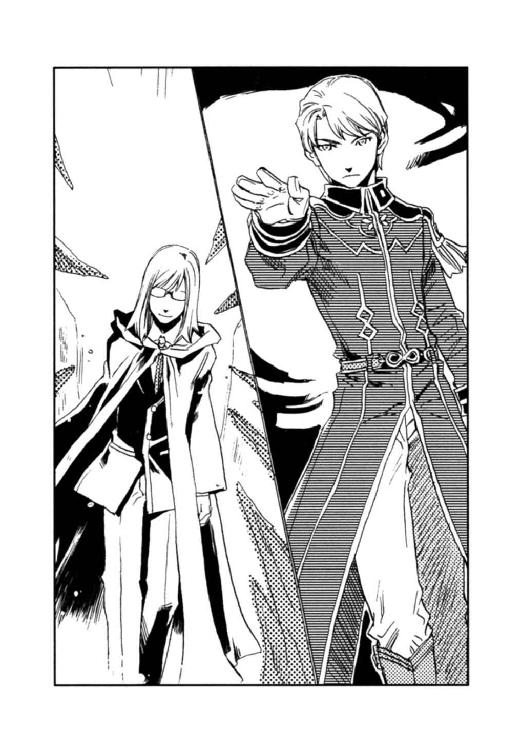
眼鏡の下でじっとキースを見つめていた灰色の瞳がふと和む。
「君のような男がいると知っていたら、ムセイオンの教官などではなく、陸軍の将校として潜入していたものを。残念だ」
ベニートは手の平を向かい合わせた。
彼を取り巻いていた氷の刃が一斉に中心へ向かう。しかし、その一瞬前にベニートは自分を球状の障壁で包んでいた。
刃は硬い音を立てて半透明の障壁面にぶつかり、湖へ落ちる。
ベニートは、「また会おう」と微笑み、球に包まれたまま水中に没した。
彼の消えた湖面に大波が寄せた。
薄氷の瞳は表情を変えず、黙って星を映す黒い湖を見ていた。
〈炉〉の入ったトランクはアッシュが岸に運び上げ、ハーラルとシーグの舟も桟橋に横付けされた。シーグの顔色はひどかったが、大事はないようだった。
連邦の兵士はカイルが銃を構えると、自分で泳いで岸に上がり、ジェイダが縛り上げた。カイルの麻酔弾で意識を失って湖に落ちた二人の兵士は、ユアンが救助した。
「ベニートは死んじゃったのかな」
ディオンはかつての担任が没した湖面を眺める。
「この程度で彼が死ぬとは思えん。あの障壁は水を通さない。しばらく水中に潜んで、人目につかない所で陸に上がるのだろう」
「え、じゃあ逃がしちゃったのか？」
「湖の周囲には小隊が常駐している。以前からムセイオンの情報が漏れていたので、密偵がいるということはわかっていたのだ」
（さすが中将、ぬかりはないか）
キースに比べたら自分はまだまだだ。帝国陸軍総司令官に至る道は遠いとディオンは思った。
「それがベニートだとわかったのは、人形が音波砲を盗んだとディオンが知らせてくれた時だったが」
音波砲が発見された店の従業員を絞り上げたところ、ベニートが新しく入れた研究員の名が浮かび上がったのだと言う。
「〈蒼い鷹〉が乗り込んで来たんで焦ったベニートは、自分に嫌疑がかけられないように、人形に音波砲を盗ませたんだな。それがかえって仇になっちまったってわけだ。まさか〈蒼い鷹〉に特別製の軍用犬がいるなんて、知らなかっただろうし」
カイルは言った。
「俺、単に〈五賢者の不思議〉を解くために人形を追っかけただけだけど、そんなことが役に立つなんて思わなかった」
「役に立ってくれなくては困る。そのためにお前たちをムセイオンに潜入させたのだからな」
「潜入捜査のためだったのか──？ そんなこと一言も......」
「最初から任務だと言えば、お前は熱くなって派手に動き回るだろう。黒幕に気づかれては潜入捜査の意味がない」
薄青の瞳がディオンを見下ろし、ディオンはチェッと唇を尖らせた。
そこへ人形を背中に乗せたアッシュがやってきた。人形はアッシュの首にしがみつき、オイオイと泣いていた。
「どういうことだ」
とディオンたちを含め、〈蒼い鷹〉たちは人形を取り囲んだ。但し、キースはその輪には入らない。
『デンゼル・クラウド将軍──ディオンのおじいちゃんに会わせてほしいんですって』
「は？」
ディオンたちは、呆気にとられて顔を見合わせた。
帝国陸軍総司令部の司令室で、人形はちょこんとソファーに座り、アーベルン元帥と対面していた。元帥の隣にはキースも控えている。
人形は連邦の軍の機密に関わることで、どうしてもデンゼルに話さなければならないことがあると言ったのだが、デンゼルは今ビヴロスの山中である。そこで、キースが人形を元帥に引き合わせたのだった。
『ボクを造ったのは、モーリス・タウンゼント博士です』
陶器の顔の下から、幼い子どもの声で人形は言った。
『連邦は博士に記録と報告が可能なからくり人形を造るように命じました。流行のビスクドールならどこにでもあるので、情報収集には都合のいい形態だと思ったのでしょう。博士は最初、頑として命令には従いませんでしたが、からくり人形が密偵として帝都に送られることを知り、この計画を思いついたのです』
人形は語った。
『連邦では、博士が〈精〉した生き物に、感情や自らの意思で行動する知能を持たせられるとは思っていません。せいぜいしつけられた動物のように、命じられたことだけを遂行する程度だと考えていたようです。そこを逆手にとって、博士はボクを造り、ただのからくり人形の振りをして帝都へ行くように言いました。密輸船で入国し、ベニートの手引きでムセイオンに侵入して、彼の言うとおり、教授たちの研究の情報を集めました。けれど、本当の目的は博士の義理のお父さん、デンゼル・クラウド将軍にお会いし、博士の伝言と連邦の機密情報を将軍にお届けすることだったのです』
「将軍が退役していることを博士は知らなかったのだな」
『はい』
人形は頷いた。
『けれど、ボクは将軍のお顔を知りませんし、ベニートに気づかれないように将軍を捜さなければなりません。博士は、帝都に着いたら人の耳には聞こえない声でアッシュを呼べと言いました。アッシュは犬のような姿をしたボクの兄弟で、アッシュに会って説明すれば、将軍の所へ連れて行ってくれると』
「時計塔に度々出向いたのは、機械室の化け物がアッシュだと思ったのか？」
『はい。けれどあの獣たちは、呼びかけに答えてくれませんでした。というより、そこまで言語が発達していないようでした』
「ディオンがタウンゼント博士の息子だということは、気づいていたのだろう？ 彼が時計塔で化け物と戦った時、君は彼を助けたそうじゃないか」
『もしやとは思っていましたが、アッシュに会うまでは名乗らないつもりでした。万一、人違いで、ベニートに知られてしまったら、計画が台無しですから』
「賢明だな」
元帥は笑む。
「クラウド将軍はビヴロスの山中で猟師をしている。代わりに私が博士の伝言を承ろうと思うが、いいかね？」
『もちろんです』
人形は頷き、モーリスが囚われている軍事施設の所在や警備状況などを詳細に語った。
『その要塞は連邦では最大規模のもので、〈沈まぬ星〉の本拠地にもなっています』
連邦政府の闇の覇者〈沈まぬ星〉──。
ベニートはそこからやってきて、何食わぬ顔でムセイオンの教授を務めていたのである。
『そこで博士は黒雷獣の開発をさせられています。博士は連邦に協力したくはないのですが、帝国の捕虜の命を盾に取られて......。完成までは時間の問題かと──』
人形の言葉に元帥とキースは息を吞む。
『博士は黒雷獣を造るぐらいなら自分の命を絶ってしまおうと、一時はそこまで考えたようでした。けれど、見張りの目が厳しくてそれも叶わず、またここで自分が死んでも他の〈精師〉が黒雷獣を完成させてしまうかもしれません。それよりは帝国に要塞の位置を知らせ、黒雷獣を破壊してもらう方が確実だと、博士はボクに伝言を託したのです』
人形はガラスの瞳で元帥を見つめる。
『博士からのお願いです。どうか黒雷獣が完成する前に、破壊してください』
元帥は深く頷いた。
「伝言はしかと受け取った」
司令室の外で待たされていたディオンはキースに呼ばれた。事件の報告のために、ディオンも人形と一緒に司令部を訪れていたのである。
「人形がお前に話があるそうだ」
ディオンが入室すると、人形がいきなり飛びついてきた。
『あー、良かった。これで肩の荷が下りたよー』
先刻の真面目な雰囲気とは打って変わってテンションの高い人形の様子に、元帥とキースは目を丸くした。
『博士の言ってた通りだった。黒い髪で紫の瞳で、ジュディにそっくりの美形で、頭が良くてちょっとやんちゃだけど性格は素直で──』
「ちょ、ちょっと待て。それって父さんが言ったのか？」
『そうだよー』
何たる親バカ──。
『ついでに泣き虫だって言ってた。ディオン、泣き虫なの？』
ディオンは絶句し、元帥はクックッと笑っていた。
『ボクは絶対君が博士の言ってたディオンだと思って、早く名乗りたかったんだよ。ボクはディオンだって』
「ディオン──って俺の名だよ」
『うん。でも博士はボクをディオンて呼んだよ。で、ディオンみたいに育てたからディオンになったのー』
「？？」
人形が言うには、〈精〉したばかりの自分に、息子と共に暮らしたいと思う気持ちからか、博士はディオンの喋り方や行動パターンを学習させたという。そして帝国へ送られるまでの短い間、我が子同様に人形のディオンをかわいがったそうだ。
『アッシュが、ディオンのお母さんのジュディに似てるのもそのせいなんだよー』
この無駄な賑やかさは、五歳の俺なのか──。
「で、俺に話って？」
『じゃ、言うねー』
人形はコホンと姿勢を正し、
『親愛なるディオンへ』
声音をガラリと変えた。大人の男──ディオンの父そっくりの声だった。
『父さんは元気だよ。一日として君を想わない日はない。十六歳になった君はどんな少年に成長したのだろう。高等学校に通っているのだろうか、それとも何か仕事に就いているのかな。おじいちゃんにもよく頼んでおいたが、〈精師〉になってはいけないよ。父さんのような目に遭わないとも限らないからね──』
ディオンはキースと目を見合わせて肩をすくめた。
『父さんのただ一つの願いは、君が歳を取って神様が迎えに来るまで、幸せに生きることだ』
人形のメッセージには父のディオンに対する思いが込められ、聞いていたディオンは胸が熱くなった。
『──父さんは諦めない。いつか、君に会えることを楽しみに頑張るからね。遠いこの地で、君の幸せを祈っている。今までもこれからもずっと──大好きだよ』
語り終えた人形をディオンはギュッと抱きしめた。
「ありがとう──」
「残念だな、君たちがいなくなってしまうなんて」
ムセイオンの船着き場で、大きなトランクを提げたディオンとフェルナンドはフランツたち特待生クラスの友人たちに囲まれていた。
人形のもたらした情報から帝国議会と軍が動き始め、〈蒼い鷹〉全員に召集がかかり、ディオンとフェルナンドもムセイオンを去ることになったのだ。
「面白かったよな、君たちとマーシア兄弟の〈五賢者の不思議〉解決競争」
「一緒に罰を受けさせられたのに？」
ディオンが笑うと、
「それもいい思い出さ。あんなにクラスが盛り上がったのは初めてだし、何たって、〈五賢者の不思議〉の仕掛けを全部知ってるのは、ムセイオンの歴史の中で俺たちだけなんだぜ」
ジャックは自慢げである。
時計塔の化け物はケトラー教授が〈精〉したものだと真実を知らせ、動く人形はタウンゼント博士が昔に造ったからくり人形が何かの拍子に動き出したと、半分だけ事実を語った。人形が造られた時期と本来の目的は軍の極秘なので伏せておく。
「僕も楽しかった。君たちに会えて本当によかった」
フェルナンドは名残惜しそうにクラスメイト一人一人と握手する。
ディオンも、
（大騒動だったけど、面白かったな）
と、骸骨を踊らせたり、涙に噎びながらみんなでホルムアルデヒドを〈精〉したりしたことを懐かしく思う。
（潜入捜査だなんて知らなくて、最初はいまさら学校なんてって思ったけど、友だちもできたし、父さんの手がかりも得たし、ムセイオンに入ってよかった）
キースは任務は半分で、本当は自分やフェルナンドに子どもらしい学校生活を味わわせたかったのかもしれない。
皇太子であるフェルナンドも、連邦やムスベルの組織が狙う〈光〉の玲石が手に埋まっているディオンも、これから先はもう無邪気に過ごすことはできないのだから──。
（ありがとう、中将）
ディオンは心の中でキースに感謝する。
「そう言えば、シーグは何で見送りに来ないんだ？」
シーグとハーラルの不在に気づき、フランツは辺りを見回す。
「どっちが優れた〈精師〉かはっきりさせたいとか言い出しておいて、勝負に負けっぱなしだったから、今更出てこられないんじゃないか」
ジャックたちが頷き合うのを見て、
「そうなのかな──」
ディオンは学生寮の方角を振り返る。
ユーミールの〈炉〉の争奪戦の後、シーグの容態が心配だったので、ディオンは肩の治療を兼ねて彼の部屋を訪れた。
キースも同行し、シーグとハーラルに今回の事件の概要を説明し、ベニートが連邦の密偵だったことは黙っていてほしいと頼んだ。
「わけもわからず教授の助手に連れ出されましたが、そういうことだったのですか。御迷惑をおかけしました」
ハーラルは自分たちが人質にとられたことで、作戦に支障を来したことを詫びた。
「君たちは被害者だ。謝ることはない」
キースはシーグに視線を移し、
「今回のことだけではない。お前は十年も砂礫の地下で過ごさねばならなかった。更に、領地を失って帝国で不自由な生活を強いられてきた御両親も、罪もない人々を戦禍に巻き込みたくないと嘆きながら黒雷獣を〈精〉しなくてはならなかったヴォルジェ大神官も、みな戦争の被害者なのだ」
ムスベルの崩壊を見てきた薄青の瞳が、失われた名家の末裔を哀しげに見つめる。
「つらかったな」
シーグは顔を伏せ、小さく頷いた。
それからディオンたちは報告のために司令本部を訪れ、しばらくムセイオンを留守にしたので、今日までシーグとは顔を合わせていない。
「最後に、会いたかったね」
フェルナンドも残念そうだった。
その頃──。
「いいのですか？ お二人とも発ってしまいますよ」
ハーラルは学生寮の窓から船着き場の方を眺めた。
「今更会って話すことなんかない」
シーグはそっぽを向いた。
「けれど、ディオン殿の手にある〈光〉の玲石は諦めると、彼にはっきり言っていないでしょう。気にしているかもしれませんよ」
「諦めてなどいない！ いつか彼を上回る〈精師〉になって、絶対に取り返して──」
シーグはそこまで言って声を詰まらせた。そんなことはできるわけない。玲石を取り出せばディオンの指は麻痺してしまう。
ディオンには命を救われた。誰もが幸せに笑って老いていけるといいと言った彼に心を打たれた。
自分はディオンに憧れてしまったのだ。あの強さと、明るさと、〈精〉の技術に──。
シーグの瞳にみるみる涙が溜まる。
「もういいではありませんか。ムスベルの秘宝の継承者として家名を存続させようと、あなたが頑張ったことは私がよく知っております。きっと、亡くなられたお祖父様も御両親も誇りに思っていらっしゃいます」
ハーラルは穏やかに笑んだ。
「ハーラル......」
「御立派でしたよ」
シーグはハーラルの胸に飛び込んで、幼子のように声を上げて泣いた。
同時刻、エイモス・アーベルン元帥はムセイオンの学長室にいた。
「申し訳ないの。本来ならばこちらから出向かねばならないところなのだが、馬車は腰に響いてな」
バジリウスはソファに埋もれ、曲がった腰を叩いた。
「お気遣いにはおよびません。お招きいただき、光栄に存じます」
エイモスは慇懃に笑む。
「ベニートは行方が知れぬと聞いたのじゃが──」
「はい。湖の周囲には蟻一匹這い出ませぬよう警戒態勢を敷いておりましたが、どうやって包囲網をくぐりぬけたのか」
「手練れの〈精師〉じゃ。目くらましや薬の類を〈精〉して兵士の目をごまかしたのやもしれぬな」
バジリウスは苦い顔をする。
「あやつが〈沈まぬ星〉の幹部だったとはの。いずれは儂の後に就かせようと期待しておったのじゃが......」
「軍としては今回の一件に箝口令を敷きたいと考えております。軍にも彼の教え子が多くおりますし、内外に与える影響が大きすぎますので」
「そうしてくれるとありがたい。とりあえずこちらでもベニートは病気療養のため休職ということにしてあるのじゃ。ムセイオンでは密偵を厚遇していたなどという醜聞を広めたくはないでの」
バジリウスは「穴を〈精〉してムセイオンごと入りたいぐらいじゃ」と、疲労の色を隠さずに呟く。
「では、我々が時計塔に忍び入り、ユーミールの〈炉〉を持ち去ったことを不問に付し、〈炉〉を軍で保管することを御了承いただけますかな」
「もちろんじゃ。そなたらが持ち出してくれなかったら、連邦の手に渡るところだったのじゃからな。考えてみれば儂らは戦略とかいうものに、とんと疎い。学者バカというのじゃろうな。だからベニートのような小賢しい者に簡単に騙されたのじゃと思う。〈炉〉のことは任せる」
バジリウスは苦笑する。
「承知いたしました。では──」
と席を立ったエイモスに、
「閣下」
バジリウスは呼びかけた。彼が陸軍総司令官を敬称で呼ぶのは初めてだった。
「心から感謝申し上げる」
思いも寄らぬ真摯な声音だった。
エイモスは親しみを込めた笑みを向けて敬礼し、学長室を出た。
「休暇をもらったらまた来いよ。君たちの席は空けとくからな」
級友たちは、舟に乗り込んだディオンとフェルナンドに手を振った。
「元気でねー」
舟を操縦するのは、パン屋のお仕着せを着ているカイルである。舟は夏の終わりの追い風に乗り、滑るように沖へと出て行く。
「あそこでも見送ってるぞ」
カイルは校舎を見上げた。ディオンたちが振り返ると、学生寮の窓からシーグとハーラルがじっとこちらを見ていた。シーグの目の周りは赤く腫れぼったかったが、表情は明るかった。
「またな」
ディオンは手を振った。
シーグは両手を合わせ、何かを〈精〉すると、手の平をディオンに向ける。
ポンと破裂音がしてシーグの手から小さな弾が発射された。それは狙い違わずディオンの額に命中した。
「いてて」
執念深いやつだとディオンは額を撫で、コロンと船底に転がった弾が、伝書鳩の足に着けるような通信用の円筒であることに気づく。
「手紙が入ってる」
ディオンは丸めた紙片を広げた。
──〈光〉の玲石はしばらく君に預ける。ヴォルジェ家が受け継ぐべきムスベルの秘宝だ。大事にしろ。シーグフリード・アレクサンドル・ヴォルジェ──
「あいつらしいな」
ディオンはクスクス笑って、
「わかった。任せとけ」
シーグに向かって叫んだ。
「ディオン、追伸があるよ」
フェルナンドは丸まった紙の端を伸ばした。
「光の賢者の〈不思議〉は僕が解いてみせる──だって。ああ、誰もいないはずのタウンゼント博士の研究室からすすり泣きの声が聞こえるっていうのだっけ。でも、何年も前のことなんでしょ？ 解けるのかなあ」
「ああ、俺たちの頃の附属研究所の〈不思議〉はそれだった」
舵を操っていたカイルが口を挟む。
「確かキースと秘密を解いたような......教授会の最中を狙って、キースと一緒にタウンゼント博士の研究室に忍び込んで......」
と記憶をたぐるカイルに、
「大佐、いいよ。もうその〈不思議〉は二度と起こらないんだから」
ディオンは慌てて止めた。
「ディオンも解いたの？ すすり泣きの〈不思議〉ってどんな仕掛けだったの？」
フェルナンドとカイルにじっと見つめられ、
「あれは俺だ」
しかたなくディオンは答えた。
「ディオン──!?」
「宿舎で留守番するには俺は幼すぎてさ、仕方なく父さんは俺とアッシュを研究室に連れて行ったんだ。でも、会議とかあると研究室で待たされることもあって──」
なかなか父が戻って来ないと、ディオンはべそべそ泣いた。しかし、研究室は本来、部外者立ち入り禁止になっている。すすり泣く声を不審に思った研究員が見に来る度、アッシュが『泣いちゃだめよ。見つかったらモーリスが叱られちゃうから』とディオンをクローゼットに隠したのだ。
「クローゼットの中で泣き寝入りしていた坊主は、お前だったのか」
「うわー。〈五賢者の不思議〉の一つが、ディオン自身だったなんて──。感動したらいいのか、呆れたらいいのか......」
フェルナンドは呆然とし、カイルはゲタゲタと笑った。
「だから言いたくなかったんだ。光の賢者の秘密が、人形にすり替わってホッとしてたのに」
ディオンは苦虫をかみつぶしたような顔で呟いた。
愛らしい黒い眼がパチッと開いた。
「やった！ さすがディオン」
フェルナンドは、ディオンの手を覗きこんだ。
「ああ、うまくいったみたいだ」
ディオンの左手の上には、小さな真っ白い子犬が乗っていた。子犬はパチパチと眼を瞬き、不思議そうに辺りを見回す。
〈蒼い鷹〉宿舎、ディオンとフェルナンドの部屋である。
「気分はどうだ？」
『悪くない』
子犬は自分の前足を見たり、首を回して尻尾を見たりした。
『うわっ。すごーい。ボクほんとに犬になったんだ』
「指が使えないから、ちょっと不便かもな」
『ううん、人形の振りしてじっとしてるのに比べたら、ずっと快適！』
フェルナンドは子犬を抱き上げ、「うわ、ふわふわだ。かわいい」と頰ずりした。
「ディオン、君なら本当に生き物の〈精〉ができちゃうんじゃない？」
「まさか。〈精〉し直したのは骨格と皮膚だけだ。脳も内臓もそのまま。最初から造るのは俺にはまだ無理だよ。どのみち、生き物を〈精〉するつもりはないけどさ」
黒雷獣を造らされることになったら大変である。
ディオンは人形を〈精〉し直した手の平の玲石をしばし見つめた。
（まさか、この玲石がこんな風に役立つとはな......）
シーグが十年の間、求めていた玲石である。
（こういう使い方ならいいだろ？）
ディオンは心の中でシーグに呼びかけた。
『博士との約束を果たしに行こう。案内するよ。博士の囚われている要塞へ』
子犬はディオンを見上げて尻尾を振った。
「目標に一歩近づいたね。議会や父上が何と言おうと、できるだけのことをするから」
フェルナンドの空色の瞳が、今までより凜々しく感じられた。
（ムセイオンで、フェルナンドは変わったよな）
ディオンは、時計塔でフェルナンドの〈精〉した障壁に守られたことを思い出す。
（守っているつもりだったのに、いつの間にか守られるなんてな......）
父さんを救い出す、そして戦争のない国を造る──。
彼がいれば夢は必ず叶う。そう確信した。
「ああ、頼む──二人とも」
ディオンは、子犬を抱くフェルナンドの肩に手を回した。
「おおっ、やったか！」
「さすが、天才モーリス・タウンゼント博士の息子だ」
広間でディオンたちを待っていた〈蒼い鷹〉隊員が盛大な拍手を送った。
「かわいー。こっちにおいで」
ジェイダは子犬を手招き、抱き上げて「よしよし」と頭を撫でる。
「今度は俺たちにも抱かせろ」
隊員たちは、真っ白い子犬を取り囲んでたいそうな賑わいぶりを見せた。
「ディオン、少なくともお父さんよりは、造形的なセンスがありますね」
次から次へと隊員たちの手に移る子犬を眺めてユアンが微笑む。
「やっぱ、そう思う？ 自分で言うのも何だけど、なかなかの秀作だと思ってるんだ」
ディオンは笑った。
『どうせ私の顔は怖いですよ。失礼しちゃうわ』
アッシュは拗ねてみせるが、幼い頃のディオンそっくりの子犬をアッシュが嫌うはずはない。子犬が駆け寄ってくると、アッシュは母犬のように愛しげに舐めた。
「名前は何にする？ ディオンじゃややこしいだろ」
「ちっちゃいからチビ」「それはあまりに芸がない」「アントニウスは？」「似合わねー」
隊員たちは勝手に盛り上がり、結局、子犬には雪という意味のシュネーという名前が付けられた。
「シュネー、今回の立て役者はあなたね」
「まったくだ。遠い連邦から、密命を受けてよくここまで辿り着いたな」
「僕たちも、それなりにムセイオンで情報収集してたんだけど──」
フェルナンドは呟いたが、少年たちの活躍は、シュネーの人気にかき消されてしまった。
階段の踊り場で、キースとカイルは煙草を吹かしながら、広間の様子を見ていた。
「さて、議会はどう出るか。まさか、タウンゼント博士ごと要塞を吹っ飛ばせなんて言わねーだろな」
「養父が、議会を納得させられるよう、戦略を練っているところだ」
カイルは子犬とディオンを代わるがわる眺め、「うまくいくといいがな」と呟いた。
「ところで、あの犬はどうなるのだ？」
キースの表情は変わらなかったが、カイルには彼の動揺が手に取るようにわかる。
「どうって......〈精〉された生き物だぞ。しかも頭ん中には連邦の情報がぎっちり詰まってるんだぜ。当然、機密扱いになって〈蒼い鷹〉に置いておくだろ」
その時、シュネーが踊り場を振り仰いだ。
『ちゅーじょーっ！ ボク、犬になったんですよー！』
小さな尻尾を振り振り、子犬は階段を駆け上がって来る。
「よせ、来るな」
キースは後退った。しかし傍若無人な子犬は制止を無視して近づいて来る。そして、あろうことかキースに向かって跳躍したのだ。
キースの身体がぐらりと傾いだ。
「おっと」
カイルはよろめくキースを片手で支え、もう片方の手でシュネーを抱き留めた。
「中将は、ちょっと体調不良なの。いい子だからあっちで遊んでな」
カイルはニッコリと笑んで子犬を階下にポイッと放る。シュネーは宙で三回転し、見事にディオンの腕の中に収まった。隊員たちが「お見事！」と、拍手喝采を送る。
「あれが部下に加わるのか......」
キースは額の汗を拭い、悲しいため息をついた。
「何たって、性格はガキの頃のディオンだからな。調教には苦労するかも」
カイルは笑いを堪えるのにたいそう苦労した。
あとがき
二巻目が、出せましたっ！
もう、だめかと一時は諦めましたが、根性振り絞れば何とかなるもんです！（何とかしてくださったのは、担当様ですが......）
遅ればせながら、皆様お元気でいらっしゃいますか？ お陰様で、『光の精師ディオン』の第二巻をお届けすることができました。嬉しいです！ ありがとうございます！
実は、本当にシリーズになるのかしらと半信半疑で一巻目を読み切りで書き、二巻目のことは全く考えておりませんでした。（この二巻目も一応読み切りになっております）
というわけで、二巻目のお話があった時、「奇跡だ」と思いましたが、困ったことにネタがなかったのです。出だしが遅れると、あとは押せ押せで、気がついたら締め切りまであと何日も残ってない状態でございました。「ダメです～。間に合いません～」とリタイアしかかった村田でしたが、読者様からのお便りと担当様に励まされ、何と、締め切りに間に合ったのです！
二度目の奇跡です！ こんなに切羽詰まった思いをしたのは、これまでの人生で初めてでした。（校正の段階で、相当な量の書き直しをするという掟破りなこともしましたが......。担当様、ごめんなさーい）
今回、ディオンとフェルナンドはムセイオンという〈精師〉養成学校に行き、学校の七不思議ならぬ〈五賢者の不思議〉を解きます。相変わらず無鉄砲なディオンに、頭に花が咲いてるフェルナンドですが、ムセイオンで二人はちょびっと成長します。そんな二人を見守るお兄さん方も、見た目はいいけど相変わらずちょっとずっこけてます。そして、そんな彼らに新しい仲間が加わります。エリートであるはずの〈蒼い鷹〉なのに、どうしてこんなのばっかりが集まってしまうのでしょうか──。（汗）
とにかく頭を空っぽにして一気に読める話を目指しました。日頃の憂さを忘れて楽しんでいただければ幸いです。
岩崎美奈子先生には、今回も麗しいイラストをありがとうございます。イラストを見るだけで、十分に憂さを忘れられるという方も多いのでは──？ 毎度のことですが、我が子ながらかっこよさに見惚れております。登場人物も村田も本当に幸せ者です。
そして、編集部の皆様、担当様にはいつもの百倍ぐらいご迷惑とご足労をおかけしてしまいました。深く深く反省しております～。
最後になりましたが、この本を手に取ってくださったすべての皆様に心から感謝申し上げます。ちなみに、２００７年７月発売の雑誌「The Beans VOL.9」に載った短編は、時間的には第一巻の直後になっております。そちらも読んでいただけると更に嬉しいです。
では、再びお目にかかれることを祈りつつ──。
村田 栞
カバー・本文イラスト／岩崎美奈子
デザイン／BELL'S
光の精師ディオン
初任務は秘密の修業
村田栞
平成26年6月1日 発行
(C) Shiori MURATA 2007
本電子書籍は下記にもとづいて制作しました
角川ビーンズ文庫『光の精師ディオン 初任務は秘密の修業』
平成19年8月1日初版発行
平成20年9月15日4版発行
発行者 山下直久
発行所 株式会社ＫＡＤＯＫＡＷＡ
〒102-8177 東京都千代田区富士見2-13-3
03-3238-8745（営業）
編集 角川書店
〒102-8078 東京都千代田区富士見1-8-19
03-3238-8506（編集部）
http://www.kadokawa.co.jp/